<!doctype html>
<html lang="zh-CN">
<head>
  <meta charset="utf-8">
  <meta name="viewport" content="width=device-width, initial-scale=1">
  <title>天文论文日报 2026-06-04</title>
  <style>
    :root {
      color-scheme: light;
      --bg: #eef3fb;
      --panel: #ffffff;
      --panel-soft: #f8fbff;
      --text: #172033;
      --muted: #65758b;
      --line: #dce6f2;
      --blue: #2563eb;
      --blue-dark: #1e40af;
      --cyan: #0891b2;
      --amber: #d97706;
      --shadow: 0 18px 50px rgba(30, 64, 175, 0.12);
    }
    * { box-sizing: border-box; }
    html { scroll-behavior: smooth; }
    body {
      margin: 0;
      background:
        radial-gradient(circle at top left, rgba(37, 99, 235, 0.16), transparent 32rem),
        radial-gradient(circle at top right, rgba(8, 145, 178, 0.12), transparent 28rem),
        var(--bg);
      color: var(--text);
      font-family: Inter, ui-sans-serif, system-ui, -apple-system, BlinkMacSystemFont, "Segoe UI", "Noto Sans CJK SC", "Microsoft YaHei", sans-serif;
      line-height: 1.75;
    }
    a { color: var(--blue); text-decoration-thickness: 0.08em; text-underline-offset: 0.18em; word-break: break-word; }
    a:hover { color: var(--blue-dark); }
    .page { max-width: 1080px; margin: 0 auto; padding: 32px 18px 56px; }
    .hero {
      position: relative;
      overflow: hidden;
      padding: 34px;
      border-radius: 28px;
      background: linear-gradient(135deg, #12213f 0%, #1d4ed8 52%, #0891b2 100%);
      color: #fff;
      box-shadow: var(--shadow);
    }
    .hero::after {
      content: "";
      position: absolute;
      inset: auto -80px -150px auto;
      width: 320px;
      height: 320px;
      border-radius: 999px;
      background: rgba(255, 255, 255, 0.14);
    }
    .report-nav { display: flex; justify-content: space-between; gap: 1rem; margin: 18px 0 0; }
    .report-nav a,
    .report-nav span { flex: 1; padding: 0.85rem 1rem; border: 1px solid var(--line); border-radius: 16px; background: rgba(255, 255, 255, 0.86); box-shadow: 0 10px 24px rgba(30, 64, 175, 0.08); text-decoration: none; font-weight: 700; }
    .report-nav .home { text-align: center; }
    .report-nav .next { text-align: right; }
    .report-nav span { color: var(--muted); background: rgba(248, 251, 255, 0.78); }
    .eyebrow { margin: 0 0 10px; color: rgba(255, 255, 255, 0.78); font-size: 0.95rem; letter-spacing: 0.08em; text-transform: uppercase; }
    h1 { position: relative; margin: 0; max-width: 760px; font-size: clamp(2rem, 5vw, 3.2rem); line-height: 1.15; }
    .subtitle { position: relative; max-width: 760px; margin: 16px 0 0; color: rgba(255, 255, 255, 0.86); font-size: 1.05rem; }
    main {
      margin-top: 22px;
      padding: 28px;
      border: 1px solid rgba(220, 230, 242, 0.9);
      border-radius: 24px;
      background: rgba(255, 255, 255, 0.92);
      box-shadow: var(--shadow);
      backdrop-filter: blur(10px);
    }
    main > p:first-child,
    main > p:nth-child(2) { color: var(--muted); }
    h2 {
      margin: 2.4rem 0 1rem;
      padding: 0.8rem 1rem;
      border: 1px solid var(--line);
      border-left: 6px solid var(--blue);
      border-radius: 16px;
      background: linear-gradient(90deg, #eff6ff, #ffffff);
      font-size: 1.45rem;
      line-height: 1.35;
    }
    h2:first-child { margin-top: 0; }
    h3 {
      margin: 2rem 0 1rem;
      padding: 1.15rem 1.25rem;
      border: 1px solid #bfdbfe;
      border-radius: 18px;
      background: linear-gradient(135deg, #f8fbff, #eef6ff);
      box-shadow: 0 10px 24px rgba(37, 99, 235, 0.08);
      font-size: 1.18rem;
      line-height: 1.45;
    }
    h4 { margin: 1.25rem 0 0.5rem; color: #0f3b7a; font-size: 1.02rem; }
    ul, ol { padding-left: 1.35rem; }
    li { margin: 0.3rem 0; }
    main > ul {
      padding: 1rem 1.2rem 1rem 2.2rem;
      border: 1px solid var(--line);
      border-radius: 14px;
      background: var(--panel-soft);
    }
    strong { color: #0f2f5f; }
    blockquote {
      margin: 1rem 0;
      padding: 0.9rem 1rem;
      border: 1px solid #fed7aa;
      border-left: 5px solid #f97316;
      border-radius: 12px;
      background: #fff7ed;
      color: #7c2d12;
    }
    code { background: #eaf1fb; padding: 0.12rem 0.3rem; border-radius: 6px; }
    table { width: 100%; border-collapse: collapse; margin: 1rem 0; overflow: hidden; border-radius: 12px; }
    th, td { padding: 0.75rem; border: 1px solid var(--line); vertical-align: top; }
    th { background: #eff6ff; }
    mjx-container { overflow-x: auto; overflow-y: hidden; max-width: 100%; padding: 0.25rem 0; }
    .math-display { margin: 1rem 0; overflow-x: auto; padding: 0.75rem 1rem; border: 1px solid #dbeafe; border-radius: 14px; background: #f8fbff; }
    main img { max-width: 100%; height: auto; display: block; margin: 1rem auto; border: 1px solid var(--line); border-radius: 14px; box-shadow: 0 10px 24px rgba(15, 47, 95, 0.12); }
    details.paper-detail {
      margin: 1.25rem 0 1.9rem;
      border: 1px solid #b9d7ff;
      border-radius: 18px;
      background: linear-gradient(180deg, #fbfdff, #f3f8ff);
      box-shadow: 0 10px 24px rgba(37, 99, 235, 0.08);
      overflow: hidden;
    }
    details.paper-detail[open] { border-color: #60a5fa; }
    details.paper-detail summary {
      cursor: pointer;
      list-style: none;
      padding: 1rem 1.15rem;
      background: linear-gradient(90deg, #dbeafe, #ecfeff);
      color: #173b73;
      font-weight: 800;
    }
    details.paper-detail summary::-webkit-details-marker { display: none; }
    details.paper-detail summary::before { content: "展开"; display: inline-block; margin-right: 0.65rem; padding: 0.12rem 0.5rem; border-radius: 999px; background: #2563eb; color: #fff; font-size: 0.78rem; }
    details.paper-detail[open] summary::before { content: "收起"; background: #0891b2; }
    details.paper-detail > *:not(summary) { margin-left: 1.15rem; margin-right: 1.15rem; }
    details.paper-detail > :last-child { margin-bottom: 1.2rem; }
    details.paper-detail h4 {
      margin-top: 1.15rem;
      padding-top: 1rem;
      border-top: 1px dashed #bfdbfe;
    }
    @media (max-width: 720px) {
      .page { padding: 18px 10px 36px; }
      .hero { padding: 24px 20px; border-radius: 22px; }
      .report-nav { flex-direction: column; }
      .report-nav .home { text-align: left; }
      .report-nav .next { text-align: left; }
      main { padding: 18px 14px; border-radius: 20px; }
      h2 { font-size: 1.25rem; }
      h3 { font-size: 1.05rem; }
    }
  </style>
  <script>
    window.MathJax = {
      tex: { inlineMath: [['$', '$'], ['\\(', '\\)']], displayMath: [['$$', '$$'], ['\\[', '\\]']] },
      svg: { fontCache: 'global' }
    };
  </script>
  <script defer src="https://cdn.jsdelivr.net/npm/mathjax@3/es5/tex-svg.js"></script>
</head>
<body>
  <div class="page">
    <header class="hero">
      <p class="eyebrow">Astro Daily</p>
      <h1>天文论文日报 2026-06-04</h1>
      <p class="subtitle">面向天文与物理专业读者的每日论文筛选、中文解读与延伸阅读。</p>
    </header>
    <!-- REPORT_NAV_START -->
    <nav class="report-nav" aria-label="日报前后导航" data-report-date="2026-06-04">
      <a class="previous" href="2026-06-03.html">← 上一期：2026-06-03</a>
      <a class="home" href="../index.html">⌂ 返回主页</a>
      <span class="next">没有更新的报告 →</span>
    </nav>
    <!-- REPORT_NAV_END -->
    <main>
      <p>生成时间：2026-06-04T13:35:41+08:00<br />
今日保留论文数：7<br />
内容构成：今日新文 7 篇；补充推荐 0 篇；经典旧文精读 0 篇</p>
<h2 id="_1">高能天体物理重点</h2>
<h3 id="1-early-multiwavelength-observations-of-at-2026fgk-the-luminous-afterglow-to-sub-luminous-grb-260310a-identified-independently-of-a-gamma-ray-trigger">1. Early Multiwavelength Observations of AT 2026fgk: The Luminous Afterglow to Sub-luminous GRB 260310A, Identified Independently of a Gamma-ray Trigger</h3>
<ul>
<li>来源：arXiv / astro-ph.HE</li>
<li>链接：https://arxiv.org/abs/2606.05146v1</li>
<li>作者：K. -R. Hinds, A. Y. Q. Ho, Y. Wagh, R. Jayaraman, D. A. Perley, G. Waratkar, A. Bochenek, B. P. Gompertz</li>
<li>评分：novelty 8/10，importance 8/10，relevance 10/10，final 9.70/10</li>
<li>推荐理由：近邻亚光度GRB 260310A的盲光学识别和早期多波段跟踪，给出Ic-BL SN、喷流Lorentz因子/离轴角和事件率约束；GRB主题高度相关且观测结果清楚。</li>
</ul>
<p><strong>中文题目</strong>：AT 2026fgk 的早期多波段观测：一个由光学巡天独立发现、对应亚亮伽马暴 GRB 260310A 的明亮余辉</p>
<p><strong>做了什么</strong>：这篇文章报道了 GRB 260310A/AT 2026fgk 的早期光学、X 射线、厘米到毫米波段跟踪观测。事件首先在光学巡天数据流中表现为快速变亮、偏红的瞬变源，随后与 Fermi-GBM 探测到的亚亮长伽马暴相联系。作者确认其红移为 \(z=0.153\)，伽马射线各向同性峰值光度约为 \(L_{\gamma,{\rm iso}}=10^{48.8}\,{\rm erg\,s^{-1}}\)，低于通常高光度长暴，但其多波段余辉异常明亮，并伴随典型的 Ic-BL 型 GRB 超新星。通过余辉上升时间和基本同步辐射建模，文章认为该事件可能来自较低初始洛伦兹因子 \(\Gamma_0\approx40\) 的喷流，或来自轻微偏轴观测，视线偏离角不超过约 \(3^\circ\)。作者还用 ZTF 的流量限制估计类似事件体积率，发现其与轴向高光度长暴率相当，从而对低 \(\Gamma_0\) 爆发的普遍性和 GRB 初始相对论物质的束流角提出约束。</p>
<p><strong>为什么重要</strong>：亚亮 GRB 与 Ic-BL 超新星的关系一直难以判定：它们究竟是普通长 GRB 的低能端、低 \(\Gamma_0\) 喷流、偏轴高能喷流，还是一种更接近冲击突破的现象？AT 2026fgk 重要在于它不是单纯依靠伽马触发后才找到的余辉，而是在光学巡天中被独立识别出来，且距离近、余辉亮、多波段覆盖早。这使它同时检验了伽马暴触发选择效应、光学巡天发现能力和低光度长暴物理起源。</p>
<p><strong>理论 / 观测 / 仪器方法价值</strong>：这项工作的价值主要有三点。第一，它给出一个可用于标定光学盲搜 GRB 余辉的近邻样本，说明快速、偏红、小时到天尺度变亮的光学瞬变可在未依赖高能警报时被识别。第二，多波段余辉和超新星共同约束了喷流动力学、视角和爆炸能量，连接了相对论外流与 Ic-BL 超新星参数。第三，事件率估计把单个明亮个例转化为总体约束：如果类似事件率接近高光度轴向长暴率，那么低 \(\Gamma_0\) 或宽角弱伽马辐射成分不能任意普遍。</p>
<p><strong>为什么应该关注</strong>：如果你关心 GRB 喷流结构、低光度 GRB、GRB-SN 连接、光学巡天瞬变分类，或者未来 Rubin/LSST 如何发现未触发余辉，这篇都值得读。它把一个看似“伽马射线不亮”的事件放在 X 射线、光学、射电和超新星背景下重新衡量，显示伽马暗弱并不等于外激波弱，也不等于爆炸能量低。更实际地说，它给出了如何从早期光变上升、颜色、宿主红移和射电亮度识别近邻 GRB 余辉的模板。</p>
<details class="paper-detail">
<summary>展开详细解读：文章讲解、背景、理论、重点章节、图表与相关工作</summary>
<h4 id="_2">文章详细讲解</h4>
<p>科学问题：亚亮长 GRB 的本质仍然不清楚。传统高光度长 GRB 通常有 \(L_{\gamma,{\rm iso}}\gtrsim10^{49.5}\,{\rm erg\,s^{-1}}\)，伴随相对论喷流和 Ic-BL 超新星；而低光度或亚亮 GRB 的伽马辐射弱、发现体积小、余辉通常也不够亮，导致样本偏少。问题是：这些事件是普通喷流在较低 \(\Gamma_0\) 下的表现，是观测者位于喷流边缘外的偏轴事件，还是由更宽角、较低相对论速度的冲击突破产生？AT 2026fgk/GRB 260310A 提供了一个难得测试点，因为它的伽马射线光度低，但多波段余辉很亮。</p>
<p>作者怎么做：文章首先利用 GOTO、LAST 和 ZTF 数据流识别一个快速上升、颜色偏红的光学瞬变，其光变斜率超过 \(1\,{\rm mag\,d^{-1}}\)，颜色约为 \(g-r=0.4\,{\rm mag}\)。随后将该光学源与 Fermi-GBM 探测的 GRB 260310A 关联，并开展从最早期到约 \(50\) 天的多波段跟踪，包括 X 射线、光学光度与光谱、厘米波和毫米波射电观测。光谱给出宿主红移 \(z=0.153\)，并在后期确认宽线 Ic 型超新星成分。作者还用基本余辉模型解释早期长达约 \(10^3\,{\rm s}\) 的光学上升。</p>
<p>关键结果：该事件的伽马射线各向同性光度为 \(L_{\gamma,{\rm iso}}=10^{48.8}\,{\rm erg\,s^{-1}}\)，属于亚亮 GRB；但它是光学盲搜中独立识别到的最近余辉之一，并且在 X 射线、光学、厘米到毫米波段都属于异常明亮的余辉。超新星参数接近典型 GRB-SN，抛射物质量约 \(M_{\rm ej}\approx3\,M_\odot\)，动能约 \(E_{\rm K}\approx10^{52}\,{\rm erg}\)。余辉上升可由两类情景解释：一是较低初始洛伦兹因子 \(\Gamma_0\approx40\)，导致减速时间推迟；二是轻微偏轴观测，视线偏离喷流轴不超过约 \(3^\circ\)。宿主星系质量和恒星形成率与其他亚亮 GRB 宿主相似。</p>
<p>局限和下一步：当前建模被作者称为 basic modeling，说明参数约束仍可能受外部密度、微物理参数、喷流结构、能量注入和视角退化影响。光学上升时间既可指向低 \(\Gamma_0\)，也可由偏轴几何或早期辐射成分混合造成；因此需要更密集的早期多色光变、偏振、VLBI 角尺寸或更长时间射电余辉来打破退化。事件率估计也受 ZTF 选择函数、小样本泊松误差和光学触发效率控制。下一步应把此类事件放入统一的盲搜余辉样本中，并与高能触发样本做联合选择函数建模。</p>
<h4 id="_3">背景知识</h4>
<p>研究对象是长 GRB、其宽线 Ic 型超新星伴随体，以及爆炸后由外激波产生的余辉。长 GRB 一般来自大质量恒星核心坍缩，中心引擎发射相对论喷流， prompt 伽马辐射来自内部耗散或磁化流过程，余辉来自喷流扫过周围介质后的同步辐射。若喷流足够接近视线方向，观测者会看到高光度伽马暴；若能量较低、\(\Gamma_0\) 较低、或视线略偏离喷流轴，伽马信号可能显著变弱。</p>
<p>低光度或亚亮 GRB 的历史样本包括 GRB 980425/SN 1998bw、GRB 060218/SN 2006aj 和 GRB 100316D/SN 2010bh 等。这些事件距离近、伽马光度低、常伴随 Ic-BL 超新星，因此曾被解释为普通 GRB 的低能延伸，也被解释为更宽角、低速度外流或冲击突破。难点在于低光度 GRB 的可探测体积很小，而传统发现依赖伽马卫星触发，样本选择严重偏向高 \(L_{\gamma,{\rm iso}}\) 和高 \(\Gamma_0\)。</p>
<p>现在值得重新看这个问题，是因为宽场光学巡天、快速警报系统和毫米/厘米后随观测的能力已经明显提高。ZTF、GOTO、LAST 等可以在未依赖高能触发的情况下发现快速光学瞬变；Fermi-GBM 则提供全天大视场但定位较粗的高能信息。二者结合后，可以找到过去被伽马选择函数漏掉、但光学和射电余辉很亮的事件。这类事件尤其适合检验“伽马暗弱是否等于喷流弱”这一常见假设。</p>
<p>一个常见误区是把 \(L_{\gamma,{\rm iso}}\) 直接等同于喷流总能量。实际上 prompt 伽马效率、视角、多普勒因子、喷流角结构和高能探测阈值都会影响 \(L_{\gamma,{\rm iso}}\)。另一个误区是把低光度 GRB 全部归入同一物理类别；有些可能是低 \(\Gamma_0\) 喷流，有些可能是偏轴普通喷流，还有些可能由 shock breakout 主导。AT 2026fgk 的意义正是在于它的伽马弱而余辉强，迫使我们把 prompt 辐射和外激波能量分开看。</p>
<h4 id="_4">基础理论 / 方法脉络</h4>
<p>从最基本图像看，GRB 余辉是相对论外流与外部介质相互作用后的同步辐射。喷流以初始洛伦兹因子 \(\Gamma_0\) 向外传播，扫过星周或星际物质后逐渐减速。被激波加速的电子获得非热能谱，在放大磁场中辐射，从射电到 X 射线形成宽带谱。早期光变上升常常对应外激波开始有效减速的阶段，因此峰值时间可用来估计 \(\Gamma_0\)，但前提是知道外部密度结构和能量尺度。</p>
<p>本文涉及的两个核心解释是低 \(\Gamma_0\) 与轻微偏轴。若观测者基本在喷流轴上，且 prompt 释放后外激波在 \(t_{\rm dec}\) 附近达到余辉峰值，则较晚的光学上升峰意味着喷流初始速度不如典型高光度 GRB 那样极端。若 \(\Gamma_0\) 仍较高，但观测者位于喷流轴外一个小角度，早期辐射会因相对论 beaming 偏离视线而被压低，直到 \(\Gamma\) 降到约 \(1/\theta_{\rm obs}\) 后光变上升。</p>
<p>多波段观测的理论价值在于区分谱段位置。标准余辉谱由自吸收频率 \(\nu_a\)、特征同步频率 \(\nu_m\) 和冷却频率 \(\nu_c\) 分段决定。射电和毫米波对 \(\nu_a\)、\(\nu_m\) 以及外部密度敏感；光学和 X 射线常用于约束电子能谱指数 \(p\)、冷却状态和是否存在额外能量注入。若仅有单波段光变，能量、密度和微物理参数 \(\epsilon_e\)、\(\epsilon_B\) 很容易退化。</p>
<p>对超新星部分，Ic-BL 光谱和光变给出爆炸抛射物质量 \(M_{\rm ej}\)、动能 \(E_{\rm K}\) 和镍质量等信息。宽线意味着高速度抛射物，常与中心引擎驱动爆炸相关。本文给出的 \(M_{\rm ej}\approx3\,M_\odot\) 与 \(E_{\rm K}\approx10^{52}\,{\rm erg}\) 说明超新星本身并不异常弱，因此 prompt 伽马弱不能简单归因于整个爆炸能量不足。</p>
<p>观测和统计上还要考虑选择效应。光学盲搜能发现的是亮度足够高、上升足够快、宿主背景不过强、且观测 cadence 合适的余辉；伽马触发能发现的是在探测器能段和时间窗口内超过阈值的 prompt 辐射。把两者样本率直接比较前，必须用巡天面积、有效持续时间、极限星等、红移可见体积和分类效率构造选择函数。</p>
<h4 id="_5">公式与推导</h4>
<p>第一步从各向同性等效伽马光度定义开始。若观测到能量通量 \(F_\gamma\)，在光度距离 \(D_L\) 处的各向同性光度近似为</p>
<div class="math-display">\[L_{\gamma,{\rm iso}}=4\pi D_L^2 F_\gamma K(z),\]</div>
<p>其中 \(K(z)\) 是把探测器能段换算到源静止系指定能段的修正。这个量不是喷流真实功率，而是把辐射假想为球对称时得到的观测表征。</p>
<p>第二步把外激波减速条件写成扫掠质量与喷流能量的关系。对均匀介质密度 \(n\)，当扫掠静质量约满足</p>
<div class="math-display">\[M_{\rm sw}c^2\Gamma_0^2\sim E_{\rm K,iso}\]</div>
<p>时外流显著减速。这里 \(E_{\rm K,iso}\) 是各向同性等效动能，\(M_{\rm sw}=(4\pi/3)R_{\rm dec}^3 n m_p\)，\(m_p\) 是质子质量。</p>
<p>第三步可得减速半径</p>
<div class="math-display">\[R_{\rm dec}\simeq \left(\frac{3E_{\rm K,iso}}{4\pi n m_p c^2\Gamma_0^2}\right)^{1/3}.\]</div>
<p>它说明能量越高或密度越低，减速发生得越远；\(\Gamma_0\) 越高，达到同等减速所需扫掠质量越少。</p>
<p>第四步用相对论到达时延把半径换成观测峰值时间：</p>
<div class="math-display">\[t_{\rm dec}\simeq (1+z)\frac{R_{\rm dec}}{2c\Gamma_0^2}.\]</div>
<p>把上式反解，可以得到轴向、均匀介质近似下的初始洛伦兹因子估计</p>
<div class="math-display">\[\Gamma_0\simeq \left[\frac{3E_{\rm K,iso}(1+z)^3}{32\pi n m_p c^5 t_{\rm dec}^3}\right]^{1/8}.\]</div>
<p>这就是用约 \(10^3\,{\rm s}\) 光学上升时间推断 \(\Gamma_0\approx40\) 的物理基础；注意指数 \(1/8\) 很小，因此对 \(E_{\rm K,iso}\) 和 \(n\) 的误差不极端敏感，但介质假设会影响系统误差。</p>
<p>第五步，同步辐射的特征频率可写成</p>
<div class="math-display">\[\nu_m\simeq \frac{3q_e}{4\pi m_e c}\Gamma B'\gamma_m^2(1+z)^{-1},\]</div>
<p>其中 \(q_e\) 和 \(m_e\) 是电子电荷与质量，\(B'\) 是共动系磁场，\(\gamma_m\) 是最低注入电子洛伦兹因子。这个式子把动力学 \(\Gamma\)、微物理 \(B'\) 和观测谱峰联系起来。</p>
<p>第六步，常用微物理闭合关系为</p>
<div class="math-display">\[B'=\left(32\pi \epsilon_B n m_p c^2\right)^{1/2}\Gamma,\]</div>
<p>其中 \(\epsilon_B\) 是激波后内能进入磁场的比例。电子能量比例 \(\epsilon_e\) 则控制 \(\gamma_m\)，通常有 \(\gamma_m\propto \epsilon_e[(p-2)/(p-1)](m_p/m_e)\Gamma\)，其中 \(p\) 是电子能谱指数。</p>
<p>第七步，分段谱在 \(\nu_m<\nu<\nu_c\) 的慢冷却区间近似为</p>
<div class="math-display">\[F_\nu=F_{\nu,\max}\left(\frac{\nu}{\nu_m}\right)^{-(p-1)/2}.\]</div>
<p>在 \(\nu>\nu_c\) 区间谱指数变为 \(-p/2\)。因此光学到 X 射线谱斜率可用于判断冷却频率 \(\nu_c\) 是否位于两者之间。</p>
<p>第八步，偏轴解释可用多普勒因子刻画。对速度 \(\beta c\) 且视线夹角 \(\theta\) 的辐射，</p>
<div class="math-display">\[\delta=\frac{1}{\Gamma(1-\beta\cos\theta)}.\]</div>
<p>观测频率和通量近似满足 \(\nu_{\rm obs}\propto\delta\nu'\)、\(F_{\nu,\rm obs}\propto\delta^{3+\alpha}F'_{\nu'}\)，其中 \(\alpha\) 是谱指数。轻微偏轴会显著压低 prompt 和早期余辉，但当 \(\Gamma\) 下降后通量回升。</p>
<p>第九步，光学巡天事件率可由有效体积时间估计：</p>
<div class="math-display">\[\mathcal{R}=\frac{N}{\langle VT\rangle},\qquad \langle VT\rangle=\int \epsilon(L,z,\Omega,t)\frac{dV_c}{dz}\frac{T_{\rm obs}}{1+z}\,dz\,d\Omega .\]</div>
<p>这里 \(N\) 是发现数，\(\epsilon\) 是由极限星等、cadence、天气、分类效率和光变模板决定的探测效率，\(dV_c/dz\) 是共动体积元，\(T_{\rm obs}/(1+z)\) 包含宇宙学时间膨胀修正。本文给出的类似事件率 \(0.30^{+1.37}_{-0.29}\,{\rm Gpc^{-3}\,yr^{-1}}\) 本质上受小样本泊松误差主导。</p>
<h4 id="_6">模型拟合 / 应用方法</h4>
<p>本文余辉建模的核心拟合量包括光学上升峰值时间、各波段通量归一化、谱斜率和时间衰减指数。若采用标准外激波模型，主要参数会包括 \(E_{\rm K,iso}\)、\(n\) 或风介质参数、\(p\)、\(\epsilon_e\)、\(\epsilon_B\)、\(\Gamma_0\)、喷流开角和视角。文章摘要强调 basic modeling，因此读者应把 \(\Gamma_0\approx40\) 或 \(\theta_{\rm obs}\lesssim3^\circ\) 理解为物理解释量级，而非唯一精确解。</p>
<p>参数退化是这类工作的关键。\(t_{\rm dec}\) 对 \(\Gamma_0\) 很敏感，但也依赖 \(E_{\rm K,iso}\) 和外部密度；光学亮度同时依赖能量、密度和微物理参数。低 \(\epsilon_B\) 可通过提高 \(E_{\rm K,iso}\) 或改变 \(n\) 部分补偿；偏轴观测引起的早期上升可与低 \(\Gamma_0\) 减速上升相似。只有把射电、毫米、光学、X 射线一起拟合，才可能通过谱峰移动和自吸收约束密度与能量。</p>
<p>超新星拟合通常会把余辉和宿主光扣除后，使用模板缩放或辐射扩散模型估计 \(M_{\rm ej}\)、\(E_{\rm K}\) 和 \(^{56}{\rm Ni}\) 质量。这里报告的 \(M_{\rm ej}\approx3\,M_\odot\) 与 \(E_{\rm K}\approx10^{52}\,{\rm erg}\) 接近 GRB-SN 典型值。残差诊断应关注：模板是否能同时匹配峰值时间和峰值亮度；光谱线速度是否支持光变推导出的动能；后期余辉是否会污染超新星红端连续谱。</p>
<p>事件率拟合或估计则不同于单事件物理拟合。它需要将 ZTF 的极限星等、覆盖天区、观测 cadence、候选筛选规则和光谱确认效率折算成 \(\langle VT\rangle\)。由于这里只有极少数类似事件，后验很可能由泊松统计和先验边界控制，置信区间非对称很大。读者应检查作者是否注入模拟光变到真实巡天 cadence，还是用解析近似；这会影响率估计的可信度。</p>
<p>模型可能失败的地方包括：早期光学不是单纯正向激波，而含有反向激波、prompt optical、能量注入或尘埃消光变化；外部介质不是均匀而是风型；喷流不是 top-hat，而是角结构喷流；高能辐射效率异常低导致 \(L_{\gamma,{\rm iso}}\) 不能代表喷流核心能量。实际应用中，本文更像是一个“如何识别和建模光学盲搜 GRB 余辉”的范例，而不是喷流参数的最终定标。</p>
<h4 id="_7">重点章节 / 结果段落怎么读</h4>
<p>数据与发现部分应首先阅读。重点是 AT 2026fgk 如何从 GOTO、LAST 和 ZTF 数据流中被标记为快速上升且偏红的瞬变源，以及这一候选如何与 Fermi-GBM 的 GRB 260310A 建立时空关联。这里决定了文章最有新意的地方：它不是传统伽马触发后再找光学余辉，而是光学巡天独立识别。</p>
<p>多波段观测部分是第二个重点。读者应查看 X 射线、光学、厘米波和毫米波的时间覆盖，尤其是前 \(50\) 天内各波段峰值和衰减是否能由同一外激波模型解释。射电和毫米数据尤其重要，因为它们对密度、自吸收和能量有更强约束。</p>
<p>光谱与超新星部分应关注红移确认、Ic-BL 特征和超新星参数推断。文章给出的 \(M_{\rm ej}\approx3\,M_\odot\) 与 \(E_{\rm K}\approx10^{52}\,{\rm erg}\) 需要结合谱线速度和模板拟合来看，不能只看光变峰值。</p>
<p>余辉建模与解释部分要把低 \(\Gamma_0\) 和轻微偏轴两种方案并列阅读。关键不是哪一个被“证明”，而是数据允许的参数空间：约 \(10^3\,{\rm s}\) 的长光学上升在何种密度、能量和视角下可复现。</p>
<p>事件率和讨论部分则把个例推广到总体。读者应重点检查 ZTF flux-limited 样本的选择函数、体积时间估计和泊松误差。若类似事件率真与轴向高光度长暴率相当，它会对低 \(\Gamma_0\) 喷流的数量和束流几何提出强限制。</p>
<h4 id="_8">建议重点查看的图表</h4>
<ol>
<li>
<p>发现光变图：检查早期 \(g\)、\(r\) 或其他光学波段的上升斜率、首个非探测上限和发现点之间的时间间隔。关键是确认 \(>1\,{\rm mag\,d^{-1}}\) 的快速上升不是 cadence 采样造成的错觉。</p>
</li>
<li>
<p>多波段光变图：检查 X 射线、光学、毫米和厘米波是否在时间演化上符合单一外激波模型。应特别看射电峰值时间相对于光学峰值的滞后，以及不同频段衰减斜率是否一致。</p>
</li>
<li>
<p>宽带谱能量分布图：查看不同 epoch 的 \(F_\nu\) 对 \(\nu\) 关系，判断 \(\nu_m\)、\(\nu_c\) 和 \(\nu_a\) 是否被数据真正夹住，还是依赖模型外推。</p>
</li>
<li>
<p>光学光谱序列：检查 Ic-BL 特征、线宽、红移线和超新星从余辉连续谱中显现的时间。读图时要注意宿主和余辉扣除是否充分。</p>
</li>
<li>
<p>余辉模型参数或示意图：若有低 \(\Gamma_0\) 与偏轴模型对比，应检查两种模型在早期上升、峰值和后期衰减残差上的差异，而不仅是总 \(\chi^2\) 或视觉拟合。</p>
</li>
<li>
<p>宿主星系性质图：查看宿主质量、恒星形成率和金属丰度是否与其他亚亮 GRB 或普通长 GRB 宿主一致。注意不同文献的星族模型和 IMF 假设会造成系统偏差。</p>
</li>
<li>
<p>事件率图或表：检查 \(\langle VT\rangle\)、发现效率、红移可见范围和泊松置信区间。由于 \(N\) 很小，误差条应是非对称且很宽。</p>
</li>
</ol>
<h4 id="_9">关键图表逐图导读</h4>
<p>图 1：通常应是发现与定位相关图。横轴可能为时间，纵轴为光学星等或通量，也可能叠加 Fermi-GBM 触发时间。读者要看首个非探测上限、首次探测点和随后的快速上升是否共同支持早期余辉识别。陷阱是星等轴反向，视觉上“向上”不一定代表变亮；还要确认不同巡天滤光片是否被简单拼接。</p>
<p>图 2：多波段光变图应是全文最关键图之一。横轴为触发后时间，常用对数坐标；纵轴为通量密度或经过平移的星等/通量。数据点代表 X 射线、光学、毫米和厘米波，模型线代表外激波拟合。主要结论是 AT 2026fgk 在多个波段都非常亮，且光学早期上升时间较长。读图陷阱是不同频段可能被人为垂直平移以便展示，不能直接比较绝对亮度。</p>
<p>图 3：宽带 SED 图应展示一个或多个 epoch 的 \(F_\nu\) 随 \(\nu\) 变化。横轴是频率，纵轴是通量密度；模型线可能包含自吸收、注入和冷却断点。应看光学到 X 射线的谱斜率是否要求 \(\nu_c\) 位于二者之间，以及射电/毫米点是否约束 \(\nu_a\) 或 \(\nu_m\)。陷阱是非同时数据若未做时间插值，会伪造谱弯曲。</p>
<p>图 4：光谱图或超新星模板比较图应显示不同日期的光学谱，横轴为静止系波长，纵轴为相对通量。读者应寻找宽的吸收/发射结构而非窄线，确认 Ic-BL 分类，以及与已知 GRB-SN 模板的相似性。陷阱是早期余辉连续谱会稀释超新星特征，晚期宿主窄线会影响局部连续谱归一化。</p>
<p>图 5：模型解释图可能比较低 \(\Gamma_0\) 轴向模型与轻微偏轴模型。横轴为时间，纵轴为某一波段通量或残差；也可能是参数空间图，如 \(\Gamma_0\) 对 \(n\) 或 \(\theta_{\rm obs}\) 对 \(E_{\rm K,iso}\)。关键是看两种解释是否在早期数据点上可区分。陷阱是若只显示最佳拟合线而不显示置信带，会低估退化程度。</p>
<p>图 6：事件率或比较样本图可能把 AT 2026fgk 放到 \(L_{\gamma,{\rm iso}}\)、红移、余辉亮度或体积率平面上。读者应看它与高光度长 GRB、低光度 GRB 和 GRB-SN 样本的相对位置。陷阱是不同样本的触发阈值和跟踪深度不同，不能把点密度直接解释为真实宇宙发生率。</p>
<h4 id="_10">论文原图 / 可嵌入图片</h4>
<p><strong>Fig02</strong><br />
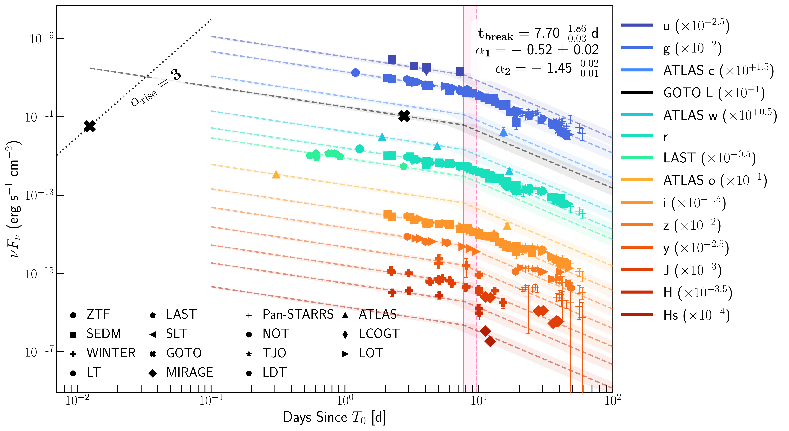<br />
图注：Multi-band optical and NIR light curves of GRB\,260310A / AT\,2026fgk, spanning from $\sim$17 minutes (first GOTO detection) to $\sim$+50~d post trigger. Filled symbols denote photometry from this work (ZTF, SEDM, WINTER, LT, LAST, GOTO, MIRAGE, NOT, TJO, ATLAS, LOT, LDT, LCOGT, and SLT). We extrapolate the pre-jet-break power-law in GOTO $L$ to the first GOTO epoch to demonstrate there is a brightening in GOTO $L$, indicating that the first epoch is pre-peak, and lies significantly below the extrapolated decay. We also plot a $t^{+3}$ rising power-law anchored to the GOTO-$L$ observation on the rise to predict the time of peak, $t_{\rm peak}$, based on \(\citet{sari1998ApJ...497L..17S, granot2002ApJ...568..820G}.\) Bands are labeled in the legend and offset vertically by factors indicated. Dashed lines show the best-fit smoothly broken power-law (see Section~\(\ref{sec:analysis-supernova-properties}\) for details); $\alpha_1 = -0.52 \pm 0.02$ (std) is the average pre-break index calculated from individual bands, $\alpha_2 = -1.45^{+0.02}_{-0.01}$ is the post-break index, with a break time $t_{\rm b} = 7.70^{+1.86}_{-0.03}$\,d (vertical pink band). All data are corrected for Galactic extinction.<br />
对应解读：对应“发现光变图”“多波段光变图”以及关键图表导读中的图1/图2：早期光学上升、首个GOTO探测、峰值时间和后续光学/NIR衰减。<br />
入选理由：这是验证光学盲搜识别余辉的核心图，直接展示约17分钟后的首次GOTO探测、早期上升是否真实、各光学/NIR波段的断裂幂律衰减以及约7.7天的光变断裂。图中还明确给出垂直平移、上升幂律和拟合指数，最能支撑日报中关于“&gt;1 mag d^-1快速上升”和长光学上升时间的解读。<br />
来源与置信度：\(arxiv_source\)；high；\(arxiv_source\) / main.tex:figure[2]</p>
<p><strong>Fig11</strong><br />
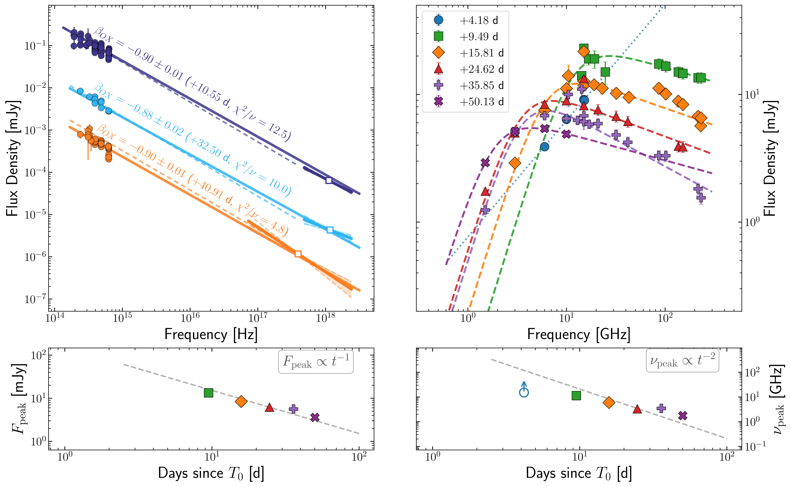<br />
图注：\(\emph{Top left}\): Optical + X-ray SED at three epochs between (+10.55\,d, +32.50\,d, and +40.91\,d observer frame), offset vertically by -0.75\,dex per epoch for clarify. Circles show optical/NIR photometry MW de-reddened. Colored power-law segments render the X-ray $F_\nu(\nu)$ across each instruments quoted band (0.3--10\,keV for Chandra, 3--79\,keV for NuSTAR) using the measured photon index ($\Gamma$; see Table~\ref{tab:xray}). Translucent solid lines are the observed two-point spectral index $\beta_{OX}$ from mean optical to X-ray flux density at the lower band edge ($\beta_{OX}$ = $-0.93\pm0.01$, $-0.89\pm0.03$, $-0.80\pm0.02$ in time order). Dotted lines show the intrinsic optical-X-ray slopes $\beta\approx0.93$ from a joint optical+X-ray fit. \(\emph{Top right}\): Radio SEDs at five epochs fitted with a smoothly broken power-law expected for SSA (dashed); dotted lines mark epochs with no peak in band. \(\emph{Bottom left, right}\): Peak radio flux density ($F_\mathrm{peak}$) and peak frequency ($\nu_{\mathrm{peak}}$) vs. time, with $t^{-1}$ and $ t^{-2}$ references slopes (grey dashed). Open arrows denote upper/lower limits.<br />
对应解读：对应“宽带谱能量分布图”和模型拟合段落：光学-X射线SED、射电SED、谱峰频率和峰值通量随时间演化。<br />
入选理由：这张图同时包含光学+X射线SED、多个epoch的射电SED以及radio peak flux/peak frequency随时间变化，是判断外激波模型、谱斜率、吸收峰和谱峰移动是否被数据约束的最关键诊断图。它比单一波段光变更能检验日报强调的参数退化和多波段联合约束。<br />
来源与置信度：\(arxiv_source\)；high；\(arxiv_source\) / main.tex:figure[11]</p>
<p><strong>Fig05</strong><br />
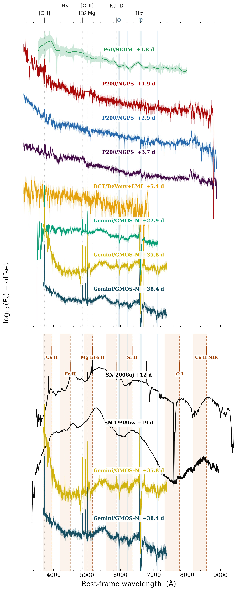<br />
图注：Optical spectral sequence of \(\thisgrb\) / AT\,2026fgk. Spectra are labeled by observing instrument and phase relative to \(\tzero.\) Spectra of SN\,1998bw and SN\,2006aj, well studied Type Ic-BL SNe, are included here for comparison in black. All spectra are smoothed and normalized for comparison. It is clear that no broad features appear until well into the decline phase, indicating the minimal contribution of the SN until late times (+23~d rest frame). Gemini/GMOS-N spectra at phases +22.8 and +35.8~d (rest frame) were observed at PAs to obtain host spectra, which suffered from differential slit loses that were corrected for in the final spectra.<br />
对应解读：对应“光学光谱序列”和关键图表导读中的图4：Ic-BL特征、与SN 1998bw/SN 2006aj模板比较、超新星成分出现时间。<br />
入选理由：该图直接展示不同相位的光谱序列，并与典型GRB-SN/Ic-BL模板对比，可用于确认宽线Ic型超新星分类以及早期余辉连续谱如何掩盖超新星特征。它是支撑“后期确认Ic-BL SN”和超新星物理解释的主要证据。<br />
来源与置信度：\(arxiv_source\)；high；\(arxiv_source\) / main.tex:figure[5]</p>
<p><strong>Fig08</strong><br />
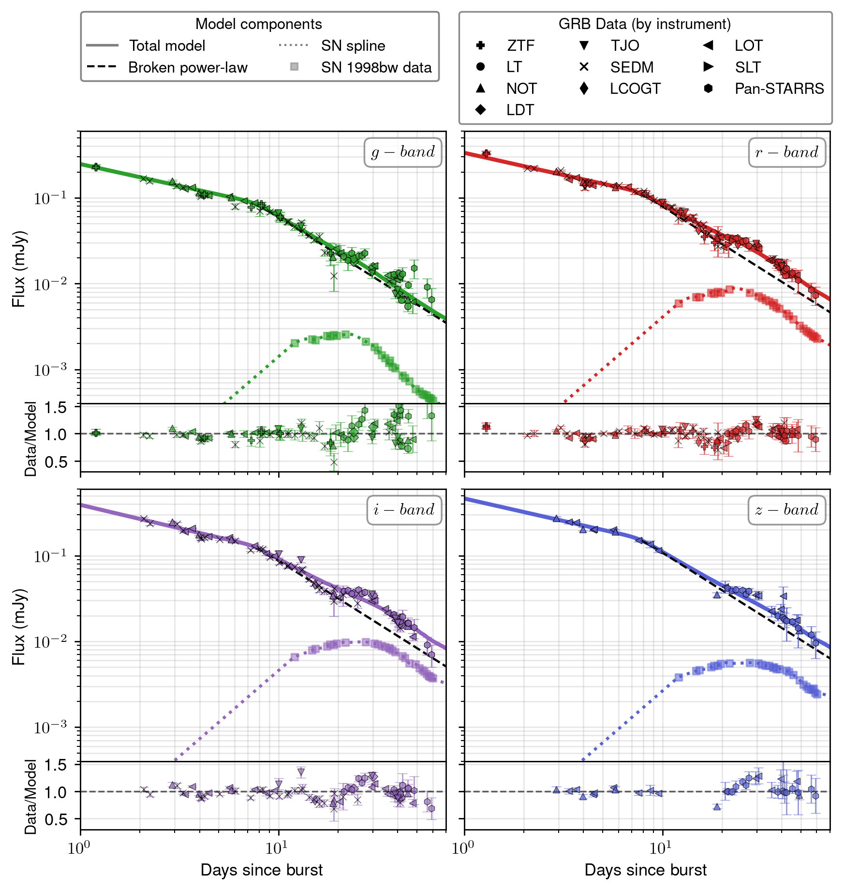<br />
图注：Optical light curves of \(\thisgrb\) / AT\,2026fgk in $g$, $r$, $i$, and $z$ bands, with photometry color-coded by band and marker shapes by instrument. In each band the best-fit model (\emph{solid}) is the sum of a BPL afterglow (\emph{dashed}) and a stretched+scaled SN\,1998bw template \(\citep\)[\(\emph{dotted}\)][]{clocchiatti2011AJ....141..163C}, obtained from a joint $\chi^2$ minimization across all four bands; scaled SN\,1998bw data points are shown as \(\emph{squares}.\) The emergence of the SN as a distinct bump above the fading afterglow is clearest beyond $\sim15$\,d. Sub-panels below each light curve show the residuals as the ratio of observed model flux, scattering about unit (\(\emph{dashed}\) line).<br />
对应解读：对应模型拟合段落中的超新星+余辉分解：g/r/i/z光变、BPL余辉、SN 1998bw模板缩放以及残差诊断。<br />
入选理由：日报特别提醒要关注余辉和宿主扣除后超新星拟合是否可靠；这张图给出多波段光变中afterglow与SN模板的分量分解，并带有残差子图，能直接检查SN bump是否显著、模板是否同时匹配峰值和衰减。<br />
来源与置信度：\(arxiv_source\)；high；\(arxiv_source\) / main.tex:figure[8]</p>
<p><strong>Fig06</strong><br />
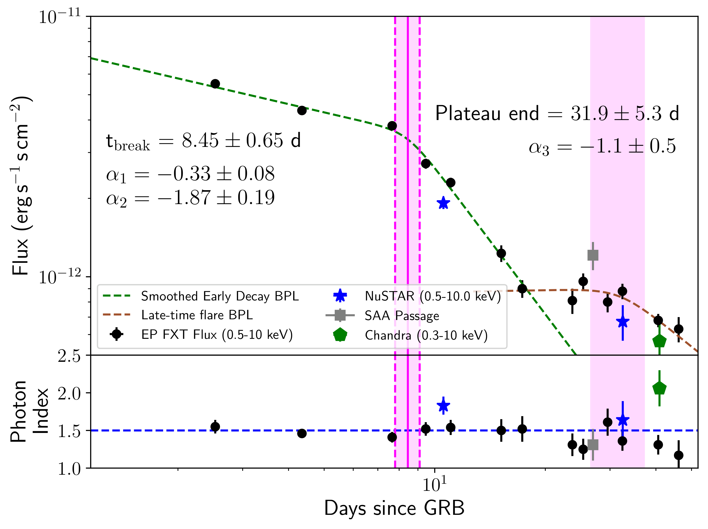<br />
图注：\(\emph{Top}\): X-ray ($\sim0.5$--10\,keV) light curve of GRB\,260310A / AT\,2026fgk from EP/FXT (\emph{black circles}), NuSTAR (\emph{blue stars}), and Chandra (\emph{green pentagon}). The early decline is well described by a smoothly broken power law (\(\emph{green dashed}\); $t_{\rm b} = 8.45 \pm 0.65$\,d, $\alpha_1 = -0.33 \pm 0.08\,, \alpha_2 = -1.87 \pm 0.19$). We observe a late time re-brightening/plateau until $31.9 \pm 5.3$\,d before a resumed decline with $\alpha_3 = -1.1 \pm 0.5$. \(\emph{Gray squares}\) mark South Atlantic Anomaly-affected epochs. \(\emph{Bottom}\): The X-ray photon index $\Gamma$.<br />
对应解读：对应“多波段光变图”和模型拟合段落：X射线光变、断裂幂律、晚期平台/再增亮以及光子指数演化。<br />
入选理由：X射线是外激波模型的重要高频约束。该图提供0.5--10 keV光变、断裂时间、前后衰减指数和晚期平台/再增亮信息，可检验光学断裂是否与X射线同步，并评估单一外激波解释是否存在张力。<br />
来源与置信度：\(arxiv_source\)；high；\(arxiv_source\) / main.tex:figure[6]</p>
<p><strong>Fig07</strong><br />
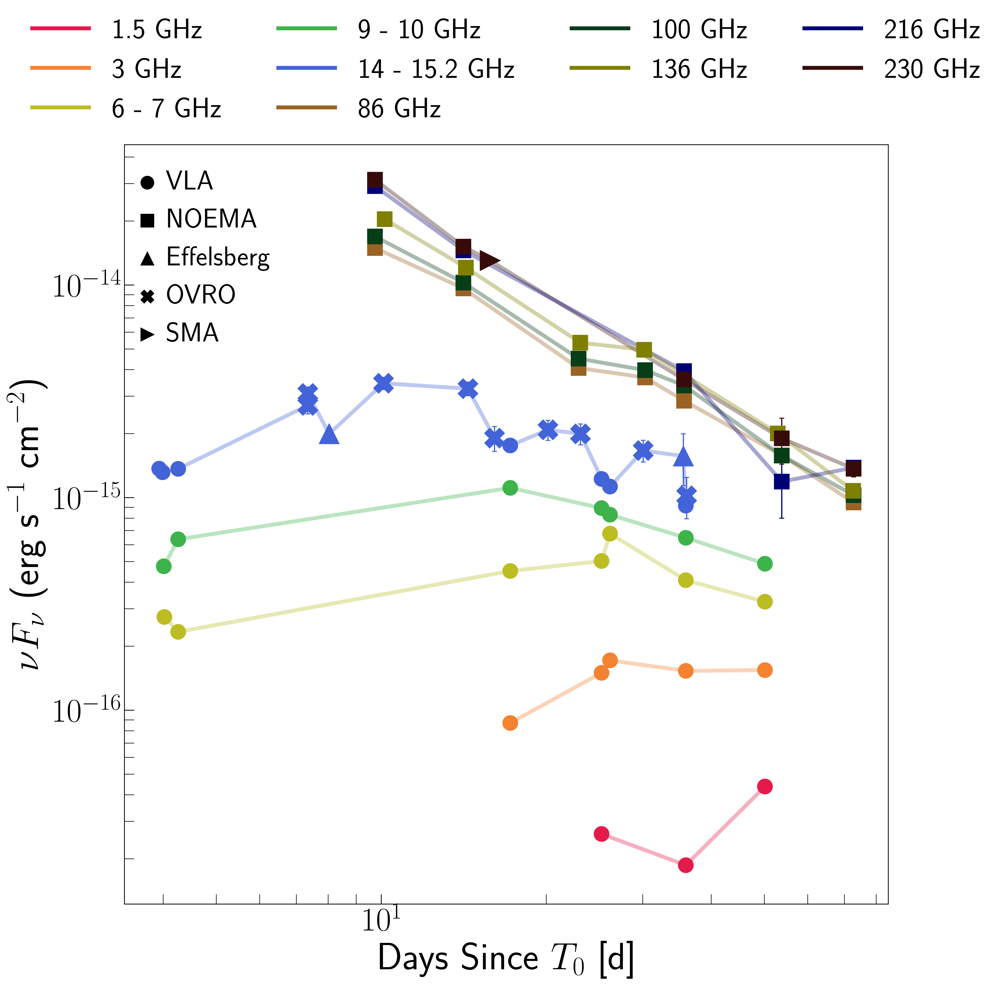<br />
图注：Radio (cm-to-mm) light curve of GRB\,260310A / AT\,2026fgk, color coded by frequency and with different symbols for different data sources.<br />
对应解读：对应“多波段光变图”：厘米到毫米射电光变、不同频率峰值时间和相对光学/X射线的滞后。<br />
入选理由：射电/毫米数据对外部密度、自吸收频率和谱峰演化非常关键。虽然该图说明较简略、未直接显示模型残差，但它是真实候选中唯一集中展示cm-to-mm光变的图，能支撑日报关于射电峰值滞后和多频段演化的检查。<br />
来源与置信度：\(arxiv_source\)；high；\(arxiv_source\) / main.tex:figure[7]</p>
<h4 id="_11">强相关工作</h4>
<p>这篇工作与低光度 GRB/GRB-SN 经典样本直接相关，特别是 GRB 980425/SN 1998bw、GRB 060218/SN 2006aj、GRB 100316D/SN 2010bh 等。那些事件建立了低 \(L_{\gamma,{\rm iso}}\) 与 Ic-BL 超新星的联系，但许多样本的余辉较弱或早期多波段覆盖不足。AT 2026fgk 的新意在于光学盲搜独立识别和异常明亮的外激波，为比较低光度 prompt 与强余辉提供了更干净的案例。建议检索关键词：low-luminosity gamma-ray bursts、GRB-SN、broad-lined Type Ic supernovae、optical orphan afterglow、sub-luminous GRB。</p>
<p>理论上，它连接了低 \(\Gamma_0\) 喷流、偏轴喷流和 shock breakout 三类解释。若它是低 \(\Gamma_0\) 轴向喷流，那么亚亮 prompt 可能来自相对论程度较低导致的高能辐射效率或峰值能量变化；若它是轻微偏轴，则说明部分亚亮 GRB 只是角结构和视角效应。与 GW170817/GRB 170817A 的偏轴结构喷流讨论也有概念联系，但 AT 2026fgk 是长 GRB 与坍缩星环境，物理尺度和宿主族群不同。建议检索关键词：structured jet、off-axis GRB afterglow、initial Lorentz factor、afterglow onset、GRB volumetric rate。</p>
<p>潜在张力在于事件率。经典低光度 GRB 的局域率通常被认为高于高光度长 GRB，但本文得到 AT 2026fgk-like 事件率与轴向高光度长暴率相容。这可能意味着“像 AT 2026fgk 这样余辉极亮、光学可盲搜识别的亚亮 GRB”只是低光度 GRB 子类，而不是全部低光度 GRB；也可能反映光学选择函数更偏向特定喷流几何和环境。读者不应把该率直接等同于所有低光度 GRB 的总率。</p>
<p><strong>相似工作</strong>：<br />
- https://arxiv.org/abs/2606.05146<br />
- https://ui.adsabs.harvard.edu/search/q=low-luminosity%20GRB%20supernova%20afterglow<br />
- https://ui.adsabs.harvard.edu/search/q=optical%20orphan%20afterglow%20ZTF</p>
<p><strong>基础理论 / 方法工作</strong>：<br />
- https://ui.adsabs.harvard.edu/abs/1998Natur.395..672G/abstract<br />
- https://ui.adsabs.harvard.edu/abs/2006Natur.442.1011C/abstract<br />
- https://ui.adsabs.harvard.edu/abs/2012ARA%26A..50..507G/abstract</p>
<p><strong>相反观点 / 张力线索</strong>：<br />
- https://ui.adsabs.harvard.edu/search/q=shock%20breakout%20low%20luminosity%20gamma-ray%20burst<br />
- https://ui.adsabs.harvard.edu/search/q=off-axis%20long%20GRB%20afterglow%20low%20luminosity<br />
- https://ui.adsabs.harvard.edu/search/q=low%20Lorentz%20factor%20gamma-ray%20burst%20afterglow%20onset</p>
</details>
<h3 id="2-temporal-invariance-is-an-illusion-time-dependent-influences-of-the-galactic-magnetic-field-on-uhecr-observations">2. Temporal Invariance Is an Illusion: Time-Dependent Influences of the Galactic Magnetic Field on UHECR Observations</h3>
<ul>
<li>来源：arXiv / astro-ph.HE</li>
<li>链接：https://arxiv.org/abs/2606.04140v1</li>
<li>作者：Veronika Vašíčková, Leonel Morejón, Karl-Heinz Kampert</li>
<li>评分：novelty 8/10，importance 8/10，relevance 9/10，final 9.35/10</li>
<li>推荐理由：UHECR在银河磁场中的时间延迟与瞬变源观测效应，直接属于高能宇宙线重点方向；提出可影响谱截止、成分和各向异性解释的结果，值得阅读。</li>
</ul>
<p><strong>中文题目</strong>：“时间不变”是一种错觉：银河系磁场对超高能宇宙线观测的时间依赖影响</p>
<p><strong>做了什么</strong>：这篇文章研究一个在超高能宇宙线建模中常被简化掉的因素：粒子穿过银河系磁场时产生的刚度依赖时间延迟。作者用 CRPropa 3.2 模拟河外超高能宇宙线进入银河系后的传播，重点考察瞬变源情形下，地球上看到的能谱、到达方向和成分如何随观测时间改变。主要结论是，银河系磁场可让粒子相对光子延迟数十万年量级；在爆发现象中，这种延迟会在刚度 \\(10^{18}\\)–\\(10^{19}\\,\\mathrm{V}\\) 附近制造类似谱截断的特征，并让观测成分逐渐偏重，同时到达方向与入射方向的相关性随延迟变弱。</p>
<p><strong>为什么重要</strong>：超高能宇宙线源的传统解释通常把观测能谱的高能截断归因于源加速极限、传播能量损失或组合效应。这篇文章指出，即使源本身没有在相应刚度处截断，银河系磁场造成的时间选择效应也可能在瞬变源观测中伪造出类似谱折断。这直接影响我们如何从 Pierre Auger Observatory、Telescope Array 等实验的能谱和成分数据反推源物理。</p>
<p><strong>理论 / 观测 / 仪器方法价值</strong>：理论价值在于把银河系磁场从一个只改变方向的“透镜”提升为同时改变观测时间窗、能谱和成分的动态滤波器。方法价值在于用刚度依赖驻留时间分布连接瞬变源注入史与地球端观测量，为以后做时间依赖的超高能宇宙线源模型提供了可操作框架。观测价值在于提醒读者：谱折断、偶极各向异性和成分变重不一定能被独立解释，它们可能是同一磁延迟选择效应的不同投影。</p>
<p><strong>为什么应该关注</strong>：如果你关心超高能宇宙线的来源，这篇文章值得看，因为它挑战了一个常用隐含假设：地球上今天看到的不同刚度粒子可以被当成同一时刻、同一源状态的样本。对瞬变源来说，这个假设可能失败。文章给出的物理图像很直接：低刚度粒子在银河系磁场中绕得更久，因而在有限观测时间窗内被选择性压低或延后，高刚度粒子先到，重核和轻核又因 \\(R=E/Z\\) 不同而被重新排序。</p>
<details class="paper-detail">
<summary>展开详细解读：文章讲解、背景、理论、重点章节、图表与相关工作</summary>
<h4 id="_12">文章详细讲解</h4>
<p>科学问题：超高能宇宙线研究长期面对三个互相纠缠的观测事实：能谱在最高能段出现折断或压低，质量组成随能量变化，到达方向只显示弱到中等程度的各向异性。传统模型往往把这些事实主要归因于源端最大加速刚度、河外传播中的能量损失，以及源族空间分布。但如果源是爆发式的，例如短时标活动星系核耀发、潮汐瓦解事件、伽马暴或磁星活动，那么粒子并不是连续稳态到达地球。此时银河系磁场产生的延迟不只是一个小修正，而会决定在某个观测年代能不能看到某一段刚度的粒子。</p>
<p>作者怎么做：文章使用 CRPropa 3.2 对河外宇宙线进入银河系后的传播进行数值模拟，核心变量是刚度 \\(R=pc/(Ze)\\)，因为洛伦兹偏转和磁延迟主要由刚度而非单独由能量决定。模拟不是只统计偏转角，而是记录粒子从银河系边界到达地球附近所需的额外时间，即相对直线光传播的延迟。通过改变注入刚度、粒子电荷和入射方向，作者构建银河系磁场对瞬变源信号的时间响应函数，再把这个响应函数用于预测能谱、到达方向相关性和各向异性随时间的演化。</p>
<p>关键结果：论文最醒目的结论是，进入银河系的超高能宇宙线可以被延迟数百千年，且延迟随刚度降低而迅速增大。在瞬变源场景中，这会产生一个位于 \\(10^{18}\\)–\\(10^{19}\\,\\mathrm{V}\\) 刚度范围的有效截断或压低，而这个范围正接近观测能谱中重要折断所在的区域。由于同一总能量下重核具有更低刚度，磁延迟还会让观测到的成分随时间发生系统性漂移，表现为某些时间窗内重成分相对增强或轻成分相对缺失。到达方向方面，延迟越长，粒子越可能经历更复杂的磁场路径，因此与银河系外入射方向的相关性越差；在某些爆发模型中，约 \\(100\\,\\mathrm{kyr}\\) 时标上会形成类似偶极的各向异性。</p>
<p>局限和下一步：这类工作对银河系磁场模型非常敏感，尤其是大尺度螺旋场、晕场、湍流分量和局域结构都会改变驻留时间分布。CRPropa 传播本身可以细致追踪粒子，但输入的源时标、注入谱、源距离、成分混合和银河系边界入射分布仍然带有模型假设。下一步最重要的是把这种时间响应函数嵌入全链条模型：从河外传播、源族时间分布、探测器曝光，到能谱、\\(X_{\\max}\\) 和到达方向联合拟合。只有做联合拟合，才能判断磁延迟截断与源最大刚度截断之间能否被真实数据区分。</p>
<h4 id="_13">背景知识</h4>
<p>研究对象是超高能宇宙线，即能量通常高于 \\(10^{18}\\,\\mathrm{eV}\\) 的带电粒子。它们的来源仍未确定，因为带电粒子在银河系和河外磁场中偏转，到达方向不能简单反指向源。能谱、质量组成和各向异性是目前最关键的三类信息：能谱告诉我们粒子数随能量如何衰减，组成通过空气簇射最大深度 \\(X_{\\max}\\) 等量间接推断，到达方向则承载源分布和磁场透镜的信息。</p>
<p>历史上，最高能宇宙线能谱的压低常被联系到 Greisen-Zatsepin-Kuzmin 效应，即质子与宇宙微波背景发生光 pion 产生、原子核发生光裂解等能量损失过程。另一种常见解释是源端最大加速能量有限，例如加速区磁场强度、尺度和激波速度给出 Hillas 条件。现代数据还显示能谱结构并非单一特征，所谓 ankle、suppression、不同实验之间的能标差异以及质量组成变化，使解释更加复杂。</p>
<p>银河系磁场过去常在超高能宇宙线文献中被当作方向偏转问题：给定一个银河系外到达方向和刚度，计算到地球方向会被偏转多少。但本文强调，磁场同时带来时间延迟。对于连续稳态源，时间延迟可能被平均掉；对于瞬变源，时间延迟就是选择函数。地球今天接收到的不同刚度粒子可能来自源爆发后的不同传播阶段，不能再把所有能量 bin 当作同一稳态注入谱的直接投影。</p>
<p>现在值得重新看这个问题有几个原因。第一，现有超高能宇宙线数据已经足够精细，能谱折断、\\(X_{\\max}\\) 演化和大尺度偶极都需要统一解释。第二，候选瞬变源的多信使研究迅速发展，潮汐瓦解事件、伽马暴、星暴星系中的瞬态活动都被纳入讨论。第三，数值传播工具如 CRPropa 已能较方便地耦合三维磁场、能量损失和复杂注入模型。第四，银河系磁场模型虽仍有不确定性，但 Faraday rotation、同步辐射和尘埃偏振等约束持续改进。</p>
<p>该领域常见误区之一是把“高能粒子偏转小”理解为“时间延迟可忽略”。事实上，哪怕偏转角看起来不大，长路径上的微小偏折也会累积出显著延迟，尤其在低刚度尾部。另一个误区是把观测谱截断直接等同于源最大能量；本文提醒我们，观测截断可能是传播时间窗造成的。还有一个误区是把成分变重必然解释为源注入变重或光裂解筛选，磁延迟同样能按刚度重排不同电荷粒子的到达时间。</p>
<h4 id="_14">基础理论 / 方法脉络</h4>
<p>基本物理图像从洛伦兹力开始。超高能宇宙线是带电粒子，在磁场中不会沿测地直线传播，而是围绕局域磁场作大半径回旋并叠加漂移。对相对论性粒子，控制偏转的是刚度 \\(R=pc/(Ze)\\)。同一能量下，电荷数 \\(Z\\) 越大，刚度越低，偏转和延迟越强；同一电荷下，能量越高，粒子越接近直线传播。</p>
<p>银河系磁场通常分为规则大尺度分量和湍流分量。规则场决定系统性偏转和可能的磁透镜效应，湍流场造成散射、角扩散和路径长度增加。对超高能宇宙线而言，轨道往往处于介于弹道传播和扩散传播之间的过渡区，因此不能只用简单直线偏转公式或经典扩散公式完全描述。CRPropa 这类代码通过数值积分粒子轨道来处理这个过渡区。</p>
<p>本文的关键假设是：河外粒子已经到达银河系边界，之后银河系磁场对其施加一个刚度和方向依赖的响应函数。这个响应函数不仅包括从边界入射方向到地球到达方向的映射，也包括延迟时间分布。对连续源，响应函数在时间上卷积后可能接近稳态；对瞬变源，响应函数的形状直接决定某个观测时间能看到哪些刚度的粒子。</p>
<p>观测量上，能谱通常写成到达地球的微分通量，质量组成用 \\(X_{\\max}\\)、\\(\\langle X_{\\max}\\rangle\\) 和其涨落间接约束，到达方向用角功率谱、偶极幅度或与候选源目录的相关函数表征。本文把这些量都放在时间依赖框架中理解：同一个爆发源在爆发后早期可能表现为高刚度、较强方向相关；晚期则可能表现为更低刚度、更强磁散射和更复杂的成分。</p>
<p>常见退化关系包括源最大刚度与磁延迟造成的低刚度缺失之间的退化，源注入成分与刚度选择造成的观测成分之间的退化，以及银河系磁场模型与源方向分布之间的退化。系统误差则来自实验能标、\\(X_{\\max}\\) hadronic interaction 模型、银河系磁场参数、湍流相干长度以及银河系边界处的入射分布假设。</p>
<h4 id="_15">公式与推导</h4>
<p>第一步是定义控制磁偏转的刚度。对电荷 \\(Ze\\)、动量 \\(p\\) 的相对论性粒子，刚度为</p>
<div class="math-display">\[R=\\frac{pc}{Ze}\\simeq \\frac{E}{Ze},\]</div>
<p>其中 \\(E\\) 是总能量，\\(c\\) 是光速，近似适用于 \\(E\\gg mc^2\\)。这说明同一能量下重核的有效磁刚度更低，因此更容易被银河系磁场延迟。</p>
<p>第二步由洛伦兹力得到 Larmor 半径：</p>
<div class="math-display">\[r_{\\rm L}=\\frac{pc}{ZeB}=\\frac{R}{B},\]</div>
<p>其中 \\(B\\) 是局域磁场强度。在天体物理单位下，\\(r_{\\rm L}\\) 与 \\(R\\) 成正比，与 \\(B\\) 成反比；当 \\(r_{\\rm L}\\) 与银河系磁场相干长度或盘/晕尺度可比时，粒子处于弹道与扩散之间的过渡传播。</p>
<p>第三步估计小角偏转。若粒子穿过长度 \\(L\\) 的近似均匀磁场，偏转角量级为</p>
<div class="math-display">\[\\delta \\simeq \\frac{L}{r_{\\rm L}}=\\frac{LB}{R},\]</div>
<p>该式只适用于 \\(\\delta\\ll 1\\) 的单一区域近似。真实银河系磁场方向会变化，湍流会让偏转呈随机游走，但这个式子清楚给出刚度依赖。</p>
<p>第四步把偏转转化为几何时间延迟。若路径长度因弯曲比直线路径多出 \\(\\Delta s\\)，延迟为</p>
<div class="math-display">\[\\Delta t=\\frac{\\Delta s}{c}\\simeq \\frac{L\\delta^2}{2c}.\]</div>
<p>代入小角偏转可得</p>
<div class="math-display">\[\\Delta t \\simeq \\frac{L^3B^2}{2cR^2},\]</div>
<p>这给出重要标度：在弹道小角极限下，延迟近似随 \\(R^{-2}\\) 增大。本文数值模拟的复杂延迟分布可以用这个标度作为直觉校验。</p>
<p>第五步对湍流磁场可写随机游走偏转。若相干长度为 \\(l_c\\)，传播距离为 \\(L\\)，每段偏转约为 \\(l_c/r_{\\rm L}\\)，则均方偏转为</p>
<div class="math-display">\[\\langle\\delta^2\\rangle \\simeq \\frac{L l_c}{r_{\\rm L}^2}=\\frac{L l_c B_{\\rm rms}^2}{R^2},\]</div>
<p>其中 \\(B_{\\rm rms}\\) 是湍流均方根磁场。相应延迟约为</p>
<div class="math-display">\[\\langle\\Delta t\\rangle \\simeq \\frac{L\\langle\\delta^2\\rangle}{2c}=\\frac{L^2 l_c B_{\\rm rms}^2}{2cR^2}.\]</div>
<p>该式说明延迟分布应与磁场强度和湍流结构相关，这正对应论文摘要中提到的延迟与银河系磁场强度相关。</p>
<p>第六步把银河系磁场看成时间响应函数。若源在银河系边界处的注入为 \\(Q(R,t,\\hat n_{\\rm in})\\)，地球观测通量可写成卷积：</p>
<div class="math-display">\[J(R,t,\\hat n)=\\int d\\hat n_{\\rm in}\\int d\\tau\\,K(R,\\hat n\\mid\\hat n_{\\rm in},\\tau)Q(R,t-\\tau,\\hat n_{\\rm in}),\]</div>
<p>其中 \\(K\\) 是由磁场传播给出的响应核，包含方向映射和延迟时间 \\(\\tau\\)。这就是“时间不变是假象”的数学表达：观测通量不是单纯的空间映射，而是时间卷积。</p>
<p>第七步考虑瞬变源。若源在 \\(t=0\\) 发生短爆发，可近似写成</p>
<div class="math-display">\[Q(R,t)=Q_0 R^{-\\gamma}\\exp\\left(-\\frac{R}{R_{\\max}}\\right)\\delta(t),\]</div>
<p>则地球端为</p>
<div class="math-display">\[J(R,t)\\propto Q_0R^{-\\gamma}\\exp\\left(-\\frac{R}{R_{\\max}}\\right)P(\\tau=t\\mid R),\]</div>
<p>其中 \\(P(\\tau\\mid R)\\) 是延迟概率分布。即使 \\(R_{\\max}\\) 很高，若某个刚度范围在给定时间 \\(t\\) 的 \\(P(\\tau\\mid R)\\) 很小，也会出现观测谱压低。</p>
<p>第八步描述成分选择。对核素 \\(i\\)，电荷为 \\(Z_i\\)，同一能量下刚度为 \\(R_i=E/Z_i\\)，观测通量可写作</p>
<div class="math-display">\[J_i(E,t)\\propto Q_i(E)P\\left(\\tau=t\\mid R_i=\\frac{E}{Z_i}\\right).\]</div>
<p>观测平均对数质量可由</p>
<div class="math-display">\[\\langle\\ln A\\rangle(E,t)=\\frac{\\sum_i J_i(E,t)\\ln A_i}{\\sum_i J_i(E,t)}\]</div>
<p>估计，其中 \\(A_i\\) 是质量数。该式说明成分随时间变重或变轻可以由磁延迟权重改变造成，而不必完全归因于源注入成分变化。</p>
<p>第九步给出方向各向异性诊断。大尺度偶极可由到达方向单位矢量 \\(\\hat n_k\\) 估计为</p>
<div class="math-display">\[\\boldsymbol{d}=\\frac{3}{N}\\sum_{k=1}^{N}\\frac{\\hat n_k}{\\omega(\\hat n_k)},\]</div>
<p>其中 \\(N\\) 是事件数，\\(\\omega(\\hat n)\\) 是曝光函数；实际分析需更严格地处理非均匀曝光。若延迟越长方向越随机，则 \\(\\boldsymbol{d}\\) 的幅度和相位会随时间演化，这对应论文中约 \\(100\\,\\mathrm{kyr}\\) 时标形成偶极状各向异性的结果。</p>
<p>第十步用似然连接模拟与观测。若能谱 bin 中观测计数为 \\(N_j\\)，模型预期为 \\(\\mu_j(\\theta)\\)，可写 Poisson 似然</p>
<div class="math-display">\[\\ln\\mathcal{L}(\\theta)=\\sum_j\\left[N_j\\ln\\mu_j(\\theta)-\\mu_j(\\theta)-\\ln(N_j!)\\right],\]</div>
<p>其中 \\(\\theta\\) 包括源谱指数、注入成分、爆发时间、磁场模型参数和归一化。比较含磁延迟模型与稳态模型，可用 \\(\\Delta\\ln\\mathcal{L}\\) 或后验预测残差判断磁延迟是否真实改善对能谱、成分和各向异性的联合描述。</p>
<h4 id="_16">模型拟合 / 应用方法</h4>
<p>这篇文章的核心不是简单拟合一个封闭解析模型，而是通过数值传播得到银河系磁场的刚度依赖响应，再将它作用到瞬变源注入上。因此可拟合量通常包括注入谱指数 \\(\\gamma\\)、源端最大刚度 \\(R_{\\max}\\)、核素丰度、爆发距今年龄、源方向或源族分布，以及通量归一化。若扩展到真实数据，还需要同时拟合实验能标偏移和成分解释所依赖的强子相互作用模型。</p>
<p>似然层面，能谱可用 Poisson 或 Gaussian 近似处理每个能量 bin 的事件数；\\(X_{\\max}\\) 分布最好不要只拟合均值，而应拟合全分布或至少同时拟合 \\(\\langle X_{\\max}\\rangle\\) 与 \\(\\sigma(X_{\\max})\\)；到达方向可用非均匀曝光下的球谐系数、偶极向量、两点相关函数或与源目录的交叉相关似然。时间依赖模型的特殊之处在于，模型预期 \\(\\mu_j\\) 不只由能量决定，还由观测时间相对爆发时间决定。</p>
<p>参数退化非常关键。源端 \\(R_{\\max}\\) 较低会压低高刚度通量，磁延迟在有限时间窗内也会压低某些刚度通量，两者在能谱上可能相似。注入重元素丰度较高会让 \\(\\langle\\ln A\\rangle\\) 增大，而磁延迟按 \\(E/Z\\) 筛选不同核素也会改变观测成分。银河系磁场强度增强、湍流相干长度变大或爆发年龄改变，都可能把谱折断位置移动到相近能区，因此单看能谱很难唯一解释。</p>
<p>残差诊断应当联合看。若磁延迟解释正确，能谱折断附近应伴随到达方向相关性的变化和成分演化，而不是只有通量下降。读者应特别关注模型是否能同时复现折断能区、\\(X_{\\max}\\) 趋势和大尺度偶极相位。如果模型只在能谱上看起来好，但在方向分布上预测出过强热点或错误偶极方向，那么磁场模型或源假设可能有问题。</p>
<p>模型可能失败的地方包括：采用的银河系磁场模型不代表真实局域磁环境；忽略河外磁场延迟导致把全部时间结构错误归因于银河系；源并非单次爆发而是多次活动或长时标平台；边界入射方向分布过于理想化；探测器曝光和能量重构系统误差未充分传播。实际应用中，更稳健的做法是对多个银河系磁场模型、湍流 realization、源年龄分布和注入成分做层级贝叶斯比较，而不是宣称某一个延迟曲线给出唯一解释。</p>
<h4 id="_17">重点章节 / 结果段落怎么读</h4>
<p>数据/模拟设定部分应首先看作者如何定义银河系边界、地球观测球、注入方向和刚度网格。这里决定了延迟分布是否可解释为真实物理驻留时间，还是部分受数值边界条件影响。还要检查使用的是哪一种银河系磁场模型，是否包含湍流分量，以及湍流 realization 是否做了平均。</p>
<p>方法部分的重点是 CRPropa 3.2 如何记录粒子轨迹、到达时间和方向。读者应确认时间延迟是相对什么参考路径定义的：相对从银河系边界到地球的光行时，还是相对无磁场直线传播。还要看粒子在未到达地球时如何处理，是丢弃、回溯，还是用统计权重修正。</p>
<p>主结果部分应围绕刚度依赖驻留时间分布阅读。关键不是平均延迟一个数，而是分布宽度、长尾、方向依赖和磁场强度相关性。对瞬变源来说，长尾往往比均值更重要，因为它决定晚期低刚度粒子是否仍能到达。</p>
<p>瞬变源能谱和成分结果部分是文章的物理核心。读者应看作者如何从延迟分布构造地球端时间切片能谱，以及 \\(10^{18}\\)–\\(10^{19}\\,\\mathrm{V}\\) 的截断是否稳定存在。还要分清该截断是在刚度空间还是能量空间呈现；对混合成分而言，二者不能简单等同。</p>
<p>讨论和稳健性检验部分应重点看作者是否比较不同源年龄、不同入射方向、不同成分和不同磁场强度下的结果。如果只有少数示例，结论应理解为“存在这种效应且可能重要”，而不是“已经证明观测谱折断主要由该效应造成”。</p>
<h4 id="_18">建议重点查看的图表</h4>
<ol>
<li>
<p>刚度对延迟时间的图：看横轴是否为刚度 \\(R\\)，纵轴是否为延迟 \\(\\Delta t\\) 或驻留时间；重点检查中位数、分位区间和长尾是否在 \\(10^{18}\\)–\\(10^{19}\\,\\mathrm{V}\\) 附近急剧变化。</p>
</li>
<li>
<p>延迟与银河系磁场强度或轨迹位置的相关图：看长延迟粒子是否集中在强磁场区域、银河盘附近或特定磁场结构中；这关系到结果是否由少数路径主导。</p>
</li>
<li>
<p>瞬变源时间切片能谱：看不同爆发后时间的模型线如何移动，尤其是谱压低是否出现在摘要所说的刚度范围。要注意纵轴归一化是否人为调整，否则容易误读截断强度。</p>
</li>
<li>
<p>成分随时间或能量变化的图：如果以 \\(\\langle\\ln A\\rangle\\) 或各核素分数展示，应检查变重趋势是否与刚度筛选一致，而不是只由注入设置决定。</p>
</li>
<li>
<p>到达方向相关性图：看地球端方向与银河系外入射方向之间的角距离分布如何随延迟变宽。关键是长延迟粒子是否真的失去源方向记忆。</p>
</li>
<li>
<p>偶极或各向异性演化图：看偶极幅度和相位是否在约 \\(100\\,\\mathrm{kyr}\\) 时标上系统变化；还要看统计涨落区间，避免把低事件数导致的假偶极当成物理信号。</p>
</li>
<li>
<p>稳健性或模型比较表：看不同磁场模型、湍流 realization、源方向和注入成分下，谱截断位置与延迟分布是否稳定。</p>
</li>
</ol>
<h4 id="_19">关键图表逐图导读</h4>
<p>图 1：如果论文以传播几何或银河系磁场示意开篇，读者应先确认坐标系、银河系边界、地球位置和入射方向定义。图中的磁场线或颜色通常不是定量结论，真正需要看的是模拟体积和边界条件是否会偏向某些方向。读图陷阱是把示意图中的单条轨迹理解为典型轨迹；实际结论应来自大量粒子的统计分布。</p>
<p>图 2：刚度 \\(R\\) 与延迟时间 \\(\\Delta t\\) 的关系图应是本文最重要的诊断之一。横轴通常为对数刚度，纵轴为对数延迟或驻留时间，散点或阴影区表示不同入射方向和磁场路径的离散。主要结论应是延迟随刚度降低迅速增加，并可达到数百千年。读图时要看分位数而不只看均值，因为瞬变源响应由分布尾部强烈控制。</p>
<p>图 3：若展示不同时间切片的地球端能谱，横轴可能是能量或刚度，纵轴为归一化通量或 \\(E^3J(E)\\)。模型线之间的差异展示爆发后不同年代能看到的刚度范围。主要结论是有限时间窗可产生类似谱截断的压低。读图陷阱是混淆刚度截断与能量截断；对混合核素，\\(E=ZR\\)，所以不同元素在能量轴上的特征位置不同。</p>
<p>图 4：成分演化图通常会给出不同核素通量、质量分数或 \\(\\langle\\ln A\\rangle\\)。横轴若为能量，读者应检查重核增强是否出现在预期刚度筛选区；横轴若为时间，则应看轻核和重核到达峰值是否错开。主要结论是磁延迟可让观测成分逐渐偏向较重核。陷阱是把这种偏重直接等同于源端丰度偏重。</p>
<p>图 5：到达方向图可能用全天 Mollweide 投影、角距离直方图或源方向相关函数展示。数据点代表模拟到达事件，颜色可能编码延迟或刚度。主要结论是延迟越长，到达方向越不保持银河系外入射方向信息。读图时要注意曝光是否均匀；若未卷积真实探测器曝光，不能直接与 Auger 或 TA 天图逐点比较。</p>
<p>图 6：偶极各向异性随时间的图应关注偶极幅度、相位和误差带。若模型在约 \\(100\\,\\mathrm{kyr}\\) 形成偶极状结构，读者应检查该结构是否对应真实粒子数足够的时间窗，以及是否对源方向或磁场 realization 稳定。陷阱是只看偶极幅度不看相位；观测上相位是否接近实测大尺度各向异性同样重要。</p>
<p>图 7：稳健性图或附录图若比较不同银河系磁场模型，应看谱截断位置、延迟中位数和方向去相关程度是否保持。若不同模型差异很大，文章结论更适合作为机制展示；若差异较小，则说明磁延迟是相当普遍的效应。</p>
<h4 id="_20">论文原图 / 可嵌入图片</h4>
<p><strong>Fig03</strong><br />
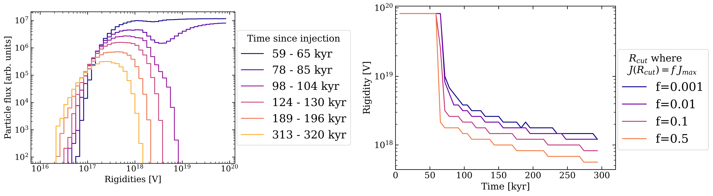<br />
图注：Left: Rigidity distribution of particles arriving at different times relative to the injection time at the edge of the Galaxy. The spectra observed between about 100-300~kyr after an isotropic injection show a clear cutoff decreasing from approximately 5 to 1\,EV over time. Right: Temporal evolution of the cutoff. The plot shows the rigidity $R_{\rm cut}$ at which the flux $J$ drops to the percentage values of the maximum flux $J_{\rm max}$ denoted in the legend.<br />
对应解读：建议重点查看的图表第3项“瞬变源时间切片能谱”；关键图表逐图导读图3；模型拟合段落中关于磁延迟产生刚度截断、爆发年龄与源端最大刚度退化的讨论。<br />
入选理由：这张图直接展示不同到达时间窗下的刚度分布以及截止刚度随时间演化，是论文“10^18–10^19 V范围内出现时间依赖截断”这一核心结论的最强证据。相比单纯示意或方向图，它同时给出时间、刚度和通量压低三者关系，最适合支撑日报对瞬变源谱截断机制的详细解读。<br />
来源与置信度：\(arxiv_source\)；high；\(arxiv_source\) / \(temp_effects_GMF_on_UHECR_Vasickova_Morejon_Kampert_2026.tex\):figure[3]</p>
<p><strong>Fig01</strong><br />
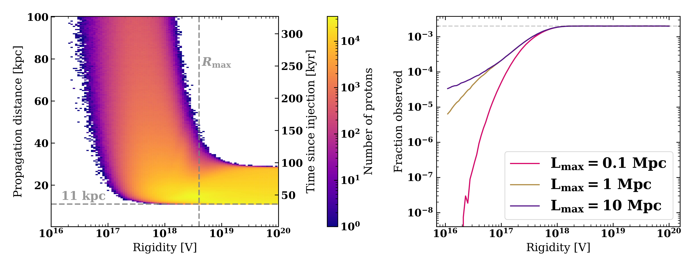<br />
图注：Left: Two‐dimensional event density histogram as a function of rigidity $R$ and propagation length $L$ in the Galaxy. The right axis expresses the corresponding propagation time, $t=L/c$. Dashed red lines mark the minimum distance to the injection sphere and the maximal rigidity inferred in fits of the UHECR spectrum and composition \(\citep\)[e.g.][]{PierreAuger:2023htc}. Right: Relative acceptance, compared to the high-rigidity value, as a function of rigidity for different values of cutoff distance.<br />
对应解读：建议重点查看的图表第1项“刚度对延迟时间的图”；关键图表逐图导读图2中关于刚度R与延迟/驻留时间关系的说明。<br />
入选理由：图中以刚度R和银河系内传播长度L构成二维统计，右轴给出对应传播时间，是检验低刚度粒子是否产生长驻留时间和长尾延迟的基础诊断图。它比后续应用图更接近传播响应函数本身，可帮助读者判断时间依赖截断是否由银河系磁场传播时间自然导出。<br />
来源与置信度：\(arxiv_source\)；high；\(arxiv_source\) / \(temp_effects_GMF_on_UHECR_Vasickova_Morejon_Kampert_2026.tex\):figure[1]</p>
<p><strong>Fig06</strong><br />
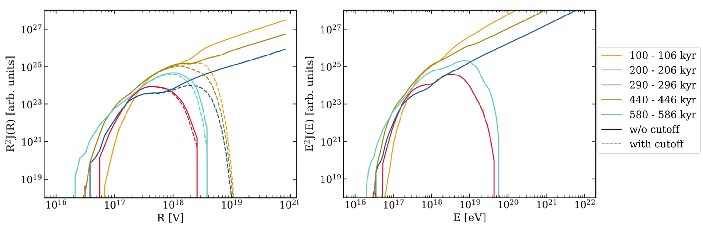<br />
图注：Left: Proton flux, $R^2 J(R)$, as a function of rigidity $R$ at the observer sphere, shown for five $6\,\mathrm{kyr}$ sampling windows following injection. The horizontal axis shows particle rigidity $R$ in V on a logarithmic scale. The solid lines reflect the observed spectra following an injection with a power-law distribution of $\propto R^{-1}$, while the dashed lines apply a cutoff of $2.5\,\mathrm{EV}$ at the source (see text for details). Right: The same spectrum as a function of energy, assuming a mass composition as detailed in the text.<br />
对应解读：建议重点查看的图表第3项“瞬变源时间切片能谱”和第4项“成分随时间或能量变化的图”；关键图表逐图导读图3、图4；模型拟合段落中关于源端Rmax截断与磁延迟截断退化的讨论。<br />
入选理由：该图给出五个6 kyr观测窗口的地球端谱，并比较无源端截止与源端2.5 EV截止的情形；右图还把刚度谱转换到包含质量组成假设的能量谱。它非常适合展示磁延迟造成的谱形变化如何与源端最大刚度、混合成分在观测能量轴上发生退化。<br />
来源与置信度：\(arxiv_source\)；high；\(arxiv_source\) / \(temp_effects_GMF_on_UHECR_Vasickova_Morejon_Kampert_2026.tex\):figure[6]</p>
<p><strong>Fig07</strong><br />
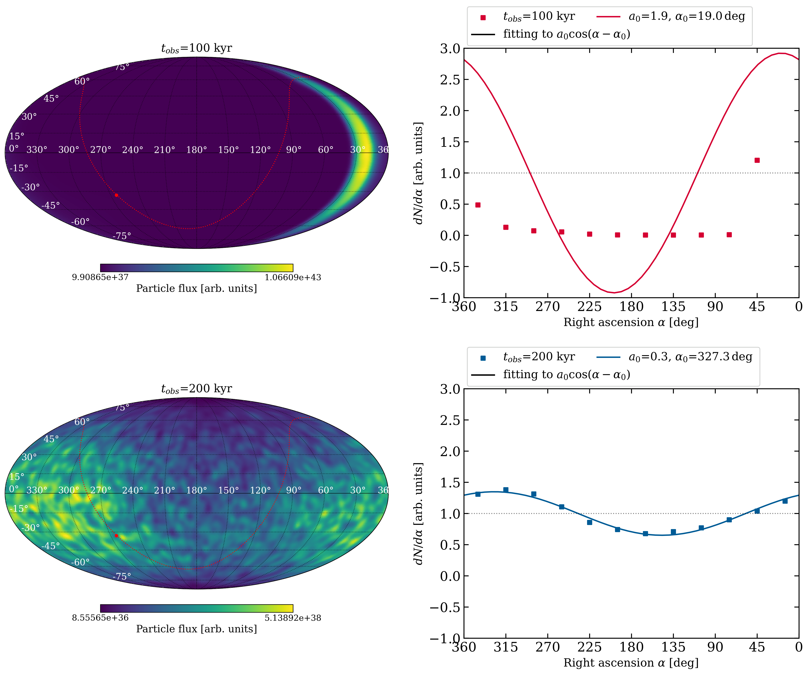<br />
图注：Left: Healpy Mollweide projection of the all‐sky arrival‐direction distribution of simulated cosmic‐ray protons at the observer sphere. The data cover the first observation window at 100 kyr and are shown in equatorial coordinates after integrating over all rigidities, assuming an injection spectrum into the Galaxy of $dN/dR/\propto R^{-1}$. The galactic plane is indicated by the red dashed line. Right: Corresponding right‐ascension profile obtained by summing the same sky map in 12 equal RA bins and normalizing to a unit mean. The points show the simulated counts per bin. The solid curve is a cosine fit with an amplitude $a_{0}=1.7$ and a phase of $\alpha_{0}=109.6^\circ$.<br />
对应解读：建议重点查看的图表第6项“偶极或各向异性演化图”；关键图表逐图导读图6中关于约100 kyr时标上偶极状结构、偶极幅度和相位的说明。<br />
入选理由：图中包含100 kyr观测窗口的全天到达方向Mollweide投影和赤经剖面，并给出余弦拟合的幅度与相位，是候选图中最直接支持“大尺度偶极状各向异性随时间窗出现”结论的图。它能帮助读者检查这类偶极信号是否只是视觉热点，还是在赤经分布上有定量拟合。<br />
来源与置信度：\(arxiv_source\)；high；\(arxiv_source\) / \(temp_effects_GMF_on_UHECR_Vasickova_Morejon_Kampert_2026.tex\):figure[7]</p>
<p><strong>Fig10</strong><br />
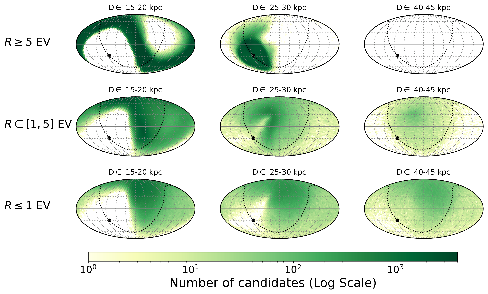<br />
图注：Distributions of the initial directions of protons recorded at the observer sphere after propagation through the Galaxy. The skymaps grouped in three ranges of rigidity and propagation distance in the Galaxy.<br />
对应解读：建议重点查看的图表第5项“到达方向相关性图”；关键图表逐图导读图5中关于长延迟粒子是否失去源方向记忆的讨论。<br />
入选理由：该图按刚度和银河系内传播距离分组展示到达地球粒子的初始方向分布，直接对应“延迟越长、方向相关性越差”的诊断需求。相比Fig02只看地球端观测方向与传播距离，Fig10更贴近源端/入射方向信息是否被银河系磁场抹除这一物理问题。<br />
来源与置信度：\(arxiv_source\)；high；\(arxiv_source\) / \(temp_effects_GMF_on_UHECR_Vasickova_Morejon_Kampert_2026.tex\):figure[10]</p>
<p><strong>Fig08</strong><br />
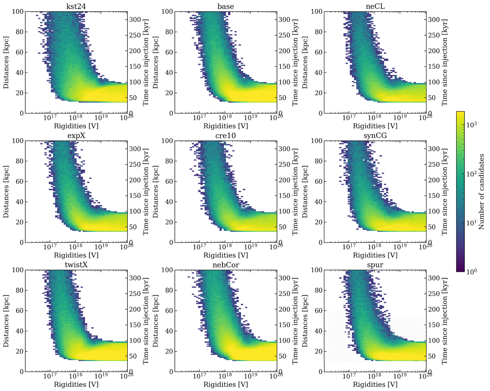<br />
图注：As in Fig.\,\(\ref{fig:rig_vs_dist},\) however, using other models of the GMF, corresponding to figure headers. Each 2D histogram comprises of $10^{5}-10^{6}$ particles.<br />
对应解读：建议重点查看的图表第7项“稳健性或模型比较表”；关键图表逐图导读图7中关于不同银河系磁场模型下延迟中位数、谱截断位置和方向去相关是否稳定的说明。<br />
入选理由：这张图把Fig01式的刚度—传播距离统计推广到其他银河系磁场模型，是判断论文结论是否只依赖单一GMF模型的关键稳健性材料。虽然它不是主结论图，但对日报中强调的系统误差和模型依赖性非常重要。<br />
来源与置信度：\(arxiv_source\)；high；\(arxiv_source\) / \(temp_effects_GMF_on_UHECR_Vasickova_Morejon_Kampert_2026.tex\):figure[8]</p>
<h4 id="_21">强相关工作</h4>
<p>这篇工作与超高能宇宙线传播和源模型中的几个传统方向相连。第一类是能谱 suppression 的解释，包括 GZK 能量损失、源最大刚度和混合成分传播模型。检索关键词可用 “UHECR spectrum suppression maximum rigidity GZK mixed composition”。第二类是银河系磁场对到达方向的影响，传统关键词是 “UHECR Galactic magnetic field deflection lensing backtracking”。本文的新意是把时间延迟与瞬变源观测结合，因此还应检索 “UHECR transient sources magnetic time delay CRPropa”。</p>
<p>相近或存在张力的工作包括连续源稳态拟合、Auger 能谱和 \\(X_{\\max}\\) 联合解释、以及把最高能截断主要归因于源端 \\(R_{\\max}\\) 的模型。如果这些模型没有显式包含银河系磁场时间响应，它们给出的源最大刚度约束可能偏紧。基础理论方面，应回到带电粒子在磁场中的传播、扩散近似、小角散射时间延迟和 Hillas 条件。建议读者在 NASA ADS 或 arXiv 检索 “CRPropa 3”, “Jansson Farrar Galactic magnetic field”, “Pierre Auger combined fit spectrum composition”, “UHECR transient burst time delay”。</p>
<p><strong>相似工作</strong>：<br />
- https://arxiv.org/abs/1603.07142<br />
- https://arxiv.org/abs/1411.6111<br />
- https://arxiv.org/abs/1808.03579</p>
<p><strong>基础理论 / 方法工作</strong>：<br />
- https://arxiv.org/abs/1204.3662<br />
- https://arxiv.org/abs/astro-ph/0607109<br />
- https://doi.org/10.1103/PhysRevLett.16.748<br />
- https://doi.org/10.1134/S0021364000010088</p>
<p><strong>相反观点 / 张力线索</strong>：<br />
- https://arxiv.org/abs/1612.07155<br />
- https://arxiv.org/abs/1708.06592<br />
- https://arxiv.org/abs/1909.09073</p>
</details>
<h3 id="3-astro_math_1114-astro_math_1115-correlation-in-time-resolved-grb-spectra-a-bottom-up-approach-with-optically-thin-inverse-compton-scattering-model">3. $E_{\rm peak}$-$α$ Correlation in Time Resolved GRB Spectra: A Bottom-Up Approach with Optically Thin Inverse Compton Scattering Model</h3>
<ul>
<li>来源：arXiv / astro-ph.HE</li>
<li>链接：https://arxiv.org/abs/2606.04894v1</li>
<li>作者：Pragyan Pratim Bordoloi, Ayush Shivkumar, Shabnam Iyyani</li>
<li>评分：novelty 7/10，importance 7/10，relevance 10/10，final 9.05/10</li>
<li>推荐理由：针对GRB prompt谱的E_peak-alpha演化提出光薄逆康普顿模型诊断，可区分同步辐射与ICS；GRB辐射机制主题高度相关。</li>
</ul>
<p><strong>中文题目</strong>：时间分辨伽马暴谱中的 \(E_{\rm peak}\)–\(\alpha\) 相关：光学薄逆康普顿模型的自下而上检验</p>
<p><strong>做了什么</strong>：这篇文章从辐射机制出发，而不是先拟合观测样本再反推物理，计算标准火球喷流中光学薄逆康普顿散射可产生的时间分辨伽马暴瞬时谱，并用与观测相同的 Band 函数重新拟合这些模拟谱。作者重点考察单个脉冲内常见的两类谱演化：硬到软演化和强度跟踪演化。主要结论是，光学薄逆康普顿散射自然给出正的 \(E_{\rm peak}\)–\(\alpha\) 相关，并且 \(\alpha\) 可从非常硬、接近 Planck 型的 \(>+0.5\) 平滑演化到比同步辐射慢冷却极限还软的 \(<-0.67\)。这说明若在单脉冲中看到这种连续轨迹，不一定要解释为同步辐射、热成分和康普顿成分之间的机制切换；它本身可能就是光学薄逆康普顿的诊断特征。</p>
<p><strong>为什么重要</strong>：伽马暴 prompt emission 的核心难题是：经验 Band 谱拟合很好用，但 \(E_{\rm peak}\) 和 \(\alpha\) 到底对应什么辐射机制并不唯一。同步辐射长期是默认解释之一，但大量时间分辨谱出现过硬的 \(\alpha\)，挑战标准同步辐射极限。本文的重要性在于把一个可观测的二维演化轨迹——\(E_{\rm peak}\)–\(\alpha\) 平面上的方向、斜率和范围——直接连接到光学薄逆康普顿散射，而不是只比较某一时刻的谱指数。</p>
<p><strong>理论 / 观测 / 仪器方法价值</strong>：对理论而言，文章给出逆康普顿模型在单脉冲时间演化中的可检验预言；对观测而言，它提示不要只看时间积分谱，也不要只用 \(\alpha\) 是否越过同步辐射极限来判别机制，而应检查时间分辨谱在 \(E_{\rm peak}\)–\(\alpha\) 平面中的连续轨迹。对方法而言，作者用 Bayesian block 和等流量分箱两种策略，并用 Band 函数统一拟合模拟谱，尽量让理论输出与 Fermi 等观测分析流程可比。</p>
<p><strong>为什么应该关注</strong>：如果你研究伽马暴 prompt emission，这篇文章值得关注，因为它把一个常被当作经验现象的 \(E_{\rm peak}\)–\(\alpha\) 相关变成了辐射机制判据。若未来大样本时间分辨谱普遍显示类似正相关且伴随过硬 \(\alpha\)，同步辐射主导模型会面临更强压力；反过来，如果观测轨迹不符合该模型，也能约束种子光子场、电子分布、喷流几何和散射光学深度。</p>
<details class="paper-detail">
<summary>展开详细解读：文章讲解、背景、理论、重点章节、图表与相关工作</summary>
<h4 id="_22">文章详细讲解</h4>
<p>科学问题：伽马暴 prompt emission 的时间分辨谱常用 Band 函数描述，其中峰值能量 \(E_{\rm peak}\) 和低能谱指数 \(\alpha\) 随时间演化。观测上，一个脉冲内常出现硬到软演化，即 \(E_{\rm peak}\) 随时间单调下降；也会出现强度跟踪，即 \(E_{\rm peak}\) 随光变曲线亮度升降。问题是，这些经验演化是否能从单一辐射机制自然产生，还是必须引入热成分、同步辐射、逆康普顿散射之间的切换。本文选择检验光学薄逆康普顿散射，特别关注它是否能解释 \(\alpha\) 从很硬到较软的平滑变化。</p>
<p>作者怎么做：文章采用自下而上的建模策略，先在标准火球喷流框架中生成光学薄逆康普顿散射的瞬时谱，再把这些理论谱当成观测数据，用 Band 函数进行一致拟合。这一点很关键，因为真实观测中的 \(E_{\rm peak}\) 和 \(\alpha\) 不是直接的物理参数，而是经验谱形的拟合结果。作者还比较 Bayesian block 分箱和等流量分箱，以检查时间分辨分析策略是否会人为制造或抹平 \(E_{\rm peak}\)–\(\alpha\) 相关。</p>
<p>关键结果：模拟得到的光学薄逆康普顿谱在 \(E_{\rm peak}\)–\(\alpha\) 平面呈正相关轨迹。随着脉冲演化，\(\alpha\) 可从硬的 Planck 类数值，即 \(>+0.5\)，逐渐软化到 \(<-0.67\)。后者接近或越过通常用于讨论同步辐射慢冷却低能极限的范围，而前者则明显比标准光学薄同步辐射允许的低能谱更硬。因此，单个脉冲内跨越宽范围的 \(\alpha\) 演化不必被立即解释为辐射机制突变；在本文模型中，它可以是散射谱形、种子光子分布和电子能量演化共同造成的连续结果。</p>
<p>局限和下一步：这项工作强调的是诊断轨迹而非对具体伽马暴样本的最终判决。模型依赖火球喷流、光学薄条件、种子光子场和电子分布的设定；若真实喷流存在显著磁化、角向结构、多区辐射、对产生吸收或高纬度辐射，轨迹可能改变。下一步需要把该诊断应用到 Fermi/GBM、GECAM、SVOM 等高信噪比单脉冲样本，联合偏振、光变时滞、高能 \(\rm GeV\) 成分和热成分约束，检验光学薄逆康普顿是否只是可行解释，还是统计上优于同步辐射或混合模型。</p>
<h4 id="_23">背景知识</h4>
<p>伽马暴 prompt emission 是高能天体物理中最亮、也最难解释的瞬变辐射之一。观测上，\(\rm keV\)–\(\rm MeV\) 波段的时间积分谱和时间分辨谱常可由 Band 函数拟合，它由低能谱指数 \(\alpha\)、高能谱指数 \(\beta\)、特征能量或峰值能量 \(E_{\rm peak}\) 描述。Band 函数本身是经验模型，不直接告诉我们辐射来自同步辐射、热光球、逆康普顿还是它们的组合。</p>
<p>历史上，光学薄同步辐射被广泛用于解释非热 Band 谱，因为相对论电子在磁场中辐射自然产生宽谱。但同步辐射有著名的低能谱指数限制：简单慢冷却情形的光子谱指数约为 \(-2/3\)，快冷却情形更软。许多时间分辨谱却显示 \(\alpha\) 明显硬于 \(-2/3\)，甚至接近或大于零，这就是所谓的同步辐射低能谱指数问题。虽然更复杂的同步辐射模型可通过边冷却边加速、衰减磁场、小俯仰角或多区叠加缓解问题，但并非所有谱演化都能自然解释。</p>
<p>逆康普顿散射是另一条重要路线。低能种子光子被相对论电子散射到 \(\gamma\) 射线能段，若系统光学薄，光子通常经历有限次散射并逃逸。此类模型可能产生比标准同步辐射更硬的低能谱，同时也可通过电子能量、种子光子温度和散射几何的演化造成 \(E_{\rm peak}\) 变化。本文关注的不是单个时刻是否能拟合，而是整段脉冲的谱参数轨迹是否有特征性。</p>
<p>为什么现在值得重新看？一方面，Fermi/GBM 等仪器积累了大量高时间分辨谱，允许在单脉冲内追踪 \(E_{\rm peak}\) 和 \(\alpha\) 的协同演化；另一方面，理论上对 prompt emission 的讨论越来越重视“拟合同一个数据流程下的模型预言”。常见误区是把 Band 拟合参数直接等同于物理参数，或把 \(\alpha\) 某一时刻硬于 \(-2/3\) 简单归因为热成分。本文提醒读者：真正有区分力的可能是参数随时间的连续路径，而非某个孤立谱指数。</p>
<h4 id="_24">基础理论 / 方法脉络</h4>
<p>基本物理图像是：喷流中存在低能种子光子和一群相对论电子。若电子的洛伦兹因子为 \(\gamma_{\rm e}\)，种子光子能量为 \(\epsilon\)，在 Thomson 极限下单次逆康普顿散射后光子能量大致提升到 \(\gamma_{\rm e}^{2}\epsilon\) 的量级。若散射区域对 Thomson 散射光学薄，即 \(\tau_{\rm T}<1\)，多数光子不会反复热化，逃逸谱保留非热形状。</p>
<p>伽马暴观测谱通常在 \(\nu F_{\nu}\) 中有峰，峰值对应 \(E_{\rm peak}\)。Band 函数中的 \(\alpha\) 描述低于峰值能量的光子数谱斜率。对于同步辐射，\(\alpha\) 有一些经典极限；对于逆康普顿，低能斜率取决于种子光子场、电子分布和散射核卷积，因此可出现很硬的谱。本文正是利用这一差异，把 \(\alpha\) 的时间演化作为机制判据。</p>
<p>模型假设层面，作者把逆康普顿过程放在标准火球喷流框架内，并构造可以产生硬到软或强度跟踪的脉冲演化。这里的关键量包括电子能量分布、种子光子温度或谱形、散射区域半径、bulk Lorentz 因子、光学深度以及观测时间分箱。由于文章最后仍用 Band 函数读出 \(E_{\rm peak}\) 和 \(\alpha\)，模型预测与观测 catalog 参数具有直接可比性。</p>
<p>观测和统计逻辑也很重要。时间分辨谱分箱会影响拟合参数：过宽分箱会把快速演化混合成较软或较宽的谱，过窄分箱则信噪比不足、参数后验变宽。Bayesian block 分箱按光变变化自适应划分，等流量分箱则保证每段统计量相近。若两种分箱都给出类似 \(E_{\rm peak}\)–\(\alpha\) 正相关，说明趋势不太可能只是分箱伪影。</p>
<p>常见退化包括 \(E_{\rm peak}\) 与 \(\alpha\) 在 Band 拟合中的协方差、种子光子温度与电子洛伦兹因子的乘积退化、以及光球热成分和硬低能逆康普顿谱之间的混淆。系统误差还包括探测器响应矩阵、背景扣除、能段覆盖不足，以及多脉冲叠加。本文的价值在于提出一条可观测轨迹，但实际应用时必须把这些退化和选择效应纳入误差预算。</p>
<h4 id="_25">公式与推导</h4>
<p>第一步从散射能量增益出发。在 Thomson 极限、各向同性近似下，种子光子能量 \(\epsilon\) 被洛伦兹因子 \(\gamma_{\rm e}\) 的电子散射后，平均能量可写为</p>
<div class="math-display">\[E_{\rm IC}\simeq \frac{4}{3}\gamma_{\rm e}^{2}\epsilon .\]</div>
<p>这里 \(E_{\rm IC}\) 是散射后光子能量，适用条件是电子静止系中入射光子能量远小于 \(m_{\rm e}c^{2}\)。它说明 \(E_{\rm peak}\) 的演化可来自 \(\gamma_{\rm e}\) 或 \(\epsilon\) 的时间变化。</p>
<p>第二步加入相对论喷流的 Doppler 放大。若共动系散射峰能量为 \(E'_{\rm IC}\)，观测者看到</p>
<div class="math-display">\[E_{\rm peak}\simeq \frac{\delta}{1+z}E'_{\rm IC},\qquad \delta=[\Gamma(1-\beta_{\Gamma}\cos\theta)]^{-1} .\]</div>
<p>其中 \(z\) 是红移，\(\delta\) 是 Doppler 因子，\(\Gamma\) 是喷流 bulk Lorentz 因子，\(\beta_{\Gamma}c\) 是 bulk 速度，\(\theta\) 是视线夹角。该式连接了微观散射和观测峰值。</p>
<p>第三步给出光学薄条件。散射光学深度为</p>
<div class="math-display">\[\tau_{\rm T}=n'_{\rm e}\sigma_{\rm T}\Delta R' < 1 ,\]</div>
<p>其中 \(n'_{\rm e}\) 是共动电子数密度，\(\sigma_{\rm T}\) 是 Thomson 截面，\(\Delta R'\) 是共动壳层厚度。\(\tau_{\rm T}<1\) 表示光子主要单次或少数次散射后逃逸，不形成完全热化的 Wien 谱。</p>
<p>第四步写出光学薄逆康普顿发射率的卷积形式：</p>
<div class="math-display">\[j'_{E'}=cE'\int d\gamma_{\rm e}\,n'_{\rm e}(\gamma_{\rm e})\int d\epsilon'\,n'_{\gamma}(\epsilon')\,\frac{d\sigma_{\rm IC}}{dE'}(\gamma_{\rm e},\epsilon',E') .\]</div>
<p>这里 \(j'_{E'}\) 是共动谱发射率，\(n'_{\gamma}\) 是种子光子数密度谱，\(d\sigma_{\rm IC}/dE'\) 是微分散射截面。这个卷积决定低能谱斜率 \(\alpha\) 如何随电子和种子光子场变化。</p>
<p>第五步把理论谱转成观测能量通量。忽略宇宙学 \(K\) 修正的细节时，可写为</p>
<div class="math-display">\[F_{E}=\frac{1+z}{4\pi d_{\rm L}^{2}}\delta^{3}L'_{E'} ,\qquad E'=\frac{1+z}{\delta}E .\]</div>
<p>其中 \(F_{E}\) 是观测能量谱通量，\(d_{\rm L}\) 是光度距离，\(L'_{E'}\) 是共动谱光度。探测器记录的是该谱再经过响应矩阵后的计数。</p>
<p>第六步是观测上使用的 Band 光子谱。常用形式为</p>
<div class="math-display">\[N(E)=A\begin{cases}\left(\frac{E}{E_{0}}\right)^{\alpha}\exp\left[-\frac{E(2+\alpha)}{E_{\rm peak}}\right], & E<E_{\rm b},\\ C\left(\frac{E}{E_{0}}\right)^{\beta}, & E\ge E_{\rm b},\end{cases}\]</div>
<p>其中 \(N(E)\) 是光子数谱，\(A\) 是归一化，\(E_{0}\) 是枢轴能量，\(\beta\) 是高能光子指数，\(C\) 保证连续性。该经验式是本文从模拟谱中读取 \(E_{\rm peak}\) 和 \(\alpha\) 的桥梁。</p>
<p>第七步给出 Band 函数断裂能量关系：</p>
<div class="math-display">\[E_{\rm b}=\frac{(\alpha-\beta)E_{\rm peak}}{2+\alpha} .\]</div>
<p>该式要求 \(\beta<\alpha\) 且 \(2+\alpha>0\)，说明 \(E_{\rm peak}\)、\(\alpha\) 和 \(\beta\) 在拟合中并非完全独立，低能斜率误差会传播到断裂位置。</p>
<p>第八步连接到计数似然。探测器第 \(i\) 个能道的模型计数可写为</p>
<div class="math-display">\[\mu_{i}=t_{\rm exp}\int dE\,R_{i}(E)N(E)+b_{i} ,\]</div>
<p>其中 \(t_{\rm exp}\) 是曝光时间，\(R_{i}(E)\) 是响应矩阵投影，\(b_{i}\) 是背景计数。若计数服从 Poisson 分布，拟合统计量可由</p>
<div class="math-display">\[\(\ln\) \(\mathcal{L}=\sum_{i}\left\)[n_{i}\ln\mu_{i}-\mu_{i}-\ln(n_{i}!)\(\right\)]\]</div>
<p>给出，其中 \(n_{i}\) 是观测计数。本文的核心诊断就是在这种拟合流程下得到的 \(E_{\rm peak}\)–\(\alpha\) 轨迹，而不是未经响应折叠的理论谱斜率。</p>
<h4 id="_26">模型拟合 / 应用方法</h4>
<p>这类工作拟合的直接对象通常不是电子分布参数，而是经过探测器响应折叠后的瞬时谱计数。本文为了与观测分析保持一致，把光学薄逆康普顿产生的模拟谱再用 Band 函数拟合，得到每个时间分箱的 \(E_{\rm peak}\)、\(\alpha\)、\(\beta\) 和归一化。这样做的优点是可直接比较 Fermi/GBM 时间分辨谱 catalog；缺点是物理模型的信息被压缩到经验参数中，可能隐藏多解性。</p>
<p>分箱是拟合结果的第一层系统误差。Bayesian block 会按光变曲线显著变化自适应切分，适合保留脉冲上升和下降阶段的快速演化；等流量分箱让每段有相近统计量，适合减少参数误差差异。若 \(E_{\rm peak}\)–\(\alpha\) 正相关只在某一种分箱下出现，就要怀疑分箱导致的谱混合；若两种分箱均稳定出现，物理解释更可信。</p>
<p>参数退化主要有三类。第一，Band 拟合中 \(E_{\rm peak}\) 与 \(\alpha\) 的协方差会在能段覆盖不足时变强，尤其当峰值接近探测器低能或高能边界。第二，在逆康普顿物理参数中，观测峰值近似依赖 \(\gamma_{\rm e}^{2}\epsilon\delta/(1+z)\)，因此电子能量、种子光子能量和 Doppler 因子之间存在乘积退化。第三，硬低能谱可由光球热成分、窄种子光子场的逆康普顿、或多温黑体叠加产生，需要靠高能尾、时间延迟和偏振来区分。</p>
<p>残差诊断应重点看 Band 模型是否系统性低估低能端或高能端。如果逆康普顿模拟谱本身有曲率或多个散射阶次，单一 Band 函数可能在峰值附近产生结构性残差。对真实数据而言，还要检查背景模型、响应矩阵版本、能道选择和交叉归一化是否改变 \(\alpha\) 的硬端分布。一个有说服力的应用不应只报告相关系数，而应展示每个时间 bin 的后验轮廓和轨迹方向。</p>
<p>模型可能失败的场景也很清楚：若高信噪比单脉冲显示 \(E_{\rm peak}\) 下降而 \(\alpha\) 持续硬化，或出现明显反相关；若 \(\alpha\) 始终符合标准同步辐射且伴随强偏振；若 \(\rm GeV\) 高能成分的延迟和光变要求外部激波或另一区域辐射，那么单区光学薄逆康普顿解释就不充分。实际应用中，本文的 \(E_{\rm peak}\)–\(\alpha\) 轨迹最好作为模型筛选器，与全谱、光变、偏振和多波段信息联合使用。</p>
<h4 id="_27">重点章节 / 结果段落怎么读</h4>
<p>一、引言和动机部分应重点看作者如何定义 \(E_{\rm peak}\)–\(\alpha\) 问题。这里不是一般性讨论 Band 函数，而是指出时间分辨谱中 \(\alpha\) 的硬值和连续演化对同步辐射解释构成压力，并说明为什么逆康普顿值得作为单机制方案测试。</p>
<p>二、模型设定部分应关注标准火球喷流中的光学薄逆康普顿假设。读者需要看清种子光子场、电子分布、喷流动力学和脉冲时间演化是如何参数化的，特别是哪些参数被允许随时间变化，因为这些选择决定硬到软或强度跟踪能否自然出现。</p>
<p>三、模拟谱生成与分箱方法部分是方法核心。建议检查作者怎样构造时间分辨谱，怎样实施 Bayesian block 和等流量分箱，以及是否把理论谱放进与观测相同的 Band 拟合框架。该部分决定结论是否能直接迁移到真实 Fermi/GBM 分析。</p>
<p>四、结果部分应重点读 \(E_{\rm peak}\)–\(\alpha\) 平面轨迹。关键不是单个最佳拟合点，而是轨迹是否连续、是否正相关、是否在不同分箱下保持稳定，以及 \(\alpha\) 是否确实从 \(>+0.5\) 平滑软化到 \(<-0.67\)。</p>
<p>五、讨论和局限部分应看作者如何处理与同步辐射、热光球和混合模型的关系。特别要关注他们是否声称唯一性；更稳妥的理解是：光学薄逆康普顿提供了一个可检验的诊断特征，但需要真实样本统计和多信使或多波段信息进一步区分。</p>
<h4 id="_28">建议重点查看的图表</h4>
<ol>
<li>
<p>模拟光变曲线和时间分箱图：检查 Bayesian block 与等流量分箱是否覆盖相同的脉冲阶段，是否在上升段和下降段有足够时间分辨率。</p>
</li>
<li>
<p>不同时间 bin 的模拟谱及 Band 拟合：看 \(\nu F_{\nu}\) 峰的位置如何移动，低能端斜率如何变化，以及 Band 残差是否有系统结构。</p>
</li>
<li>
<p>\(E_{\rm peak}\) 随时间或通量的演化图：区分硬到软与强度跟踪两类行为，检查峰值能量是否随光变单调下降或跟随强度。</p>
</li>
<li>
<p>\(\alpha\) 随时间的演化图：重点看 \(\alpha\) 是否连续穿过同步辐射常用极限 \(-2/3\)，以及是否出现不连续跳变。</p>
</li>
<li>
<p>\(E_{\rm peak}\)–\(\alpha\) 相关图：这是最核心图。应看点的时间顺序、误差棒、相关方向、不同分箱方法是否重合，以及轨迹是否可与观测样本区分。</p>
</li>
<li>
<p>参数或稳健性检验图：若有不同电子分布、种子光子温度、光学深度或喷流参数的对比，应检查正相关是否普遍，还是只在窄参数范围内成立。</p>
</li>
<li>
<p>拟合残差或后验轮廓图：看 \(E_{\rm peak}\) 与 \(\alpha\) 的协方差是否可能人为制造正相关，尤其是在峰值接近探测器能段边界时。</p>
</li>
</ol>
<h4 id="_29">关键图表逐图导读</h4>
<p>图 1：通常应是模型脉冲光变或时间结构示意。横轴应为观测时间或归一化时间，纵轴为通量、计数率或模型光度。读图时要区分硬到软情形与强度跟踪情形的输入演化，并检查时间分箱边界是否在光变快速变化处足够密。陷阱是把分箱后的平均趋势误认为瞬时物理演化。</p>
<p>图 2：应关注时间分辨谱序列。横轴通常为能量，纵轴为 \(E^{2}N(E)\)、\(\nu F_{\nu}\) 或计数谱；数据点代表模拟或折叠后的谱，曲线代表 Band 拟合或逆康普顿理论谱。关键是看低能斜率从硬到软的变化是否在谱形中真实可见，而不是只来自拟合参数协方差。</p>
<p>图 3：若展示 \(E_{\rm peak}\) 和 \(\alpha\) 随时间变化，横轴为时间，纵轴分别为峰值能量和低能谱指数。应检查 \(E_{\rm peak}\) 的下降或跟踪是否与 \(\alpha\) 软化同步。读图陷阱是忽略误差棒重叠；如果相邻 bin 的置信区间很大，所谓连续演化可能并不显著。</p>
<p>图 4：核心应为 \(E_{\rm peak}\)–\(\alpha\) 平面。横轴可能为 \(\alpha\)，纵轴为 \(E_{\rm peak}\)，或反之；点按时间上色，模型线连接时间顺序。主要结论是光学薄逆康普顿给出正相关，并覆盖从 Planck 类硬谱到较软低能谱的范围。读图时要看轨迹方向，而不只是散点相关系数。</p>
<p>图 5：若有 Bayesian block 与等流量分箱对比，应看两套点是否沿同一轨迹排列。若等流量分箱误差较均匀而 Bayesian block 更能显示快速变化，两者互补。陷阱是不同分箱的点数不同会影响相关显著性，不能只比较视觉散布。</p>
<p>图 6：若有参数扫描或稳健性图，应看改变种子光子温度、电子能量、光学深度或喷流 Lorentz 因子后，轨迹斜率和 \(\alpha\) 范围如何变化。若正相关只在少数调参案例中出现，诊断力会下降；若宽参数范围内稳定存在，则更适合作为观测判据。</p>
<h4 id="_30">论文原图 / 可嵌入图片</h4>
<p><strong>Fig07</strong><br />
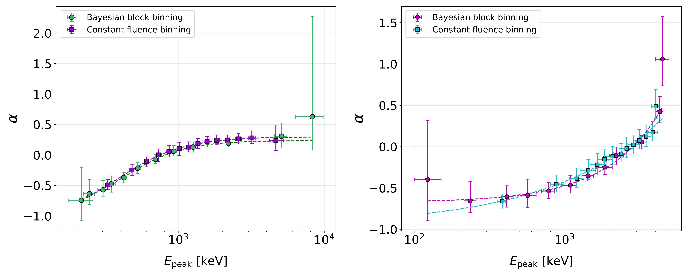<br />
图注：(a) $E_{\rm peak}$--$\alpha$ correlation for the hard-to-soft $E_{\rm peak}$ evolution case. Green circles and violet squares represent the results obtained using Bayesian block and constant-fluence binning, respectively. The corresponding dashed curves show the best-fit Hill functions. (b) Same as panel (a), but for the intensity-tracking $E_{\rm peak}$ evolution case. Magenta pentagons and cyan squares denote the Bayesian block and constant-fluence binning results, respectively, with the dashed curves showing the corresponding best-fit Hill functions.<br />
对应解读：“建议重点查看的图表”第5项和“关键图表逐图导读”图4/图5：核心的 \(E_{\rm peak}\)–\(\alpha\) 相关图，并比较 Bayesian block 与等流量分箱。<br />
入选理由：这是全文最核心的诊断图，直接展示光学薄逆康普顿模型在硬到软和强度跟踪两种情形下均给出 \(E_{\rm peak}\)–\(\alpha\) 正相关；同时包含两种时间分箱方法的点和 Hill 函数拟合曲线，正好对应日报强调的轨迹方向、分箱稳健性和相关性判断。<br />
来源与置信度：\(arxiv_source\)；high；\(arxiv_source\) / Main.tex:figure[7]</p>
<p><strong>Fig02</strong><br />
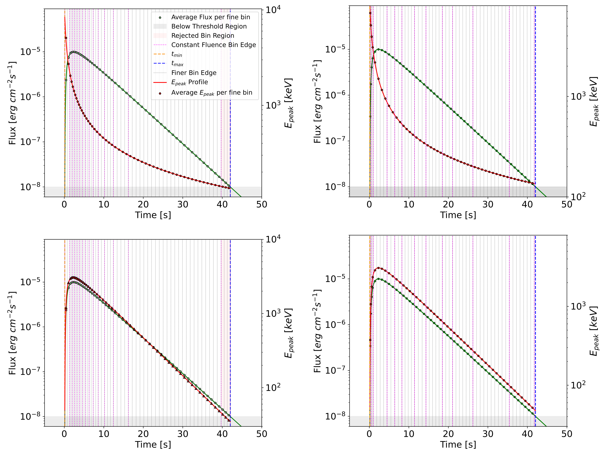<br />
图注：Illustration of the temporal binning scheme and the corresponding $E_{\rm peak}$ evolution used in this study. Panels (a) and (b) show the hard-to-soft $E_{\rm peak}$ evolution case, while panels (c) and (d) correspond to the intensity-tracking $E_{\rm peak}$ evolution. In each panel, the green solid curve represents the underlying Norris pulse used to model the flux evolution and the red solid curve represents $E_{\rm peak}$ evolution. The vertical magenta dashed lines indicate the edges of the main time-resolved bins obtained using the two binning methods (constant fluence: (a), (c) and Bayesian blocks: (b), (d) ), whereas the thin grey vertical dotted lines mark the fine bins introduced within each main bin. The green points denote the average flux in each fine bin, and the red points indicate the corresponding average $E_{\rm peak}$ values. The red shaded regions represent time intervals where the flux falls below the adopted detector threshold and are excluded from the analysis.<br />
对应解读：“建议重点查看的图表”第1项和第3项，以及“关键图表逐图导读”图1/图3：模拟光变曲线、时间分箱和 \(E_{\rm peak}\) 演化。<br />
入选理由：该图同时给出 Norris 脉冲光变、硬到软与强度跟踪两类 \(E_{\rm peak}\) 输入演化、Bayesian block 与等流量分箱边界，以及低于探测阈值的剔除区间，是理解后续时间分辨谱拟合和相关图是否受分箱影响的关键背景图。<br />
来源与置信度：\(arxiv_source\)；high；\(arxiv_source\) / Main.tex:figure[2]</p>
<p><strong>Fig05</strong><br />
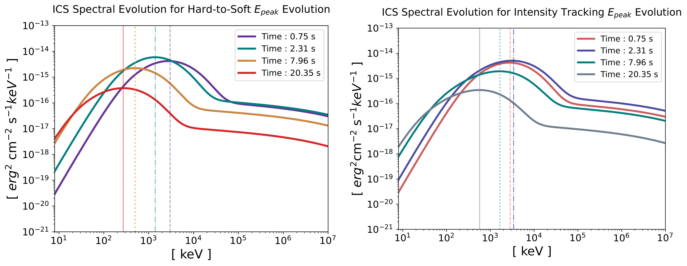<br />
图注：A representative simulated ICS spectra at different epochs of the GRB emission pulse, boosted to the observer frame. The solid curves show the spectra, while the same-colored vertical lines mark the corresponding $E_{\rm peak}$ values. In panel (a), representing the hard-to-soft evolution case, the dashed, dash-dotted, dotted, and solid vertical lines correspond to $E_{\rm peak} \sim 3000$ keV, 1400 keV, 500 keV, and 270 keV, respectively. In panel (b), representing the intensity-tracking case, the dashed, dash-dotted, dotted, and solid vertical lines correspond to $E_{\rm peak} \sim 3400$ keV, 2800 keV, 1700 keV, and 600 keV, respectively.<br />
对应解读：“建议重点查看的图表”第2项：不同时间 bin 的模拟 ICS 谱及 \(\nu F_\nu\) 峰移动；对应“关键图表逐图导读”图2。<br />
入选理由：该图直接展示不同时刻的观测框架 ICS 谱和对应 \(E_{\rm peak}\) 位置，能直观看到硬到软与强度跟踪两种情况下峰值能量如何迁移，是把物理谱形演化与 Band 拟合得到的 \(E_{\rm peak}\)、\(\alpha\) 变化联系起来的关键图。<br />
来源与置信度：\(arxiv_source\)；high；\(arxiv_source\) / Main.tex:figure[5]</p>
<p><strong>Fig06</strong><br />
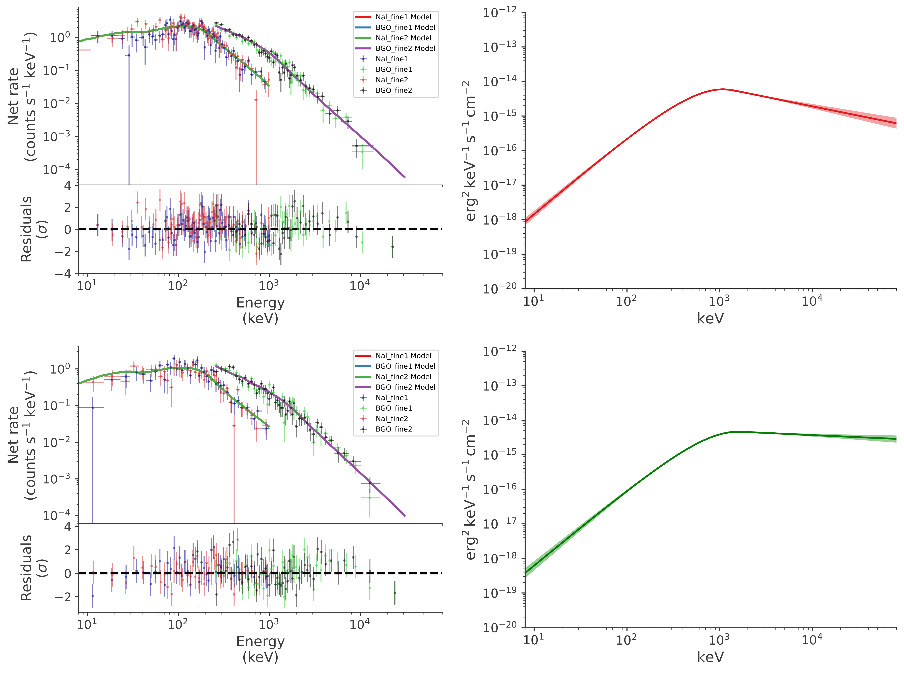<br />
图注：Counts-plus-residual plots (left panels) and corresponding $\nu F_{\nu}$ spectra (right panels) for the peak bin in the hard-to-soft and intensity-tracking spectral-evolution cases using constant-fluence binning.<br />
对应解读：“建议重点查看的图表”第2项和第7项，以及“模型拟合”中关于 Band 拟合残差诊断的段落：等流量分箱下的 counts-plus-residual 与 \(\nu F_\nu\) 谱。<br />
入选理由：该图给出 constant-fluence binning 的峰值时间 bin 计数谱、残差和对应 \(\nu F_\nu\) 谱，直接支撑日报中关于 Band 函数是否系统性偏离 ICS 模拟谱、残差是否有结构、以及分箱策略如何影响拟合参数的讨论。<br />
来源与置信度：\(arxiv_source\)；high；\(arxiv_source\) / Main.tex:figure[6]</p>
<p><strong>Fig11</strong><br />
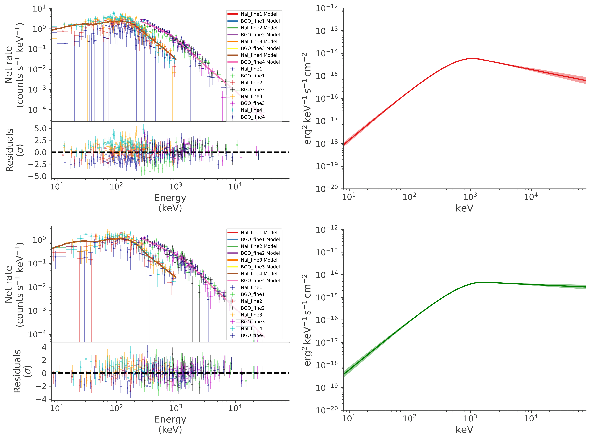<br />
图注：Counts-plus-residual plots (left panels) and corresponding $\nu F_{\nu}$ spectra (right panels) for the peak bin in the hard-to-soft and intensity-tracking spectral-evolution cases using Bayesian block binning.<br />
对应解读：“建议重点查看的图表”第2项、第7项和“模型拟合”中 Bayesian block 与等流量分箱对比的段落。<br />
入选理由：该图与 Fig06 互补，展示 Bayesian block binning 下的 counts-plus-residual 和 \(\nu F_\nu\) 谱，可用于检查核心 \(E_{\rm peak}\)–\(\alpha\) 轨迹是否不仅在等流量分箱下成立，也在自适应分箱下具有可接受的 Band 拟合质量。<br />
来源与置信度：\(arxiv_source\)；high；\(arxiv_source\) / Main.tex:figure[11]</p>
<p><strong>Fig08</strong><br />
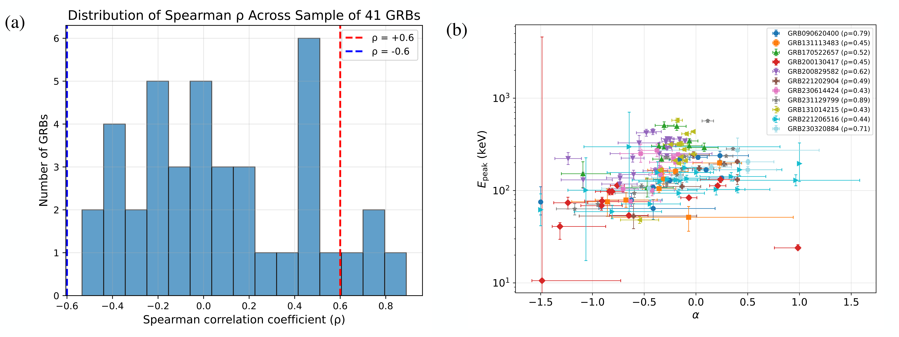<br />
图注：(a) The distribution of the Spearman correlation coefficients ($\rho$) for the $E_{\rm peak}$--$\alpha$ relation across a sample of 41 GRBs \(\citep{Bordoloi_etal_2026}\) is shown. The vertical red and blue dashed lines mark $\rho = +0.6$ and $\rho = -0.6$, respectively. (b) The corresponding $E_{\rm peak}$–$\alpha$ scatter plots for those GRBs exhibiting $\rho > +0.4$ indicating strong positive correlation are displayed.<br />
对应解读：“建议重点查看的图表”第5项中关于轨迹是否可与观测样本区分的部分，以及“详细解读”中把本文诊断应用到 GRB 样本的讨论。<br />
入选理由：该图提供观测 GRB 样本中 \(E_{\rm peak}\)–\(\alpha\) Spearman 相关系数分布和强正相关样本散点图，有助于把本文模拟得到的正相关轨迹与真实时间分辨谱 catalog 联系起来，增强日报关于该轨迹作为观测筛选器的解读。<br />
来源与置信度：\(arxiv_source\)；high；\(arxiv_source\) / Main.tex:figure[8]</p>
<h4 id="_31">强相关工作</h4>
<p>这篇工作与长期的伽马暴 prompt emission 机制争论直接相关。相似方向包括时间分辨 Band 谱统计、\(E_{\rm peak}\) 与通量或光度的 hardness-intensity correlation、以及 \(E_{\rm peak}\) 的 hard-to-soft 演化研究。建议检索关键词包括 “GRB time-resolved spectroscopy Band function alpha Epeak correlation”、“hard-to-soft evolution intensity tracking GRB pulses” 和 “Fermi GBM prompt emission spectral evolution”。</p>
<p>基础理论方面，它连接到同步辐射低能谱指数问题、光球辐射模型和逆康普顿 prompt emission 模型。相反或存在张力的观点主要来自改进同步辐射模型：例如衰减磁场中的快冷却同步辐射、持续加速、边缘可见喷流和多区叠加，它们也试图解释硬 \(\alpha\)。因此，本文提出的 \(E_{\rm peak}\)–\(\alpha\) 正相关不是“证明”逆康普顿唯一正确，而是给出一种可与同步辐射和混合模型正面对比的轨迹诊断。建议检索 “synchrotron line of death GRB”、“photospheric emission Band spectra GRB”、“inverse Compton prompt emission GRB”。</p>
<p><strong>相似工作</strong>：<br />
- https://arxiv.org/abs/2606.04894<br />
- https://ui.adsabs.harvard.edu/search/q=GRB%20time-resolved%20spectroscopy%20Epeak%20alpha%20correlation</p>
<p><strong>基础理论 / 方法工作</strong>：<br />
- https://ui.adsabs.harvard.edu/abs/1993ApJ...413..281B/abstract<br />
- https://ui.adsabs.harvard.edu/abs/1998ApJ...506L..23P/abstract<br />
- https://ui.adsabs.harvard.edu/abs/2000ApJ...534..248P/abstract</p>
<p><strong>相反观点 / 张力线索</strong>：<br />
- https://ui.adsabs.harvard.edu/search/q=GRB%20synchrotron%20line%20of%20death%20alpha<br />
- https://ui.adsabs.harvard.edu/search/q=GRB%20photospheric%20emission%20Band%20spectrum<br />
- https://ui.adsabs.harvard.edu/search/q=GRB%20prompt%20emission%20synchrotron%20marginally%20fast%20cooling</p>
</details>
<h3 id="4-earliest-simultaneous-multi-color-optical-observations-of-grb-230328b-from-41-seconds-to-the-host-galaxy-identification">4. Earliest simultaneous multi-color optical observations of GRB 230328B: from 41 seconds to the host-galaxy identification</h3>
<ul>
<li>来源：arXiv / astro-ph.HE</li>
<li>链接：https://arxiv.org/abs/2606.04585v1</li>
<li>作者：T. Komesh, A. Pozanenko, N. Pankov, A. Volnova, P. Minaev, R. Gill, D. Berdikhan, B. Grossan</li>
<li>评分：novelty 7/10，importance 7/10，relevance 10/10，final 9.05/10</li>
<li>推荐理由：GRB 230328B从41秒开始的多色光学及多波段余辉分析，包含早期峰、晚期再增亮和能量注入建模；GRB观测主题高度相关。</li>
</ul>
<p><strong>中文题目</strong>：GRB 230328B 的最早同步多色光学观测：从爆后 41 秒到宿主星系识别</p>
<p><strong>做了什么</strong>：这篇文章研究长时标伽马射线暴 GRB 230328B，核心亮点是爆后约 41 秒开始的同步多色光学观测，并把早期光学、Fermi/GBM 伽马射线、X 射线、射电余辉、宿主星系测光红移和晚期成像放在同一个物理框架里解释。作者认为该暴是典型长暴，宿主星系测光红移约为 \(z\simeq 1.5\)，各向同性等效能量约为 \(E_{\rm iso}\simeq 6.4\times 10^{52}\,{\rm erg}\)。余辉光变曲线并非简单幂律衰减，而是有早期 onset bump 和约 \(4000\,{\rm s}\) 的晚期无色再增亮；MCMC 拟合显示，带晚期能量注入的正向激波模型可以解释主要行为。宽波段 SED 拟合还给出显著视线消光，约 \(A_V\simeq 0.8\, {\rm mag}\)，宿主可能是年轻、强吸收的 S0 型星系，并可能处于相互作用系统中；晚期监测未发现伴随超新星信号。</p>
<p><strong>为什么重要</strong>：长暴早期余辉通常决定我们能否区分反向激波、正向激波 onset、能量注入、密度结构和喷流几何效应。GRB 230328B 的价值在于，光学数据从爆后几十秒开始且是多色同步观测，后续又有 X 射线、射电和宿主星系信息，可以把“早期峰值”和“晚期无色再增亮”同时纳入检验，而不是只拟合单一波段的经验折线。</p>
<p><strong>理论 / 观测 / 仪器方法价值</strong>：对理论而言，这篇工作提供了一个检验长暴余辉能量注入模型的具体案例，并约束电子谱指数、消光、环境和注入参数之间的退化。对观测而言，它展示了快速响应多色光学系统在判别早期余辉颜色演化、估计宿主消光、连接高能触发与宿主识别方面的价值。对方法而言，文章把 MCMC 光变曲线建模、宽波段 SED 消光拟合、经验能量相关检验和宿主形态分析结合起来，是一篇适合用来练习 GRB 多波段读图与建模的案例。</p>
<p><strong>为什么应该关注</strong>：如果你关心 GRB 余辉物理，这篇文章值得看，因为它不是又一个“检测到余辉”的简单报告，而是一个展示早期多色数据如何改变物理解释的样本。它提醒我们：长暴余辉中的再增亮不一定是单一机制，缺少颜色信息和宿主消光约束时，很容易把能量注入、密度起伏、反向激波或微物理参数演化混为一谈。</p>
<details class="paper-detail">
<summary>展开详细解读：文章讲解、背景、理论、重点章节、图表与相关工作</summary>
<h4 id="_32">文章详细讲解</h4>
<p>科学问题：GRB 230328B 是一个长时标伽马射线暴，Fermi/GBM 给出的持续时间约 \(22\,{\rm s}\)，从分类上看属于典型 Type II 或坍缩星相关长暴。问题不在于它是否“亮”，而在于它的余辉演化很复杂：爆后几十秒的光学数据已经能看到早期上升或峰值结构，随后在约 \(4000\,{\rm s}\) 出现明显的多波段、近似无色再增亮。这样的光变曲线挑战了最简单的单一区域、单次能量释放、单一外部介质正向激波模型。作者要回答的是：这些结构能否在标准外激波框架内通过晚期能量注入解释？还是必须引入反向激波、密度跳变、喷流结构或多个辐射区？</p>
<p>作者怎么做：文章首先用 Fermi/GBM 观测确定 prompt emission 的持续时间、能谱和能量学性质，再利用宿主星系的测光红移 \(z\simeq 1.5\) 估算各向同性等效能量 \(E_{\rm iso}\)。光学方面，最关键的是爆后约 \(41\,{\rm s}\) 开始的同步多色数据，它们可以约束早期余辉的颜色和峰值时间，而不仅是单滤光片光变。随后作者整合 X 射线、射电和晚期光学监测，构造跨波段光变曲线与 SED。对于余辉模型，他们采用 MCMC 探索参数空间，主要检验正向激波加晚期能量注入的解释；对于宿主和视线环境，他们用宽波段 SED 拟合估计消光，并比较银河系或大麦哲伦云尘埃曲线。</p>
<p>关键结果：在宿主测光红移约 \(z\simeq 1.5\) 的假设下，GRB 230328B 的 \(E_{\rm iso}\simeq 6.4\times 10^{52}\,{\rm erg}\)，落在长暴常见经验相关关系允许范围内，因此从 prompt energetics 看并不反常。余辉层面，早期 onset bump 可以自然联系到外激波减速时间，晚期 \(\sim 4000\,{\rm s}\) 的无色再增亮则支持某种整体动力学变化，例如中心引擎继续注入能量或慢速壳层追赶外激波，而不是单纯的局部颜色变化。SED 拟合显示视线消光较强，\(A_V\simeq 0.8\,{\rm mag}\)，并且银河系型或 LMC 型消光律都能较好描述；宿主星系可能是年轻且吸收显著的 S0 型系统，形态上可能与相互作用星系有关。晚期没有发现伴随超新星，这在 \(z\simeq 1.5\) 的距离、宿主污染和消光背景下需要谨慎解读。</p>
<p>局限和下一步：最主要的不确定性来自红移是测光红移而非光谱红移，因此 \(E_{\rm iso}\)、休止系时间尺度、宿主性质和超新星上限都受此影响。其次，余辉模型存在典型退化：能量注入、外部密度结构、微物理参数演化和喷流结构都可能造成再增亮或折线变化，单个事件很难唯一判定。第三，宿主消光曲线的选择会影响内禀光谱斜率和余辉颜色解释，尤其在早期多色数据点数量有限时。下一步最有价值的是获得宿主光谱红移、深层高分辨率成像以验证相互作用形态，并用统一的贝叶斯框架同时拟合 prompt、光学、X 射线和射电数据，比较能量注入、密度跃迁和结构化喷流模型的证据比。</p>
<h4 id="_33">背景知识</h4>
<p>伽马射线暴通常分为长暴和短暴，长暴一般与大质量恒星坍缩有关，持续时间通常大于约 \(2\,{\rm s}\)，并常伴随明亮的多波段余辉。GRB 230328B 的 prompt 持续时间约 \(22\,{\rm s}\)，因此在经验分类上属于长暴。但现代 GRB 研究早已不满足于只按持续时间分类，因为 prompt emission、余辉结构、宿主星系和可能的超新星对应体共同决定了物理图像。</p>
<p>长暴余辉的经典模型是相对论喷流与外部介质相互作用产生的同步辐射。最简单模型预言不同波段的光变由若干特征频率穿越观测频段驱动，时间行为通常可用分段幂律描述。然而大量 Swift 时代之后的观测显示，X 射线和光学余辉常出现平台、flare、再增亮、色变和无色折断，说明中心引擎活动、能量注入、外部介质不均匀性和喷流结构都可能参与。</p>
<p>早期光学观测特别重要，因为爆后几十秒到几百秒是 prompt emission、反向激波和正向激波 onset 可能重叠的阶段。若只有单色光变，很难判断一个峰是减速时间对应的正向激波峰，还是反向激波衰减后的混合结构；同步多色观测能够检查颜色是否变化，从而区分几何或动力学导致的无色变化与谱峰穿越导致的色变。GRB 230328B 从约 \(41\,{\rm s}\) 开始就有多色光学覆盖，因而比许多只有几百秒后数据的事件更有诊断价值。</p>
<p>为什么现在值得重新看这类事件？一方面，快速响应地面望远镜和自动化多色系统已经能在爆后几十秒内提供数据；另一方面，GRB 余辉理论正在从单一标准模型走向多机制竞争，需要高质量早期数据来打破退化。对于宿主星系，深层光学和红外成像也使得即便没有光谱红移，也能通过测光 SED 和形态信息给出环境线索。</p>
<p>该领域常见误区包括：把所有晚期再增亮都直接归因于密度跃迁，忽视密度变化对不同频段和谱段的选择性影响；把无色再增亮简单等同于能量注入，而不检查 X 射线、光学和射电是否真的共同行为；把缺少超新星信号解释为“非坍缩星起源”，但在高红移、强消光和宿主背景下，超新星不可见并不罕见；以及把测光红移当成光谱红移使用，低估能量学和宿主参数的不确定性。</p>
<h4 id="_34">基础理论 / 方法脉络</h4>
<p>从物理图像看，长暴通常由相对论喷流携带能量 \(E\) 进入周围介质。当喷流扫过足够多的外部物质后，其 bulk Lorentz 因子 \(\Gamma\) 下降，形成正向激波并加速电子。电子在激波放大的磁场中产生同步辐射，构成从射电到 X 射线的余辉。早期光学峰常可解释为外激波减速时刻，即能量由喷流惯性主导转向与外部介质强耦合的阶段。</p>
<p>余辉谱通常由三个关键频率控制：注入频率 \(\nu_m\)、冷却频率 \(\nu_c\) 和自吸收频率 \(\nu_a\)，再加上峰值通量 \(F_{\nu,\max}\)。在给定介质结构、爆发能量和微物理参数 \(\epsilon_e\)、\(\epsilon_B\)、电子谱指数 \(p\) 后，可以预言光变斜率和谱斜率。观测上，如果光学和 X 射线处于同一谱段，则它们的时间演化应较一致；如果跨过 \(\nu_c\)，则二者的谱斜率和时间斜率会有系统差别。</p>
<p>本文涉及的晚期无色再增亮通常意味着所有相关观测频段的通量近似同时上升，且颜色变化不显著。这更像是总能量增加或可见发射面积变化，而不是单个谱峰扫过光学波段。能量注入模型可以理解为中心引擎持续输出，或较慢但携带能量的壳层在晚些时候追上已经减速的外激波，使冲击波能量 \(E(t)\) 随时间增长，从而抬高多波段通量。</p>
<p>观测方法上，文章需要把不同滤光片、不同望远镜和不同时间的测光统一到同一系统，扣除银河系消光，并拟合宿主内禀消光。宽波段 SED 的关键是分离内禀同步辐射斜率和尘埃消光引起的红化：二者都能让光学颜色变红，因此必须结合 X 射线谱斜率和消光曲线来约束。若红移只是测光红移，K 修正、休止系波长覆盖和消光曲线选择都会影响结论。</p>
<p>常见退化包括 \(E\)、\(n\)、\(\epsilon_e\)、\(\epsilon_B\) 在通量归一化上的耦合，\(p\) 与消光 \(A_V\) 在光学谱斜率上的耦合，以及能量注入指数与外部密度结构在光变斜率上的耦合。射电数据通常有助于限制自吸收和低频谱段，从而打破部分退化，但射电也容易受到闪烁、稀疏采样和宿主源污染影响。</p>
<h4 id="_35">公式与推导</h4>
<p>第一步是从 prompt emission 的观测能流量推到各向同性等效能量。若观测到的能量通量积分为 \(S_\gamma\)，红移为 \(z\)，光度距离为 \(d_L(z)\)，并用 \(k\) 修正把探测器能段换算到统一休止系能段，则</p>
<div class="math-display">\[E_{\rm iso}=\frac{4\pi d_L^2(z)}{1+z}\,S_\gamma\,k .\]</div>
<p>这里 \((1+z)^{-1}\) 修正宇宙学时间伸长导致的能量积分，\(k\) 依赖 prompt 光谱模型和能段选择。本文给出的 \(E_{\rm iso}\simeq 6.4\times 10^{52}\,{\rm erg}\) 是判断该暴是否落在长暴经验关系中的基础量。</p>
<p>第二步是把早期光学峰与外激波减速联系起来。均匀介质中，外激波扫过质量 \(M_{\rm sw}\) 后满足数量级条件</p>
<div class="math-display">\[M_{\rm sw}c^2\Gamma_0^2\sim E_{\rm k,iso},\quad M_{\rm sw}=\frac{4\pi}{3}R_{\rm dec}^3 n m_p .\]</div>
<p>其中 \(\Gamma_0\) 是初始洛伦兹因子，\(E_{\rm k,iso}\) 是各向同性等效动能，\(n\) 是外部介质数密度，\(m_p\) 是质子质量。由此得到减速半径</p>
<div class="math-display">\[R_{\rm dec}\simeq \left(\frac{3E_{\rm k,iso}}{4\pi n m_p c^2\Gamma_0^2}\right)^{1/3} .\]</div>
<p>观测到的减速时间近似为</p>
<div class="math-display">\[t_{\rm dec}\simeq \frac{1+z}{2c\Gamma_0^2}R_{\rm dec} .\]</div>
<p>若早期 onset bump 的峰时 \(t_{\rm pk}\) 可视为 \(t_{\rm dec}\)，便可反推出 \(\Gamma_0\)，但结果强依赖 \(E_{\rm k,iso}\) 和 \(n\)。</p>
<p>第三步是同步辐射谱。激波后电子数分布常写为</p>
<div class="math-display">\[N(\gamma_e)\,d\gamma_e\propto \gamma_e^{-p}\,d\gamma_e,\quad \gamma_e\geq \gamma_m .\]</div>
<p>这里 \(p\) 控制谱斜率，\(\gamma_m\) 是最小电子洛伦兹因子。慢冷却情况下，若 \(\nu_m<\nu<\nu_c\)，通量满足</p>
<div class="math-display">\[F_\nu\propto t^{-\alpha}\nu^{-\beta},\quad \beta=\frac{p-1}{2} .\]</div>
<p>若 \(\nu>\nu_c\)，则 \(\beta=p/2\)。因此光学和 X 射线谱斜率是否相差约 \(1/2\) 是判断冷却频率位置的重要诊断。</p>
<p>第四步是能量注入如何改变光变。若外激波能量随观测时间增长，常参数化为</p>
<div class="math-display">\[E(t)=E_0\left(\frac{t}{t_0}\right)^q,\quad t_0<t<t_b .\]</div>
<p>这里 \(q>0\) 表示注入强度，\(t_b\) 是注入结束时间。以均匀介质、\(\nu_m<\nu<\nu_c\) 为例，标准通量标度可写成</p>
<div class="math-display">\[F_\nu\propto E^{(p+3)/4}n^{1/2}\epsilon_e^{p-1}\epsilon_B^{(p+1)/4}t^{-3(p-1)/4}\nu^{-(p-1)/2} .\]</div>
<p>代入 \(E(t)\) 后，时间斜率会变浅甚至转为上升。这个公式说明为什么无色再增亮可由能量增加造成：在同一谱段内，不同频率几乎共享同一时间增强因子。</p>
<p>第五步是尘埃消光对 SED 的影响。观测通量与内禀通量关系为</p>
<div class="math-display">\[F_{\nu,\rm obs}=F_{\nu,\rm int}\,10^{-0.4A_\lambda},\quad A_\lambda=A_V\,k(\lambda_{\rm rest})/R_V .\]</div>
<p>其中 \(A_V\) 是 \(V\) 波段消光，\(k(\lambda_{\rm rest})\) 是消光曲线，\(R_V\) 是总选择消光比，\(\lambda_{\rm rest}=\lambda_{\rm obs}/(1+z)\)。本文的 \(A_V\simeq 0.8\,{\rm mag}\) 意味着光学 SED 必须显著校正后才能用于推断内禀同步辐射斜率。</p>
<p>第六步是光变和 SED 拟合的统计量。若数据点为 \(F_i\)，模型为 \(F_{\rm mod}(t_i,\nu_i;\theta)\)，误差为 \(\sigma_i\)，高斯近似下似然为</p>
<div class="math-display">\[\ln \mathcal{L}(\theta)=-\frac{1}{2}\sum_i\left[\frac{(F_i-F_{\rm mod})^2}{\sigma_i^2}+\ln(2\pi\sigma_i^2)\right] .\]</div>
<p>MCMC 实际探索的是后验</p>
<div class="math-display">\[P(\theta|D)\propto \mathcal{L}(D|\theta)P(\theta) ,\]</div>
<p>其中 \(P(\theta)\) 是先验。读者应关注后验相关图中 \(E\)、\(n\)、\(\epsilon_B\)、\(A_V\)、\(p\) 和注入参数之间的相关性，而不只看最佳拟合曲线。</p>
<h4 id="_36">模型拟合 / 应用方法</h4>
<p>这类工作的拟合量通常分为三层。第一层是 prompt emission 的能谱和能量学参数，包括持续时间、谱峰、能流量和 \(E_{\rm iso}\)。如果使用 Band 函数或 cutoff power-law，能谱参数会影响 \(k\) 修正；红移不确定时，\(E_{\rm iso}\) 和休止系 \(E_{\rm peak}\) 都会随 \(z\) 移动，从而影响经验相关关系的判断。</p>
<p>第二层是余辉光变曲线拟合。本文强调用正向激波加晚期能量注入解释早期 onset bump 和 \(\sim 4000\,{\rm s}\) 的无色再增亮。拟合参数一般包括动力学量 \(E_{\rm k,iso}\)、\(n\) 或风介质参数、喷流开角或几何参数，以及微物理参数 \(\epsilon_e\)、\(\epsilon_B\)、\(p\)，另有能量注入的开始时间、结束时间和指数。MCMC 的作用不是给出唯一答案，而是显示哪些参数组合能够共同解释数据。</p>
<p>第三层是 SED 和消光拟合。由于光学谱斜率受内禀同步辐射和尘埃红化共同影响，必须同时拟合 \(A_V\)、消光曲线类型和谱指数，并尽量利用 X 射线谱作为未受尘埃影响的锚点。本文发现银河系型或 LMC 型尘埃性质都与数据相容，说明消光律未必唯一，但显著消光本身较稳健。读者应检查拟合是否包含宿主贡献、滤光片有效波长在 \(z\simeq 1.5\) 下对应的休止系范围，以及是否避开可能受吸收线或 Lyman 系影响的波段。</p>
<p>残差诊断很关键。若能量注入模型正确，晚期再增亮应在光学、X 射线和射电中表现出相容的时间结构，且 SED 不应出现强烈色变。若某一波段残差系统性偏高或偏低，可能意味着存在额外辐射成分，例如反向激波、逆康普顿、宿主源污染或射电闪烁。早期几十秒的数据还可能与 prompt 光学辐射混合，因此早期点的误差和时间积分窗口不能简单忽略。</p>
<p>主要退化包括：\(E_{\rm k,iso}\) 与 \(n\) 同时影响减速时间和通量归一化；\(\epsilon_B\) 与 \(n\) 共同影响 \(\nu_c\) 和射电通量；\(p\) 与 \(A_V\) 共同影响光学 SED 斜率；能量注入和密度增强都可能造成光变上升。实际应用中，若要把该事件纳入 GRB population 分析，应把测光红移不确定性、宿主消光和模型选择误差传递到 \(E_{\rm iso}\)、\(\Gamma_0\) 和注入参数，而不是只引用单一最佳值。</p>
<h4 id="_37">重点章节 / 结果段落怎么读</h4>
<p>数据与样本部分应首先看 Fermi/GBM 的 prompt 分析和光学观测日志。重点是确认触发时间、\(T_{90}\)、能谱积分能段、最早光学曝光的时间中心和持续时间，以及多色观测是否真正同步。爆后 \(41\,{\rm s}\) 的数据若曝光较长，时间平均效应会影响早期峰值解释。</p>
<p>光变曲线部分是全文核心。读者应沿着时间顺序看：早期 onset bump 如何被识别，中期衰减是否满足单一幂律，\(\sim 4000\,{\rm s}\) 的再增亮在不同滤光片和 X 射线中是否同步，晚期是否出现喷流折断或宿主平台。不要只看最佳拟合线，要看各波段残差。</p>
<p>SED 与消光部分需要细读。这里决定了内禀光学亮度、颜色和宿主视线环境。重点是作者比较了哪些消光曲线，\(A_V\) 的置信区间有多宽，X 射线吸收柱密度是否与光学消光一致，以及测光红移如何进入 SED 拟合。</p>
<p>MCMC 建模部分应关注参数定义和先验。能量注入模型的时间区间、注入指数、环境类型和微物理参数范围会显著影响结论。若先验过窄，模型看似成功可能只是因为排除了竞争解释；若先验过宽，后验可能出现多个峰。</p>
<p>宿主星系和超新星限制部分应作为环境证据而非决定性分类证据来读。宿主测光红移、S0 型形态、年轻且高吸收的恒星族、可能的相互作用系统都支持复杂环境，但晚期未见超新星在 \(z\simeq 1.5\) 和 \(A_V\simeq 0.8\,{\rm mag}\) 下并不能直接否定坍缩星起源。</p>
<h4 id="_38">建议重点查看的图表</h4>
<ol>
<li>
<p>Prompt emission 时间曲线和能谱拟合：检查 Fermi/GBM 光变的 \(T_{90}\)、多峰结构、硬度演化和谱模型残差，确认“典型长暴”的依据。</p>
</li>
<li>
<p>多色光学早期光变：重点看爆后 \(41\,{\rm s}\) 到几百秒内不同滤光片的时间覆盖、误差棒和颜色变化；判断 onset bump 是否稳健。</p>
</li>
<li>
<p>全波段余辉光变曲线：检查光学、X 射线、射电是否都支持 \(\sim 4000\,{\rm s}\) 的无色再增亮，还是某些波段采样不足。</p>
</li>
<li>
<p>MCMC 拟合曲线和残差：看最佳模型是否只穿过主趋势，还是能解释峰值宽度、再增亮幅度和各波段相对归一化。</p>
</li>
<li>
<p>SED 与消光曲线比较：看银河系型、LMC 型或 SMC 型消光律的拟合差异，特别关注 \(A_V\)、谱斜率和 X 射线谱连接。</p>
</li>
<li>
<p>后验分布或 corner plot：检查 \(E_{\rm k,iso}\)、\(n\)、\(p\)、\(\epsilon_B\)、\(A_V\) 和能量注入参数是否高度相关，避免过度解读单个参数。</p>
</li>
<li>
<p>宿主星系图像和形态拟合：看宿主与余辉位置关系、表面亮度分布、相邻星系或相互作用迹象，以及形态分类的不确定性。</p>
</li>
<li>
<p>晚期超新星限制图：比较观测上限与典型 GRB-SN 模板在 \(z\simeq 1.5\) 和给定消光下的预期亮度，确认“不检测”的物理含义。</p>
</li>
</ol>
<h4 id="_39">关键图表逐图导读</h4>
<p>图 1：通常应是 prompt emission 的高能光变和能谱摘要。横轴多为触发后时间，纵轴为计数率或能量通量，不同颜色代表不同能段。读者应看 \(T_{90}\) 是否约为 \(22\,{\rm s}\)，是否存在多个脉冲，以及高低能段峰值是否同步。陷阱是计数率不是物理通量，若未结合响应矩阵和背景扣除，不能直接比较不同能段能量输出。</p>
<p>图 2：早期同步多色光学光变。横轴是爆后时间，常用对数坐标；纵轴是星等或通量密度，不同滤光片用不同符号表示。关键是看爆后 \(41\,{\rm s}\) 起的数据是否显示上升到峰值再衰减，以及各滤光片峰时是否一致。读图陷阱是星等轴可能倒置，且不同滤光片若未平移到同一参考波段，视觉上的“无色”并不等于严格无色。</p>
<p>图 3：全波段余辉光变与模型拟合。横轴为时间，纵轴为通量密度或归一化通量，包含光学、X 射线和射电。模型线若是正向激波加能量注入，应在 \(\sim 4000\,{\rm s}\) 附近给出同步抬升。重点看模型是否同时解释 X 射线和光学，而不是只匹配光学密集采样。陷阱是不同波段常被人为垂直平移以便展示，读者必须查看图注中的平移量。</p>
<p>图 4：SED 拟合图。横轴多为频率或波长，纵轴为 \(F_\nu\) 或 \(\nu F_\nu\)，数据点覆盖光学到 X 射线，模型线给出不同消光律或同步谱段。关键是看未消光模型与消光后模型的差别，以及 \(A_V\simeq 0.8\,{\rm mag}\) 是否由多个光学颜色共同支持。陷阱是 X 射线点通常来自谱拟合转换，并非单一窄带测光点。</p>
<p>图 5：MCMC 后验或参数相关图。对角线显示单参数边缘分布，非对角线显示二维相关。应重点看能量注入参数与 \(E_{\rm k,iso}\)、\(n\)、\(p\) 的相关性，以及 \(A_V\) 与谱斜率是否耦合。若后验有长尾或多峰，最佳拟合参数不应被当作精确测量。</p>
<p>图 6：宿主星系成像和形态分析。坐标轴通常是天球投影位置或像素，标出余辉位置、宿主中心和可能邻近星系。读者应看余辉是否位于宿主内、偏移量多大、是否存在潮汐结构或近邻系统。陷阱是低信噪比和点扩散函数会影响 S0 型形态判断，不能把形态分类看得过于确定。</p>
<p>图 7：超新星上限或晚期残差图。横轴为休止系或观测系时间，纵轴为星等或通量，上面叠加典型 GRB-SN 模板经红移和消光修正后的曲线。关键是看观测上限是否真的低于模板，还是只是不足以探测。对 \(z\simeq 1.5\) 的事件，超新星峰值进入较红波段且更暗，光学非检测通常只是弱约束。</p>
<h4 id="_40">论文原图 / 可嵌入图片</h4>
<p><strong>Fig07</strong><br />
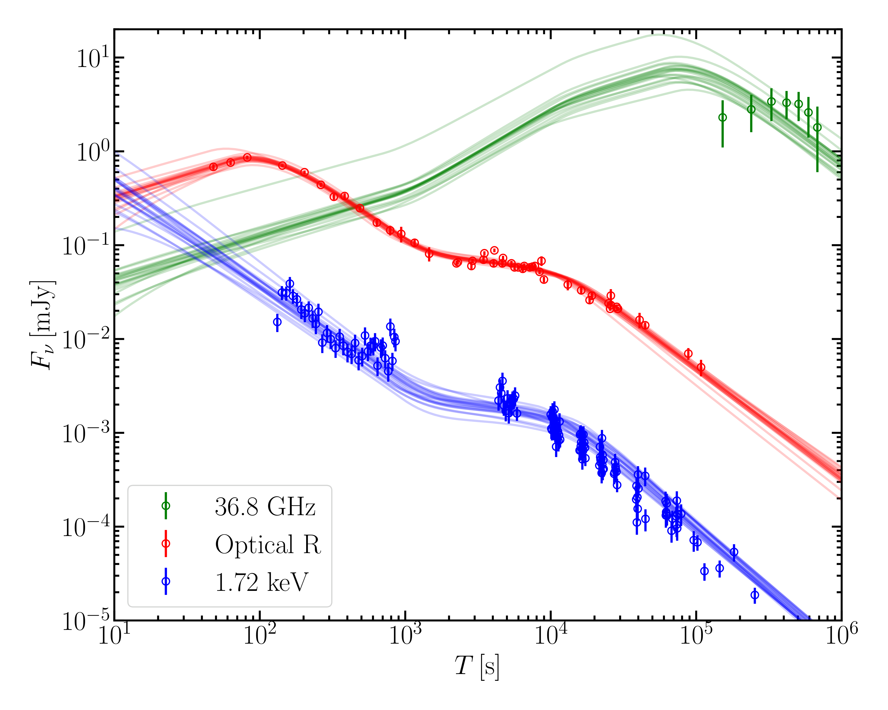<br />
图注：The light curves obtained from MCMC analysis together with observed data points in the radio, optical R, and X-ray bands, shown with green, red, and blue dots. See Table~\(\ref{tab:best_fit_params}\) for the values of the best fit parameters.<br />
对应解读：对应“全波段余辉光变曲线”“MCMC 拟合曲线和残差”以及模型拟合段落中正向激波加晚期能量注入的核心检验。<br />
入选理由：这张图直接给出 MCMC 最佳拟合光变与射电、光学 R 波段、X 射线观测点的比较，是判断早期 onset bump 和约 4000 s 再增亮能否由同一物理模型解释的最关键图，比单纯分类图更能支撑论文主结论。<br />
来源与置信度：\(arxiv_source\)；high；\(arxiv_source\) / GRBs.tex:figure[7]</p>
<p><strong>Fig01</strong><br />
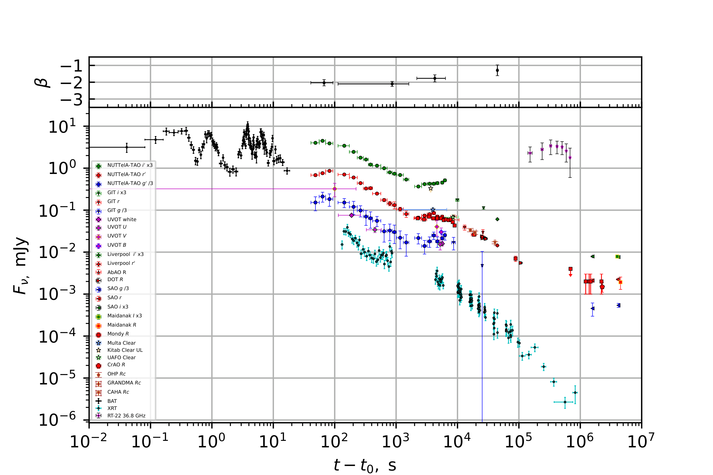<br />
图注：Upper panel: the observed optical spectral slope $\beta$ (without correction for a host galaxy extinction) for GRB~230328B as a function of time. We determine the spectral slope at each epoch by fitting a power law to the $g'r'i'$ fluxes and plot the time-averaged results. Bottom panel: multi-wavelength light curves including $\gamma$-ray, X-ray, optical, and radio data. Here, $t$ denotes the midpoint time of each co-add and $t_0$ is the BAT trigger time.<br />
对应解读：对应“多色光学早期光变”“全波段余辉光变曲线”和关键图表导读中关于早期颜色演化、无色再增亮的讨论。<br />
入选理由：上面板给出未校正宿主消光的光学谱斜率随时间变化，下面板汇总 γ 射线、X 射线、光学和射电光变，可同时检查 41 s 后早期多色覆盖、颜色是否稳定以及多波段再增亮是否同步。<br />
来源与置信度：\(arxiv_source\)；high；\(arxiv_source\) / GRBs.tex:figure[1]</p>
<p><strong>Fig08</strong><br />
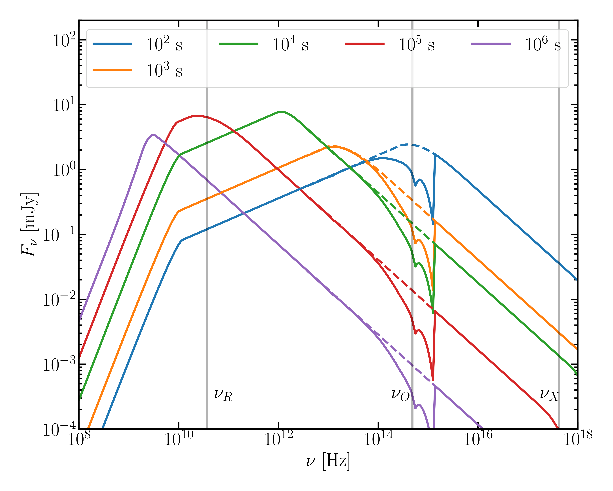<br />
图注：Afterglow spectra corresponding to best-fit parameters obtained from MCMC analysis at various epochs. The solid lines include the extinction of the host, while dashed lines do not. The vertical gray lines indicate the frequencies at which observations were obtained.<br />
对应解读：对应“SED 与消光曲线比较”和模型拟合段落中关于宿主消光、光学到 X 射线谱连接、MW/LMC 型消光可行性的讨论。<br />
入选理由：该图展示 MCMC 最佳参数下不同历元的余辉谱，并同时画出包含宿主消光与未包含消光的模型线，最适合验证显著视线消光和同步辐射谱形是否共同支持 \(A_V\) 约 0.8 mag 的结论。<br />
来源与置信度：\(arxiv_source\)；high；\(arxiv_source\) / GRBs.tex:figure[8]</p>
<p><strong>Fig12</strong><br />
<br />
图注：Corner plot of the posterior parameter distributions from the MCMC analysis. The diagonal panels show marginalized one-dimensional distributions, with vertical lines indicating the 16th, 50th (median), and 84th percentiles (corresponding to the $1\sigma$ credible intervals). The off-diagonal panels display two-dimensional joint constraints with density contours.<br />
对应解读：对应“后验分布或 corner plot”和模型拟合段落中关于 \(E_k,iso\)、n、p、微物理参数及能量注入参数退化的提醒。<br />
入选理由：这是 MCMC 后验参数相关图，可直接检查单参数置信区间、二维相关和潜在长尾，避免只引用最佳拟合值而忽略能量注入模型中的参数退化。<br />
来源与置信度：\(arxiv_source\)；high；\(arxiv_source\) / GRBs.tex:figure[12]</p>
<p><strong>Fig02</strong><br />
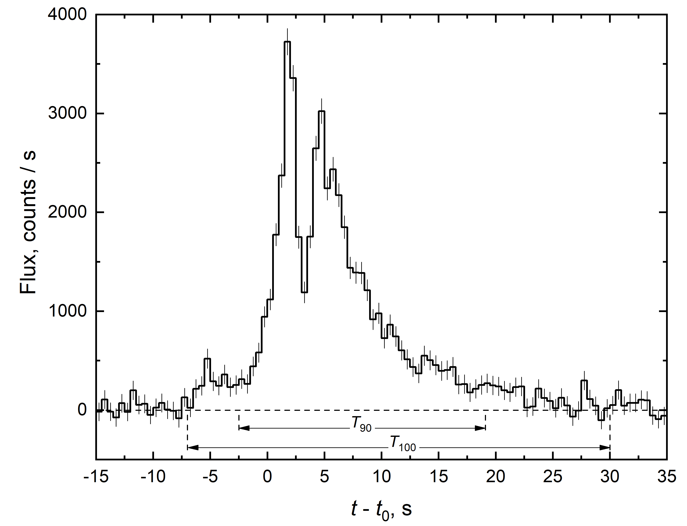<br />
图注：Background subtracted light curve of GRB~230328B based on the GBM/Fermi data with a time resolution of 0.5 s in the energy range of (8, 850) keV. Time intervals, covering $T_{90}$ and $ T_{100}$, are shown.<br />
对应解读：对应“Prompt emission 时间曲线”和关键图表导读中关于 Fermi/GBM 光变、T90、多峰结构和长暴分类依据的部分。<br />
入选理由：该图给出 GBM/Fermi 8–850 keV 背景扣除光变，并标出 T90 与 T100 时间区间，是确认持续时间约 22 s、判断其为典型长暴的基础观测图。<br />
来源与置信度：\(arxiv_source\)；high；\(arxiv_source\) / GRBs.tex:figure[2]</p>
<p><strong>Fig03</strong><br />
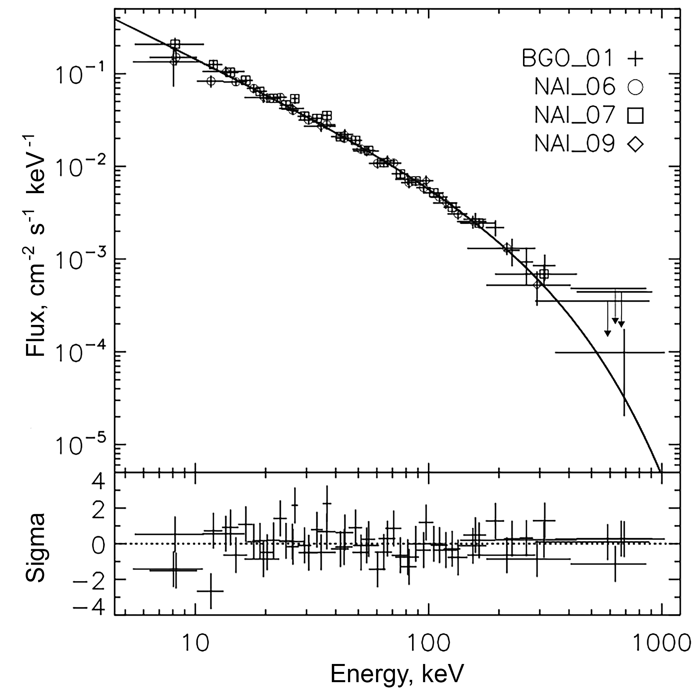<br />
图注：GRB~230328BP photon spectrum obtained from the GBM/Fermi measurement in (-7, 30) s time interval with respect to the trigger time, modeled with a power-law with an exponential cutoff. The top panel shows the spectrum obtained using data of the NaI_06, NaI_07, NaI_09, and BGO_01 GBM/Fermi detectors. The bottom panel shows the deviations between the spectral model and the experimental data expressed in units of standard deviations.<br />
对应解读：对应“Prompt emission 时间曲线和能谱拟合”以及模型拟合段落中关于 cutoff power-law 能谱、\(E_peak\) 和 \(E_iso\) 估计不确定性的讨论。<br />
入选理由：该图不仅显示 GBM 光子谱及 cutoff power-law 模型，还在下方给出以标准差为单位的残差，是检查 prompt 能谱模型是否可靠、能量学参数是否可用于经验相关关系判断的关键诊断图。<br />
来源与置信度：\(arxiv_source\)；high；\(arxiv_source\) / GRBs.tex:figure[3]</p>
<h4 id="_41">强相关工作</h4>
<p>这篇工作与 Swift 时代大量关于早期光学余辉和 X 射线平台的研究直接相关。类似事件中，早期光学峰常被用于估计初始洛伦兹因子，晚期平台或再增亮则被解释为能量注入、密度结构或结构化喷流。建议检索关键词包括“GRB early optical afterglow onset bump”，“GRB energy injection achromatic rebrightening”，“GRB forward shock MCMC modeling”，“GRB host extinction SED fitting”。</p>
<p>它也与关于长暴经验关系的研究相连，例如 \(E_{\rm peak}\)-\(E_{\rm iso}\) 关系和 \(E_{\rm peak}\)-\(L_{\rm iso}\) 关系。本文称 GRB 230328B 的能量学与长暴经验相关一致，这类判断依赖红移、能谱模型和 \(k\) 修正。由于本文红移为测光红移，建议把它与有光谱红移的长暴样本分开比较。</p>
<p>相反观点或张力主要在余辉再增亮解释上。密度跃迁模型、双喷流模型、反向激波贡献、微物理参数演化和中心引擎晚期活动都可在某些条件下产生复杂光变。检索关键词可用“GRB density jump rebrightening”，“GRB refreshed shocks”，“GRB reverse shock optical flash”，“structured jet afterglow degeneracy”。读者若要进一步判断本文模型强弱，应比较这些替代模型是否能同样解释无色性、峰宽和射电数据。</p>
<p><strong>相似工作</strong>：<br />
- https://arxiv.org/abs/2606.04585<br />
- https://ui.adsabs.harvard.edu/search/q=GRB%20early%20optical%20afterglow%20onset%20bump<br />
- https://ui.adsabs.harvard.edu/search/q=GRB%20achromatic%20rebrightening%20energy%20injection</p>
<p><strong>基础理论 / 方法工作</strong>：<br />
- https://ui.adsabs.harvard.edu/abs/1998ApJ...497L..17S/abstract<br />
- https://ui.adsabs.harvard.edu/abs/1998ApJ...497L..21M/abstract<br />
- https://ui.adsabs.harvard.edu/abs/2002ARA%26A..40..137P/abstract<br />
- https://ui.adsabs.harvard.edu/abs/2004RvMP...76.1143Z/abstract</p>
<p><strong>相反观点 / 张力线索</strong>：<br />
- https://ui.adsabs.harvard.edu/search/q=GRB%20density%20jump%20rebrightening<br />
- https://ui.adsabs.harvard.edu/search/q=GRB%20refreshed%20shocks%20afterglow<br />
- https://ui.adsabs.harvard.edu/search/q=GRB%20reverse%20shock%20optical%20flash</p>
</details>
<h3 id="5-predictions-for-the-x-ray-polarisation-modulation-in-cygnus-x-1-from-reflection-off-the-stellar-companion-and-its-wind">5. Predictions for the X-ray polarisation modulation in Cygnus X-1 from reflection off the stellar companion and its wind</h3>
<ul>
<li>来源：arXiv / astro-ph.HE</li>
<li>链接：https://arxiv.org/abs/2606.04159v1</li>
<li>作者：Bert Vander Meulen, Kun Hu, Victoria Grinberg, Henric Krawczynski</li>
<li>评分：novelty 7/10，importance 8/10，relevance 8/10，final 8.70/10</li>
<li>推荐理由：针对Cyg X-1预测伴星和聚焦星风反射导致的IXPE可测X射线偏振轨道调制，对解释黑洞XRB偏振观测和风-fed系统建模有直接价值。</li>
</ul>
<p><strong>中文题目</strong>：天鹅座 X-1 中由伴星与聚焦恒星风反射引起的 X 射线偏振轨道调制预测</p>
<p><strong>做了什么</strong>：这篇文章研究天鹅座 X-1 的 X 射线偏振是否会因伴星表面和聚焦恒星风的散射/反射而随轨道相位变化。作者把黑洞附近偏振源辐射模型 \(\mathrm{kerrC}\) 与三维辐射转移代码 \(\mathrm{SKIRT}\) 结合，并加入双星中的聚焦恒星风结构，计算一个轨道周期内的 \(I\)、\(Q\)、\(U\) 通量、表面亮度图和线偏振图。主要结论是：反射信号应产生明显的半轨道周期 \(P/2\) 双峰偏振度调制，峰到峰幅度在 \(2\text{--}4\,\mathrm{keV}\)、\(4\text{--}6\,\mathrm{keV}\)、\(6\text{--}8\,\mathrm{keV}\) 分别约为 \(0.25\)、\(0.81\)、\(1.24\) 个百分点；偏振角调制较小，\(|\Delta \mathrm{PA}|<4.6^\circ\)。一个关键物理点是，再处理辐射和弥散散射晕会降低整体偏振度，因此不能把观测到的低偏振度简单解释为源区本身低偏振。</p>
<p><strong>为什么重要</strong>：天鹅座 X-1 是最亮、研究最充分的黑洞 X 射线双星之一，也是 \(\mathrm{IXPE}\) 反复观测的标杆源。若能从偏振中分离出 \(P\) 与 \(P/2\) 的轨道调制，就可以把黑洞附近吸积流/喷流的本征偏振、伴星反射、恒星风散射这几种贡献拆开。本文的重要性在于它给出了一个可观测、可检验的定量预言：由伴星与风反射导致的 \(P/2\) 调制不仅存在，而且随能量增强。</p>
<p><strong>理论 / 观测 / 仪器方法价值</strong>：对理论而言，本文把广义相对论偏振源模型与三维双星环境辐射转移连接起来，提醒人们风馈 X 射线双星中的偏振不是单一源区诊断。对观测而言，它给出了 \(\mathrm{IXPE}\) 或未来更高灵敏度偏振仪可寻找的相位依赖信号，包括不同能段的 \(\mathrm{PD}\) 幅度和 \(\mathrm{PA}\) 上限。对方法而言，它展示了用 Stokes 参数全链路传播来处理反射、吸收、散射晕和轨道几何的必要性。</p>
<p><strong>为什么应该关注</strong>：如果你关心 X 射线偏振如何约束黑洞自旋、吸积盘几何或喷流方向，这篇文章说明了一个容易被低估的系统误差：伴星和恒星风会在轨道相位上调制偏振，并且会稀释本征偏振。忽略这个效应，可能把环境再处理误判为吸积流几何变化。反过来，如果观测到本文预言的 \(P/2\) 信号，它会成为测量天鹅座 X-1 风结构、反射几何和源区偏振方向的一个新工具。</p>
<details class="paper-detail">
<summary>展开详细解读：文章讲解、背景、理论、重点章节、图表与相关工作</summary>
<h4 id="_42">文章详细讲解</h4>
<p>科学问题：天鹅座 X-1 的 X 射线偏振已经由 \(\mathrm{IXPE}\) 多次观测，但目前讨论多集中在黑洞附近的本征偏振，例如吸积盘、热康普顿化区或喷流基底。已有研究报告了可能与轨道周期 \(P\) 相关的偏振调制；然而，如果一部分 X 射线被大质量伴星表面和聚焦恒星风散射，几何上更自然会出现半周期 \(P/2\) 的双峰结构。本文要回答的问题是：这种反射/散射贡献在天鹅座 X-1 中到底有多大？是否足以被当前或未来 X 射线偏振观测识别？它会怎样改变我们对源区本征偏振的解释？</p>
<p>作者怎么做：论文建立了一个三维偏振辐射转移框架。源区辐射部分采用 \(\mathrm{kerrC}\) 这类包含广义相对论效应的偏振源模型，用来给出黑洞附近出射 X 射线的 Stokes 参数。双星环境部分采用聚焦恒星风模型，而不是简单球对称风，因为天鹅座 X-1 的 O 型伴星风会受到黑洞引力、轨道运动和 Roche 几何影响。随后作者用 \(\mathrm{SKIRT}\) 进行三维 X 射线辐射转移，追踪光子在伴星、风和源周围弥散介质中的吸收、散射和再处理，输出随轨道相位变化的 \(I\)、\(Q\)、\(U\)、表面亮度图和线偏振图。</p>
<p>关键结果：最突出的预测是偏振度 \(\mathrm{PD}\) 出现双峰 \(P/2\) 调制。峰到峰振幅随能量显著增加：在 \(2\text{--}4\,\mathrm{keV}\) 为 \(0.25\) 个百分点，在 \(4\text{--}6\,\mathrm{keV}\) 为 \(0.81\) 个百分点，在 \(6\text{--}8\,\mathrm{keV}\) 为 \(1.24\) 个百分点。偏振角 \(\mathrm{PA}\) 的变化相对温和，\(|\Delta \mathrm{PA}|<4.6^\circ\)。物理解释是，伴星和聚焦风给出一个相位依赖的反射偏振分量，它在某些相位与源区本征偏振方向相加，在另一些相位部分抵消。与此同时，源周围的弥散散射晕会增加总强度 \(I\) 并混入不同偏振方向的光，从而系统性降低整体 \(\mathrm{PD}\)。</p>
<p>局限和下一步：本文是预测性建模，而不是直接对某一组 \(\mathrm{IXPE}\) 数据的最终拟合。其结论依赖于源区本征偏振设定、风密度和电离结构、伴星表面反照率、轨道几何以及吸收截面的能量依赖。实际观测中还会遇到相位覆盖不均、计数统计、背景、仪器调制因子和不同光谱态混合的问题。下一步最直接的工作是把模型做成可与 \(\mathrm{IXPE}\) 相位分箱数据拟合的前向模型，同时联合光谱、光变、吸收柱密度和偏振，检验 \(P/2\) 信号是否存在，并判断它与可能的 \(P\) 调制如何共存。</p>
<h4 id="_43">背景知识</h4>
<p>天鹅座 X-1 是一个由恒星质量黑洞和 O 型大质量伴星组成的高质量 X 射线双星。它的 X 射线主要来自黑洞附近的吸积流、热康普顿化等离子体以及可能的喷流基底，但系统中还有一个强风伴星。与低质量 X 射线双星不同，风馈系统的近源环境并不干净：恒星风、聚焦风尾、伴星表面反射和轨道相位相关吸收都会影响观测到的辐射。</p>
<p>偏振观测为天鹅座 X-1 提供了区别传统光谱退化的新维度。普通能谱可以告诉我们温度、光子指数、反射强度和吸收柱密度，但许多几何模型能给出相似能谱。线偏振的 \(\mathrm{PD}\) 和 \(\mathrm{PA}\) 对散射平面、源区非球对称性和观测倾角敏感，因此可以检验吸积盘是否主导、冠层是 slab 还是 lamp-post、喷流是否贡献硬 X 射线，以及黑洞附近广义相对论光线弯曲如何旋转偏振方向。</p>
<p>历史上，天鹅座 X-1 的风结构已经通过 X 射线吸收、铁线、轨道相位光变和紫外/光学观测长期研究。所谓聚焦风不是简单的径向球对称流，而是伴星物质在黑洞引力和双星 Roche 势影响下更偏向黑洞方向流动。这样的结构会使不同轨道相位的吸收柱密度和散射光比例不同，因而自然会影响偏振。然而，在 X 射线偏振刚进入高精度观测时代之前，这类环境偏振效应很难被直接检验。</p>
<p>为什么现在值得重新看，是因为 \(\mathrm{IXPE}\) 已经能在若干亮源上测到百分之几量级甚至更低的偏振信号。当天鹅座 X-1 的偏振度本身只有几个百分点时，环境引入的 \(0.1\text{--}1\) 个百分点级别调制就不是小修正，而可能决定模型解释。特别是如果观测分析只关注黑洞附近的源区几何，可能把风和伴星反射造成的相位依赖误当作吸积状态或喷流贡献变化。</p>
<p>该领域一个常见误区是把“反射”只理解为内盘反射，例如铁线和 Compton hump。对高质量 X 射线双星来说，伴星表面和恒星风同样能提供大尺度反射/散射屏幕，只是其光谱特征可能较弱、偏振特征却很有辨识度。另一个误区是认为低偏振度必然说明源区近似球对称；本文强调，低 \(\mathrm{PD}\) 也可能是高偏振源光被弥散散射晕和再处理辐射稀释后的结果。</p>
<h4 id="_44">基础理论 / 方法脉络</h4>
<p>线偏振最基本的描述是 Stokes 参数。对 X 射线偏振观测而言，\(I\) 表示总强度，\(Q\) 和 \(U\) 表示相对于某个天空参考轴的线偏振分量。偏振度 \(\mathrm{PD}\) 来自 \(Q\) 与 \(U\) 的合成幅度除以 \(I\)，偏振角 \(\mathrm{PA}\) 则由 \(Q\) 和 \(U\) 的相对符号与大小决定。因为不同辐射成分的 Stokes 参数可以线性相加，所以偏振特别适合分析“源区直达光加环境散射光”的问题。</p>
<p>散射产生偏振的直观图像来自 Thomson 或低能 Compton 散射：若入射辐射被电子散射，垂直于散射平面的电场分量和位于散射平面内的电场分量散射概率不同，因此散射光通常带有线偏振。对单次散射而言，接近 \(90^\circ\) 的散射角会产生较高偏振；前向或后向散射偏振较弱。在双星中，黑洞、伴星和观测者形成的散射角会随轨道相位周期性变化，这就是 \(P/2\) 偏振调制的几何来源之一。</p>
<p>本文的模型假设可以理解为三层结构：第一层是黑洞附近的本征偏振源，由 \(\mathrm{kerrC}\) 给出含广义相对论传播后的出射 Stokes 参数；第二层是伴星和聚焦风，它们吸收、散射和再发射部分源光；第三层是观测投影，即不同轨道相位下，反射区域在天空平面上的方位和被遮挡/吸收程度不同。最终观测到的 \(Q\) 和 \(U\) 不是单独来自黑洞附近，而是所有路径的叠加。</p>
<p>能量依赖是本文结果的关键。低能 X 射线更容易被光电吸收，特别是在较远路径、较高柱密度或较低电离度的风中；高能 X 射线穿透力更强，远端反射和散射贡献更容易到达观测者。因此，随着能量从 \(2\text{--}4\,\mathrm{keV}\) 增加到 \(6\text{--}8\,\mathrm{keV}\)，反射偏振分量相对直达光和弥散晕的权重上升，导致 \(\mathrm{PD}\) 调制幅度变大。</p>
<p>常见退化包括源区本征 \(\mathrm{PD}\) 与散射稀释之间的退化、源区 \(\mathrm{PA}\) 与反射几何方位之间的退化、风密度与吸收截面能量依赖之间的退化，以及轨道倾角与散射角分布之间的退化。系统误差则包括风结构过于理想化、伴星表面反照率和电离状态不确定、不同光谱态混入同一相位分箱、以及 \(\mathrm{IXPE}\) 仪器调制因子和背景建模对低幅度调制的影响。</p>
<h4 id="_45">公式与推导</h4>
<p>第一步是把观测偏振写成 Stokes 参数。若天空参考轴固定，能量为 \(E\)、轨道相位为 \(\phi\) 的总信号可写为</p>
<div class="math-display">\[\mathbf{S}(E,\phi)=\begin{pmatrix}I(E,\phi)\\Q(E,\phi)\\U(E,\phi)\\V(E,\phi)\end{pmatrix}.\]</div>
<p>本文关注线偏振，通常可忽略圆偏振 \(V\)。这里 \(I\) 是总强度，\(Q\) 和 \(U\) 是两个正交线偏振基下的强度差。这个表达的物理意义是：只要各辐射成分相干性可忽略，源区直达光、伴星反射光和风散射光的 \(\mathbf{S}\) 可以逐项相加。</p>
<p>第二步是由 \(I\)、\(Q\)、\(U\) 得到可观测的偏振度和偏振角：</p>
<div class="math-display">\[\mathrm{PD}(E,\phi)=\frac{\sqrt{Q(E,\phi)^2+U(E,\phi)^2}}{I(E,\phi)},\qquad \mathrm{PA}(E,\phi)=\frac{1}{2}\arctan2\left[U(E,\phi),Q(E,\phi)\right].\]</div>
<p>其中 \(\arctan2\) 保留象限信息，因子 \(1/2\) 来自线偏振方向的 \(180^\circ\) 周期性。这两个量正是 \(\mathrm{IXPE}\) 分能段、分相位分析的核心输出。</p>
<p>第三步是说明环境贡献如何稀释源区本征偏振。若直达源光为 \(\mathbf{S}_{\rm src}\)，反射/散射光为 \(\mathbf{S}_{\rm ref}\)，弥散近源晕为 \(\mathbf{S}_{\rm halo}\)，则</p>
<div class="math-display">\[\mathbf{S}_{\rm obs}(E,\phi)=\mathbf{S}_{\rm src}(E)+\mathbf{S}_{\rm ref}(E,\phi)+\mathbf{S}_{\rm halo}(E,\phi).\]</div>
<p>如果 \(\mathbf{S}_{\rm halo}\) 的偏振较低但强度不小，它会增加分母 \(I\) 而对 \(\sqrt{Q^2+U^2}\) 贡献较小，从而降低 \(\mathrm{PD}\)。这就是本文强调“再处理降低总体偏振度”的基本数学形式。</p>
<p>第四步是单次电子散射的偏振来源。在 Thomson 极限下，非偏振入射光经散射角 \(\theta\) 后的线偏振近似为</p>
<div class="math-display">\[p_{\rm sca}(\theta)=\frac{1-\cos^2\theta}{1+\cos^2\theta}.\]</div>
<p>这里 \(\theta\) 是入射方向与出射到观测者方向之间的夹角。\(\theta\approx90^\circ\) 时 \(p_{\rm sca}\) 最大，\(\theta\approx0^\circ\) 或 \(180^\circ\) 时接近零。双星轨道使伴星和风中不同散射体对应的 \(\theta\) 随 \(\phi\) 改变，因此产生相位调制。</p>
<p>第五步是把风中的消光写成沿视线积分。对一条光线路径 \(s\)，透过率可表示为</p>
<div class="math-display">\[T(E,\phi)=\exp\left[-\tau(E,\phi)\right],\qquad \tau(E,\phi)=\int n_{\rm H}(s,\phi)\,\sigma_{\rm eff}(E,s)\,\mathrm{d}s.\]</div>
<p>其中 \(n_{\rm H}\) 是等效氢数密度，\(\sigma_{\rm eff}\) 包含光电吸收和散射的有效截面。由于 \(\sigma_{\rm eff}\) 在软 X 射线能段通常随能量降低而增大，低能远端反射更容易被削弱；这解释了本文预言 \(\mathrm{PD}\) 调制幅度随能量升高而增强。</p>
<p>第六步是用简化两成分模型理解相长和相消。设源区偏振为 \(p_{\rm s}\)、强度为 \(I_{\rm s}\)、偏振角为 \(\psi_{\rm s}\)，反射分量为 \(p_{\rm r}\)、\(I_{\rm r}(\phi)\)、\(\psi_{\rm r}(\phi)\)，则</p>
<div class="math-display">\[Q_{\rm obs}=p_{\rm s}I_{\rm s}\cos 2\psi_{\rm s}+p_{\rm r}I_{\rm r}(\phi)\cos 2\psi_{\rm r}(\phi),\]</div>
<div class="math-display">\[U_{\rm obs}=p_{\rm s}I_{\rm s}\sin 2\psi_{\rm s}+p_{\rm r}I_{\rm r}(\phi)\sin 2\psi_{\rm r}(\phi).\]</div>
<p>当 \(\psi_{\rm r}\) 与 \(\psi_{\rm s}\) 接近时，\(Q\) 和 \(U\) 向量相加，\(\mathrm{PD}\) 增强；当二者近似正交时，Stokes 向量部分抵消，\(\mathrm{PD}\) 降低。</p>
<p>第七步是轨道调制的傅里叶诊断。若反射几何在一个轨道中出现两次相似投影，可把偏振度写成</p>
<div class="math-display">\[\mathrm{PD}(\phi,E)=a_0(E)+a_1(E)\cos\left(2\pi\phi+\varphi_1\right)+a_2(E)\cos\left(4\pi\phi+\varphi_2\right)+\cdots .\]</div>
<p>这里 \(a_1\) 对应周期 \(P\) 成分，\(a_2\) 对应半周期 \(P/2\) 成分。本文预测的核心就是由伴星和风反射驱动的 \(a_2(E)\) 显著，并且随能量增加。</p>
<p>第八步是把模型和偏振仪观测联系起来。X 射线偏振仪测量事件方位角 \(\alpha_i\)，其概率近似为</p>
<div class="math-display">\[P(\alpha_i|\mu,p,\psi)=\frac{1}{2\pi}\left[1+\mu(E_i)p\cos 2(\alpha_i-\psi)\right],\]</div>
<p>其中 \(\mu(E_i)\) 是仪器调制因子，\(p\) 和 \(\psi\) 分别对应 \(\mathrm{PD}\) 和 \(\mathrm{PA}\)。实际检验本文预言时，需要把每个能段、相位箱的模型 \(I\)、\(Q\)、\(U\) 通过仪器响应转成事件方位角分布，而不是只比较理想 \(\mathrm{PD}\) 曲线。</p>
<h4 id="_46">模型拟合 / 应用方法</h4>
<p>这类工作的拟合对象不是单一光谱，而是随能量和轨道相位变化的 Stokes 数据。理想情况下，应同时拟合 \(I(E,\phi)\)、\(Q(E,\phi)\)、\(U(E,\phi)\)，或者等价地拟合事件方位角分布。关键参数包括源区本征 \(\mathrm{PD}\)、源区 \(\mathrm{PA}\)、源光谱形状、轨道倾角、伴星半径和位置、风密度归一化、聚焦风几何、电离状态、吸收/散射截面以及反射反照率。</p>
<p>似然层面，如果使用分箱后的 Stokes 估计量，可以采用近似高斯似然，比较模型和观测的 \(I\)、\(Q\)、\(U\) 残差；如果使用未分箱事件，则更稳妥的是使用每个光子的能量、相位和方位角构造 Poisson 或调制角似然。由于本文预言的调制幅度只有百分点甚至亚百分点量级，背景、仪器响应、曝光相位覆盖和能量依赖调制因子都必须进入前向模型。</p>
<p>参数退化需要特别注意。源区本征偏振度较高但被强散射晕稀释，可能与源区本征偏振较低但环境较弱给出相似平均 \(\mathrm{PD}\)。风密度增加会提高散射贡献，但也会提高吸收，二者对不同能段的影响方向不完全相同。源区 \(\mathrm{PA}\) 与反射分量 \(\mathrm{PA}\) 的相对角度决定 Stokes 向量相加还是相消，因此仅看 \(\mathrm{PD}\) 曲线可能不够，必须联合 \(\mathrm{PA}\) 和 \(Q\)、\(U\) 的相位轨迹。</p>
<p>残差诊断上，读者应关注模型是否同时解释 \(P\) 与 \(P/2\) 成分。如果 \(\mathrm{PD}\) 有明显 \(P/2\) 调制但 \(\mathrm{PA}\) 变化很小，说明反射分量可能主要改变 Stokes 向量长度而非方向；若 \(\mathrm{PA}\) 残差呈现系统性相位漂移，则可能意味着源区偏振方向、风非轴对称结构或轨道 ephemeris 有问题。不同能段中调制幅度的比例也是强约束，因为它直接检验吸收和远端反射的能量依赖。</p>
<p>模型可能失败的地方包括：风结构真实上更团块化，导致短时相位内散射和吸收波动；源区偏振随光谱态变化，而不是轨道相位唯一函数；伴星表面反射的电离和元素丰度不确定；以及 \(\mathrm{SKIRT}\) 模型中某些再处理近似在强 X 射线照射下不够精细。实际应用中，最合理的策略是先用光谱和光变约束风吸收，再把偏振作为几何检验，而不是只靠偏振反推出所有环境参数。</p>
<h4 id="_47">重点章节 / 结果段落怎么读</h4>
<p>数据/模型设定部分应首先读清楚作者如何定义天鹅座 X-1 的双星几何、轨道相位、伴星位置、风结构和源区偏振输入。这里决定了 \(P/2\) 信号的相位位置和振幅，不应只跳到最终偏振曲线。</p>
<p>辐射转移方法部分是本文的技术核心。重点看 \(\mathrm{kerrC}\) 输出如何作为 \(\mathrm{SKIRT}\) 输入，Stokes 参数如何传播，吸收、散射、反射和再处理分别怎样实现。读者要确认模型是否保留了 \(Q\) 与 \(U\) 的符号和参考系旋转，因为偏振相加不能只加 \(\mathrm{PD}\)。</p>
<p>主结果部分应按能段阅读。作者报告 \(2\text{--}4\,\mathrm{keV}\)、\(4\text{--}6\,\mathrm{keV}\)、\(6\text{--}8\,\mathrm{keV}\) 的峰到峰 \(\mathrm{PD}\) 幅度分别为 \(0.25\)、\(0.81\)、\(1.24\) 个百分点，这说明能量依赖不是装饰性结果，而是区分吸收和反射贡献的核心诊断。</p>
<p>表面亮度图和偏振图部分值得细读。它们能显示哪些空间区域贡献了主要 \(Q\)、\(U\) 信号：伴星表面、聚焦风、源周围弥散晕还是直达源光。只看总 \(\mathrm{PD}\) 曲线会掩盖不同区域的相消和稀释。</p>
<p>讨论和局限部分应关注作者如何解释为什么 \(\mathrm{PA}\) 调制较小、为什么再处理会降低整体 \(\mathrm{PD}\)、以及为什么风馈 X 射线双星普遍需要考虑弥散散射晕。对观测者来说，这一部分直接关系到如何设计相位分箱和能段选择。</p>
<h4 id="_48">建议重点查看的图表</h4>
<ol>
<li>
<p>轨道相位下的 \(\mathrm{PD}\) 曲线：重点看是否存在两个峰、峰谷相位是否对应伴星/风反射几何，以及 \(2\text{--}4\,\mathrm{keV}\)、\(4\text{--}6\,\mathrm{keV}\)、\(6\text{--}8\,\mathrm{keV}\) 的幅度是否逐级增加。</p>
</li>
<li>
<p>轨道相位下的 \(\mathrm{PA}\) 曲线：重点看 \(|\Delta \mathrm{PA}|<4.6^\circ\) 的小幅变化是否稳定，是否有相位处的突变或参考角定义造成的 \(180^\circ\) 包裹问题。</p>
</li>
<li>
<p>Stokes \(Q\) 与 \(U\) 随相位变化图：比 \(\mathrm{PD}\) 更能看出反射分量与源区分量是相长还是相消。若论文给出 \(Q\)-\(U\) 平面轨迹，应检查是否有闭合双环或近似椭圆结构。</p>
</li>
<li>
<p>表面亮度图：检查不同相位中伴星表面、聚焦风和源周围晕的相对亮度。关键不是图像是否好看，而是哪一部分空间区域主导反射通量。</p>
</li>
<li>
<p>线偏振矢量图或偏振地图：看偏振方向是否围绕散射几何系统性旋转，以及不同区域的偏振矢量是否互相抵消。</p>
</li>
<li>
<p>能量依赖或分能段对比图：检查调制幅度随能量升高的趋势是否来自反射增强、吸收减弱，还是总强度变化造成的归一化效应。</p>
</li>
<li>
<p>若有模型分量分解图，应检查直达光、伴星反射、风散射和弥散晕分别对 \(I\)、\(Q\)、\(U\) 的贡献，而不要只看最终总曲线。</p>
</li>
<li>
<p>若有稳健性测试或参数变化图，应重点看风密度、源区本征偏振、轨道倾角变化时 \(P/2\) 信号是否仍然存在。</p>
</li>
</ol>
<h4 id="_49">关键图表逐图导读</h4>
<p>图 1：通常应是系统几何或模型示意图。横纵坐标若为空间坐标，应确认黑洞、伴星、观测者方向和轨道相位零点的定义。读图陷阱是不同论文对 superior conjunction 与 inferior conjunction 的相位约定可能不同，若相位定义弄错，后面对峰谷位置的理解会整体反转。</p>
<p>图 2：若为风密度或吸收柱密度分布图，坐标轴可能是双星轨道平面中的空间位置或相位。应看聚焦风是否明显偏向黑洞方向、是否有尾迹或非球对称结构。模型线或色标若跨越多个数量级，要注意高密度区是否只占小体积但主导吸收。</p>
<p>图 3：若为 \(\mathrm{PD}\) 随轨道相位曲线，横轴应为相位 \(\phi\)，纵轴为 \(\mathrm{PD}\) 或相对 \(\Delta\mathrm{PD}\)。不同颜色通常代表 \(2\text{--}4\,\mathrm{keV}\)、\(4\text{--}6\,\mathrm{keV}\)、\(6\text{--}8\,\mathrm{keV}\)。读者应检查双峰是否接近半周期分离，以及高能曲线是否比低能曲线振幅更大。不要把峰到峰百分点误读为相对百分比。</p>
<p>图 4：若为 \(\mathrm{PA}\) 随相位变化图，横轴仍为 \(\phi\)，纵轴为角度。重点看曲线是否平滑、是否有 \(\pm90^\circ\) 或 \(180^\circ\) 的角度包裹。小于几度的变化对仪器系统误差和相位分箱非常敏感，因此实际观测比较时要看误差条是否足以分辨。</p>
<p>图 5：若为表面亮度图，坐标轴应是天空投影坐标，色标为 X 射线强度。主要结论应来自不同相位中亮区在伴星表面、风结构和源周围晕之间的迁移。陷阱是亮度最高的区域不一定对偏振贡献最大，因为低偏振强度会稀释 \(\mathrm{PD}\)。</p>
<p>图 6：若为偏振地图或矢量叠加图，箭头方向表示 \(\mathrm{PA}\)，箭头长度或颜色表示局部 \(\mathrm{PD}\)。应看不同区域的箭头是否同向；若方向相差接近 \(90^\circ\)，它们在总 \(Q\)、\(U\) 中会抵消。读图时不要直接平均角度，而要想到 Stokes 向量平均。</p>
<p>图 7：若为分量分解或能量依赖图，应检查直达源、伴星反射、风散射、弥散晕在每个能段的比例。若高能端反射贡献上升，就支持作者关于低能吸收削弱远端反射、高能反射偏振更重要的解释。</p>
<h4 id="_50">论文原图 / 可嵌入图片</h4>
<p><strong>Fig04</strong><br />
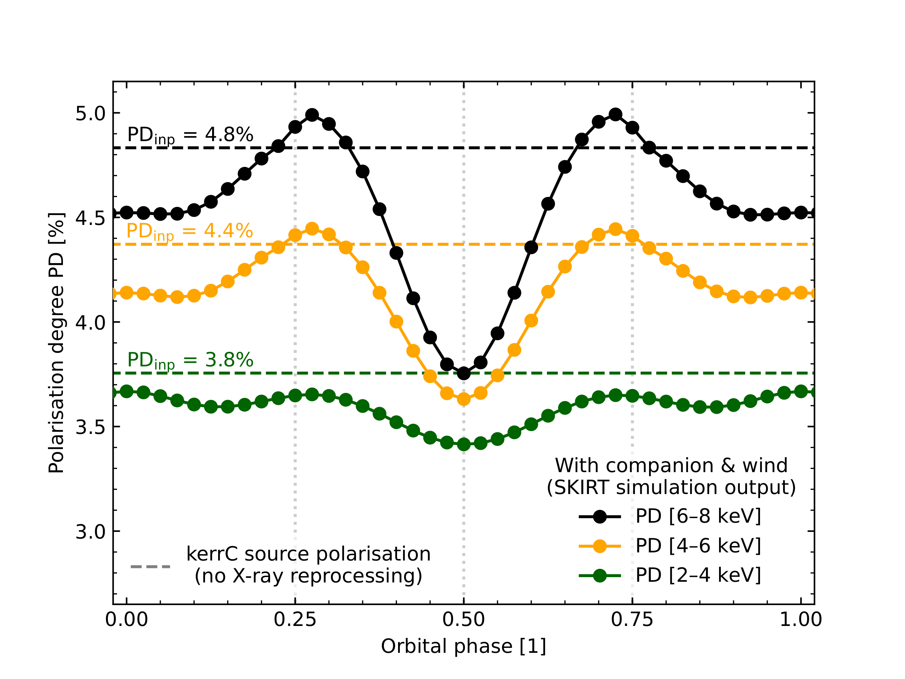<br />
图注：Orbital modulation of the linear polarisation degree PD in three energy bands. The dashed horizontal lines indicate the intrinsic source polarisation in each band ($\text{PD}_\text{inp}$ from kerrC; Fig.~\ref{fig:kerrC}).<br />
对应解读：建议重点查看的图表第1项；关键图表逐图导读中关于PD随轨道相位曲线的解读。<br />
入选理由：这是论文核心预言图，直接展示三 个能段中偏振度PD随轨道相位的双峰P/2调制，并可检查2–4、4–6、6–8 keV调制幅度是否随能量升高而增大；虚线还给出源区本征偏振，能直观看出再处理如何稀释或改变总PD。<br />
来源与置信度：\(arxiv_source\)；high；\(arxiv_source\) / aanda.tex:figure[4]</p>
<p><strong>Fig05</strong><br />
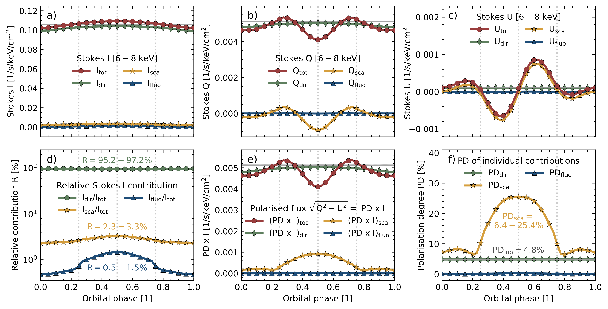<br />
图注：Broadband Stokes I, Q, and U fluxes as a function of orbital phase for the $6-8~\text{keV}$ band. The total observed flux (red) is the sum of three flux contributions: the direct source contribution (green), the Compton-scattered continuum (orange), and the fluorescent-line emission (blue); $\text{I}_\text{tot}=\text{I}_\text{dir}+\text{I}_\text{sca}+\text{I}_\text{fluo}$, and equivalently for Stokes Q and U. The intrinsic primary-source flux is shown in grey as a reference. Stokes Q and U are referred to the projected accretion-disk axis, which is offset from celestial north by $21^{\circ}$ (see Fig.~\(\ref{fig:images}\) and Sect.~\ref{sec:roll}).<br />
对应解读：建议重点查看的图表第3项和第7项；模型拟合段落中关于联合I、Q、U及分量分解的讨论。<br />
入选理由：该图同时给出6–8 keV下Stokes I、Q、U随相位变化，并分解为直达源、Compton散射和荧光线贡献，是理解反射分量与源区分量在Stokes空间相长或相消的关键图，比只看总PD更能支撑物理解释。<br />
来源与置信度：\(arxiv_source\)；high；\(arxiv_source\) / aanda.tex:figure[5]</p>
<p><strong>Fig08</strong><br />
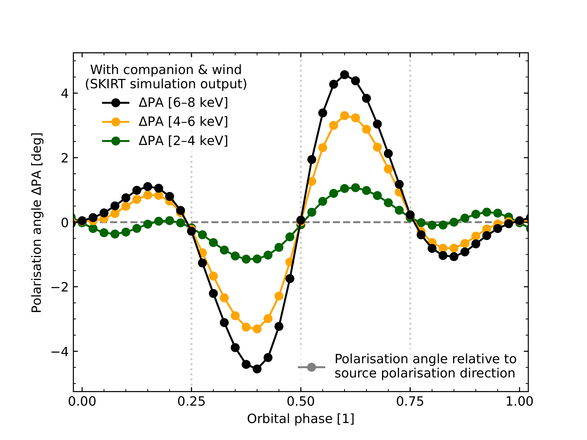<br />
图注：Orbital modulation of the polarisation angle offset, $\Delta\text{PA}$, in three energy bands, relative to the intrinsic source polarisation direction.<br />
对应解读：建议重点查看的图表第2项；关键图表逐图导读中关于PA随相位变化和角度包裹问题的解读。<br />
入选理由：该图直接对应偏振角偏移ΔPA的轨道调制，可检验论文声称的PA变化较小、|ΔPA|&lt;4.6°，并能观察不同能段PA曲线是否平滑、有无角度包裹或相位突变。<br />
来源与置信度：\(arxiv_source\)；high；\(arxiv_source\) / aanda.tex:figure[8]</p>
<p><strong>Fig06</strong><br />
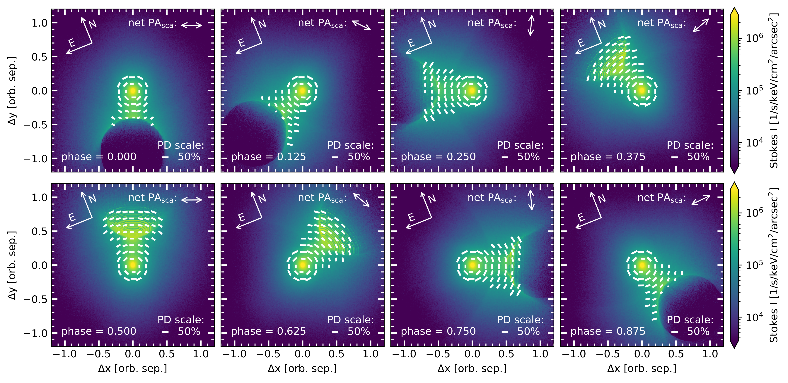<br />
图注：Linear polarisation maps in the $6-8~\text{keV}$ band at eight equally-spaced orbital phases (see Fig.~\(\ref{fig:images}\) for more details). The spatially resolved polarisation degree PD and polarisation angle PA are represented by the length and orientation of the white line segments, respectively. The direct source polarisation is aligned with the projected accretion-disk axis (positive $y$-direction), which is offset from celestial north by $21^{\circ}$ (see Fig.~\(\ref{fig:images}\) and Sect.~\ref{sec:roll}); the net scattered polarisation direction is indicated on each panel and rotates with orbital phase.<br />
对应解读：建议重点查看的图表第5项；关键图表逐图导读中关于偏振地图和矢量叠加图的说明。<br />
入选理由：该图给出6–8 keV不同轨道相位的空间分辨线偏振图，箭头方向和长度对应局部PA与PD，可直接判断伴星、风和源周围散射区域的偏振方向是否相互抵消，是解释总Q、U和PD调制来源的重要空间诊断。<br />
来源与置信度：\(arxiv_source\)；high；\(arxiv_source\) / aanda.tex:figure[6]</p>
<p><strong>Fig03</strong><br />
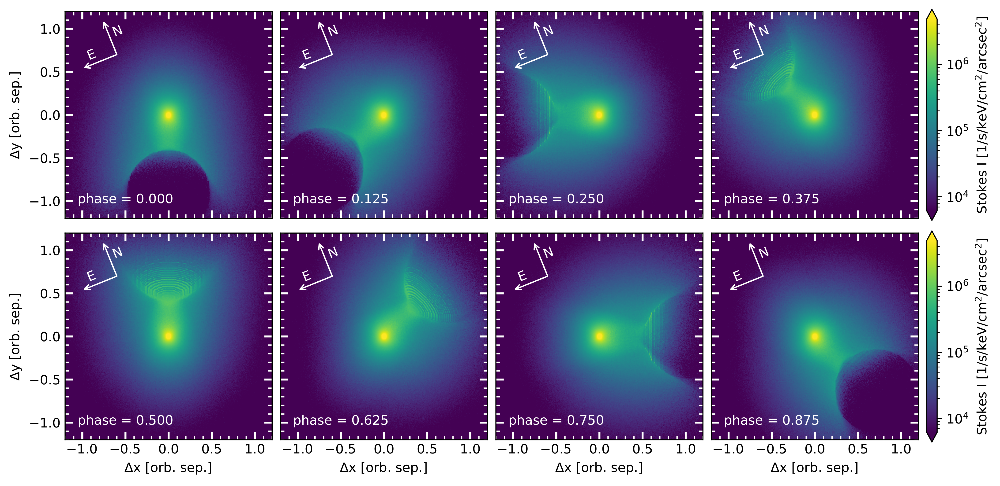<br />
图注：Broadband Stokes I surface brightness maps in the $4-6~\text{keV}$ band at eight equally-spaced orbital phases, providing a direct view of the Cyg X-1 system over one orbit. The binary orbit is observed at $i = 27.5^{\circ}$, with the orbital angular momentum vector pointing away from the observer, and phase zero corresponding to the inferior conjunction of the companion star. The projected accretion-disk axis is aligned with the positive $y$-direction, which corresponds to a rotation of $21^{\circ}$ relative to celestial north (indicated on each panel; Sect.~\ref{sec:roll}). The primary X-ray source is centred at $(0,\,0)$, and the extended emission traces reflection off the companion star and its focussed stellar wind (Sect.~\ref{sec:focussedwind}).<br />
对应解读：建议重点查看的图表第4项；关键图表逐图导读中关于表面亮度图的解读。<br />
入选理由：该图展示4–6 keV下八个轨道相位的Stokes I表面亮度分布，能定位伴星表面、聚焦风和源周围扩展发射在不同相位的相对贡献，为理解P/2调制的几何起源提供直接图像依据。<br />
来源与置信度：\(arxiv_source\)；high；\(arxiv_source\) / aanda.tex:figure[3]</p>
<p><strong>Fig09</strong><br />
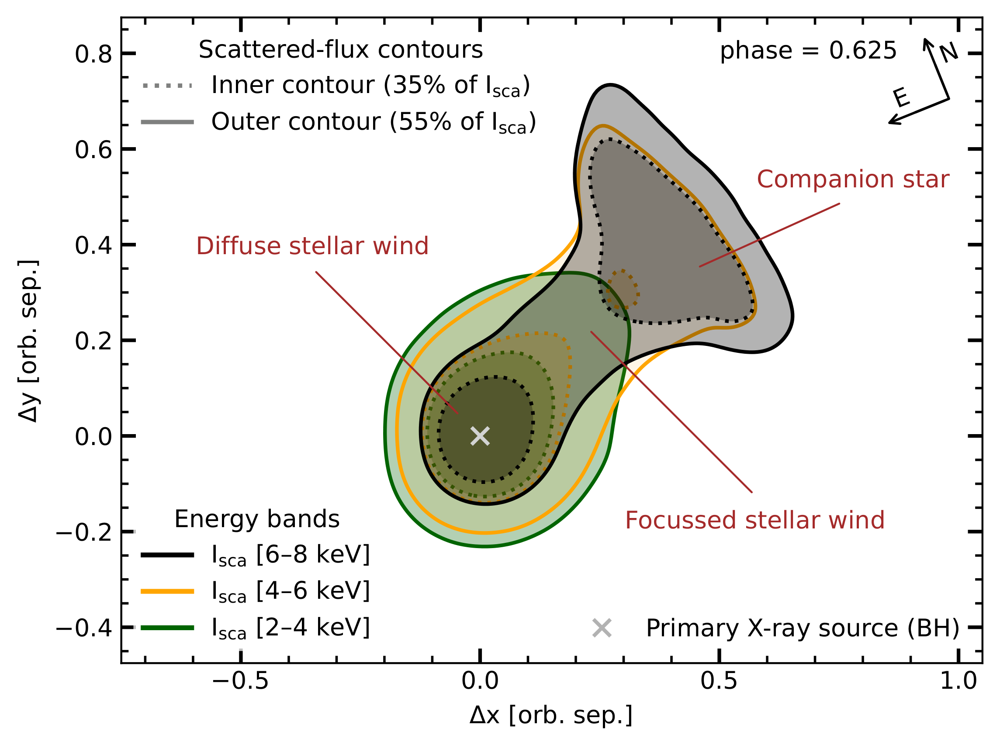<br />
图注：Energy dependence of the extended scattered-flux region: with increasing energy, the dominant scattering region shifts from the diffuse stellar wind close to the X-ray source (green) to the focussed stellar wind and companion star surface (black). The inner and outer contours encircle $35\%$ and $55\%$ of the scattered flux $\text{I}_\text{sca}$, respectively.<br />
对应解读：建议重点查看的图表第6项；关键图表逐图导读中关于能量依赖和反射区域变化的说明。<br />
入选理由：该图专门展示散射通量主导区域随能量升高的迁移，从近源弥散风转向聚焦风和伴星表面，直接支撑论文关于低能吸收削弱远端反射、高能反射偏振贡献增强的解释。<br />
来源与置信度：\(arxiv_source\)；high；\(arxiv_source\) / aanda.tex:figure[9]</p>
<h4 id="_51">强相关工作</h4>
<p>这篇工作与 \(\mathrm{IXPE}\) 对天鹅座 X-1 的观测论文直接相关，尤其是那些报告硬态偏振方向、偏振度以及可能轨道调制的研究。检索时可用关键词 “Cygnus X-1 IXPE polarization orbital modulation”、“Cyg X-1 X-ray polarization hard state”、“Stokes parameter phase-resolved polarimetry”。这些观测工作通常更关注黑洞附近吸积流和喷流几何，而本文提供了一个环境再处理的补充解释框架。</p>
<p>在理论和模拟方面，它连接了两个传统上分开的方向：一是黑洞附近广义相对论偏振辐射转移，例如盘/冠层模型中光线弯曲和偏振平行输运；二是高质量 X 射线双星中的风吸收、散射和伴星反射。可检索关键词包括 “X-ray binary focused wind radiative transfer”、“Thomson scattering polarization binary star”、“SKIRT X-ray radiative transfer polarization”、“kerrC X-ray polarization”。</p>
<p>可能的张力来自两类解释。第一类把观测偏振主要归因于吸积盘或冠层几何，认为环境贡献较小；第二类可能把轨道周期 \(P\) 的调制解释为遮挡、吸收或源区变化，而本文强调伴星/风反射应产生 \(P/2\) 成分。未来若相位分辨 \(\mathrm{IXPE}\) 数据没有看到 \(P/2\) 信号，可能意味着风反射较弱、源区偏振方向特殊导致抵消、模型风结构不正确，或观测灵敏度尚不足。</p>
<p><strong>相似工作</strong>：<br />
- https://arxiv.org/abs/2606.04159<br />
- https://ui.adsabs.harvard.edu/search/q=Cygnus%20X-1%20IXPE%20polarization</p>
<p><strong>基础理论 / 方法工作</strong>：<br />
- https://www.nature.com/articles/s41586-022-05338-0<br />
- https://ui.adsabs.harvard.edu/search/q=Thomson%20scattering%20polarization%20binary%20stars<br />
- https://ui.adsabs.harvard.edu/search/q=Cygnus%20X-1%20focused%20wind</p>
<p><strong>相反观点 / 张力线索</strong>：<br />
- https://ui.adsabs.harvard.edu/search/q=Cygnus%20X-1%20IXPE%20orbital%20modulation%20polarization<br />
- https://ui.adsabs.harvard.edu/search/q=Cygnus%20X-1%20X-ray%20polarization%20accretion%20geometry</p>
</details>
<h3 id="6-periodic-radio-and-x-ray-emission-from-an-accreting-white-dwarf-binary">6. Periodic Radio and X-ray Emission from an Accreting White Dwarf Binary</h3>
<ul>
<li>来源：arXiv / astro-ph.HE</li>
<li>链接：https://arxiv.org/abs/2606.04232v1</li>
<li>作者：Kovi Rose, Joshua Pritchard, Tara Murphy, L. N. Driessen, D. L. Kaplan, M. Caleb, Ziteng Wang, A. Zic</li>
<li>评分：novelty 8/10，importance 8/10，relevance 7/10，final 8.65/10</li>
<li>推荐理由：发现并分类长周期射电瞬变ASKAP J174508.9-505149为吸积白矮星双星，含轨道调制X射线和射电暴；对LPT起源和高能/射电瞬变分类有重要意义。</li>
</ul>
<p><strong>中文题目</strong>：吸积白矮星双星中的周期性射电与 X 射线发射</p>
<p><strong>做了什么</strong>：这篇论文报告并定性了长周期射电暂现源 ASKAP J174508.9-505149。作者把 ASKAP 射电爆发、光学光谱和 X 射线观测结合起来，发现它不是一个孤立慢转磁星的简单候选，而是一个轨道周期约为 \(1.3\,\mathrm{h}\) 的吸积白矮星双星，即激变变星系统。它的射电爆发呈椭圆偏振、随轨道相位和频率漂移变化，并会在数小时尺度上关闭；同时，X 射线也表现出轨道调制和正在发生的爆发态特征。核心结论是：至少一部分长周期射电暂现源可以由白矮星双星，尤其是存在吸积活动的系统产生。</p>
<p><strong>为什么重要</strong>：长周期射电暂现源的周期从分钟到小时，明显长于普通脉冲星，却能产生相干、偏振、亮温很高的射电爆发，因此一直卡在“慢转磁星、白矮星双星、磁活动低质量星、相互作用双星”等解释之间。本文的重要性在于，它给出了一个有光谱轨道周期、吸积谱线、X 射线爆发和射电周期性共同支持的具体物理身份，把“长周期射电暂现源是否与白矮星双星有关”从类比推断推进到较强的多波段分类证据。</p>
<p><strong>理论 / 观测 / 仪器方法价值</strong>：对理论而言，这个源要求模型同时解释相干射电爆发、偏振、频率漂移、间歇关闭、轨道相位调制和吸积相关的 X 射线活动，约束比单独射电周期强得多。对观测而言，它展示了快速射电巡天、光学光谱测速和 X 射线监测联合分类长周期暂现源的路径。对方法而言，论文强调不能只靠周期长度或射电亮度给长周期射电暂现源贴上磁星标签，而要通过轨道动力学、发射线诊断和高能活动来判别系统类型。</p>
<p><strong>为什么应该关注</strong>：如果你关心相干射电辐射、致密双星、激变变星或暂现源分类，这篇论文值得看，因为它把两个过去相对分离的领域直接连起来：白矮星吸积物理和小时级重复射电暂现现象。它还提示未来 SKA 路径仪器和 ASKAP 类巡天发现的长周期射电源中，可能有相当一部分是双星相互作用而非新型超慢中子星；这会影响源族群统计、银河系致密双星普查，以及我们对相干射电辐射触发条件的理解。</p>
<details class="paper-detail">
<summary>展开详细解读：文章讲解、背景、理论、重点章节、图表与相关工作</summary>
<h4 id="_52">文章详细讲解</h4>
<p>科学问题：长周期射电暂现源是一类重复、相干、强偏振的射电爆发现象，重复周期通常在分钟到小时之间。这个周期范围对传统中子星脉冲星解释很尴尬：如果把周期直接解释为自转周期，许多对象会落在常规脉冲星死亡线附近甚至之外；如果解释为轨道或拍频周期，则需要一个能在双星相互作用中产生相干射电辐射的机制。ASKAP J174508.9-505149 的意义正在于，它不仅有射电周期性，还有光学和 X 射线证据可以追踪到一个具体双星系统。</p>
<p>作者怎么做：论文利用 ASKAP 发现并跟踪射电爆发，分析爆发的重复性、偏振性质、频率随时间的漂移以及“开启—关闭”行为。随后用光学光谱寻找双星身份：激变变星通常显示来自吸积盘或吸积流的氢、氦等发射线，线心速度随轨道相位变化，可以给出光谱轨道周期。作者还结合 X 射线观测，寻找吸积白矮星系统中常见的高能爆发、轨道调制或吸收变化。多波段证据的关键不是某一个波段单独“像”激变变星，而是射电、光谱和 X 射线周期在同一物理系统内互相支撑。</p>
<p>关键结果：ASKAP J174508.9-505149 被确认具有约 \(1.3\,\mathrm{h}\) 的光谱轨道周期，并表现出吸积激变变星的典型光学发射线；X 射线处在爆发或增强状态，并且随轨道相位调制。射电爆发不是简单的窄带稳定脉冲，而是椭圆偏振、发射频率会漂移，并且可以在数小时内整体关闭。作者认为频率漂移可能与一个更长的拍频周期有关，也就是说射电发射可能受白矮星自转、双星轨道和磁场几何之间的相对相位控制，而不只是轨道周期的被动重复。</p>
<p>局限和下一步：摘要层面尚不能说明射电辐射机制已被唯一确定。相干辐射可能来自电子回旋脉泽、等离子体辐射、磁重联触发的束流，或吸积流与磁层相互作用中的某种组合。系统的白矮星磁场强度、自转周期、质量转移率和伴星性质仍会显著影响解释。下一步最关键的是同步射电—光学—X 射线监测，尤其是同时测量射电脉冲相位、光谱线速度、X 射线吸收/硬度和偏振随相位的变化；如果能测到白矮星自转或自转—轨道拍频，将大幅收紧模型空间。</p>
<h4 id="_53">背景知识</h4>
<p>研究对象是长周期射电暂现源，英文常称 long period radio transients。这类源的共同特征是重复时间尺度长、射电爆发明亮、常有强偏振，并且在宽视场低频或中频射电巡天中被发现。它们与普通毫秒到秒级脉冲星不同，也不同于只出现一次的快速射电暴；它们通常位于银河系内或疑似银河系内，因此可以通过光学、红外、X 射线寻找对应体。</p>
<p>历史问题在于周期解释。若周期是自转周期，小时级周期会自然让人想到超慢磁星或极端中子星；但中子星在这么慢的自转下如何仍能产生强相干射电，存在能量学和磁层电势问题。若周期是双星轨道周期，白矮星双星尤其有吸引力，因为小时级轨道周期在激变变星中很常见，且白矮星磁层、伴星风和吸积流都可能提供非热粒子与磁场结构。</p>
<p>观测背景也在变化。ASKAP、MeerKAT、LOFAR、MWA 以及未来 SKA 相关巡天，使得低占空比、强偏振、周期性射电爆发更容易被发现。过去很多激变变星研究主要依赖光学和 X 射线，射电只在喷流、磁活动或特殊爆发中被关注；现在射电巡天反过来给出了新的入口，把一些白矮星双星从“普通激变变星样本”中挑出来。</p>
<p>为什么现在值得重新看：过去把相干射电强爆发和白矮星联系起来并不自然，因为白矮星的引力势和磁层电势通常弱于中子星。但近年一些对象显示，非相互作用或弱相互作用白矮星双星也可能出现长周期射电行为。本文进一步把对象推向吸积激变变星，这意味着质量转移、吸积盘或磁控吸积流可能不是旁枝末节，而是产生射电爆发的核心条件之一。</p>
<p>常见误区有三个。第一，不能看到小时级周期就直接说是白矮星轨道，也不能看到相干射电就直接说是磁星；周期、偏振和亮温只限制机制，不唯一确定天体类型。第二，激变变星的射电不一定都是非相干喷流辐射，强偏振和高亮温会迫使我们考虑相干机制。第三，光学对应体存在并不自动证明关联，必须通过位置一致性、周期一致性、光谱速度、X 射线行为和爆发时序共同建立因果联系。</p>
<h4 id="_54">基础理论 / 方法脉络</h4>
<p>从基本物理图像看，长周期射电暂现源要求一个能周期性调制发射方向、发射条件或能量注入的系统。中子星模型通常把周期看成自转；白矮星双星模型则可以把观测周期解释为轨道周期、白矮星自转周期，或二者之间的拍频。本文对象的约 \(1.3\,\mathrm{h}\) 光谱周期非常自然地落在激变变星轨道周期范围，因此轨道动力学是理解系统的第一层。</p>
<p>激变变星由白矮星和低质量伴星组成，伴星通过洛希瓣溢出向白矮星转移物质。若白矮星磁场弱，物质可形成吸积盘；若磁场较强，盘内缘会被磁层截断，物质沿磁力线落向磁极。吸积释放的引力能产生光学、紫外和 X 射线辐射，发射线来自盘、热点、吸积流或受照伴星表面。线速度的周期性变化给出轨道周期，是本文分类的核心证据之一。</p>
<p>相干射电辐射要求辐射亮温远高于普通非相干同步辐射可承受的范围，通常需要等离子体中的集体发射过程。候选机制包括电子回旋脉泽、等离子体辐射和磁重联驱动束流。椭圆偏振说明辐射传播与磁场几何、等离子体双折射或模式耦合有关；频率漂移可能反映发射区沿磁场或密度梯度移动，也可能反映不同相位下可见的磁层高度不同。</p>
<p>X 射线调制在吸积白矮星中通常来自三个来源：吸积柱或边界层的本征发射随自转/轨道改变可见性；吸积流、盘缘或伴星造成相位相关吸收；爆发态下质量转移率和盘结构变化。本文报告的轨道调制使射电源与吸积系统联系更紧，因为它显示高能辐射也受同一个双星几何控制。</p>
<p>常见退化包括：轨道周期与白矮星自转周期可能在稀疏采样下混淆；射电爆发的关闭可能是发射机制真的停止，也可能是发射束不再扫过地球；频率漂移可能来自拍频，也可能来自传播效应或仪器带宽内的选择偏差。系统误差则包括射电偏振校准、光谱线速度的线型不对称、X 射线背景与吸收模型，以及非同时观测带来的状态不一致。</p>
<h4 id="_55">公式与推导</h4>
<p>第一步是把观测周期与双星动力学连接。对总质量为 \(M_1+M_2\) 的圆轨道双星，开普勒定律给出</p>
<div class="math-display">\[P_{\rm orb}^2=\frac{4\pi^2 a^3}{G(M_1+M_2)} .\]</div>
<p>这里 \(P_{\rm orb}\) 是轨道周期，\(a\) 是轨道半长轴，\(M_1\) 和 \(M_2\) 分别可理解为白矮星与伴星质量，\(G\) 是引力常数。本文的 \(P_{\rm orb}\simeq1.3\,\mathrm{h}\) 若来自光谱速度，就把系统放在短周期激变变星的参数空间内。</p>
<p>第二步是用光谱线速度刻画轨道。若某条发射线的径向速度随相位近似正弦变化，可写为</p>
<div class="math-display">\[v_r(t)=\gamma+K\sin\left[\frac{2\pi(t-T_0)}{P_{\rm orb}}+\phi_0\right] .\]</div>
<p>其中 \(\gamma\) 是系统速度，\(K\) 是速度半振幅，\(T_0\) 是参考历元，\(\phi_0\) 是相位偏移。需要注意，发射线未必严格跟随白矮星或伴星质心，它可能来自盘、热点或吸积流，因此 \(K\) 的动力学解释要谨慎。</p>
<p>第三步是质量转移的能量尺度。吸积到白矮星表面的引力功率近似为</p>
<div class="math-display">\[L_{\rm acc}\simeq \frac{G M_{\rm WD}\dot M}{R_{\rm WD}} .\]</div>
<p>这里 \(M_{\rm WD}\) 和 \(R_{\rm WD}\) 是白矮星质量和半径，\(\dot M\) 是质量吸积率。X 射线和光学爆发并不一定等于全部 \(L_{\rm acc}\)，但这个式子给出判断能量预算是否足以支持非热粒子加速和辐射的基准。</p>
<p>第四步是如果白矮星有磁场，磁层截断半径可用压力平衡估计：</p>
<div class="math-display">\[r_m\simeq \left(\frac{\mu^4}{2G M_{\rm WD}\dot M^2}\right)^{1/7} .\]</div>
<p>其中 \(\mu\) 是白矮星磁偶极矩。这个尺度决定吸积盘内缘、磁控吸积流和粒子加速区的位置；\(r_m\) 随 \(\dot M\) 改变而变化，也解释了为什么爆发态可能改变射电开启条件。</p>
<p>第五步是拍频。若白矮星自转角频率为 \(\Omega_s\)，轨道角频率为 \(\Omega_{\rm orb}\)，则几何或磁相互作用的拍频周期满足</p>
<div class="math-display">\[P_{\rm beat}=\frac{2\pi}{|\Omega_s-\Omega_{\rm orb}|}=\left|\frac{1}{P_s}-\frac{1}{P_{\rm orb}}\right|^{-1} .\]</div>
<p>这里 \(P_s\) 是白矮星自转周期。论文提到射电发射频率漂移可能与更长拍频有关，物理上就是发射区、磁轴和伴星/吸积流之间的相对相位在慢慢改变。</p>
<p>第六步是相干辐射的亮温约束。对通量密度 \(S_\nu\)、距离 \(d\)、观测频率 \(\nu\) 和源区线尺度 \(R\)，亮温可估为</p>
<div class="math-display">\[T_b\simeq \frac{S_\nu c^2}{2k_B\nu^2}\frac{d^2}{\pi R^2} .\]</div>
<p>其中 \(c\) 是光速，\(k_B\) 是玻尔兹曼常数。若 \(T_b\) 远超非相干辐射常见上限，就需要电子回旋脉泽或等离子体相干辐射，而不是普通热辐射。</p>
<p>第七步是把频率与磁场联系起来。若射电来自电子回旋脉泽，基频回旋频率为</p>
<div class="math-display">\[\nu_c=\frac{eB}{2\pi m_e c}\simeq 2.8\,\mathrm{MHz}\left(\frac{B}{1\,\mathrm{G}}\right) .\]</div>
<p>这里 \(e\) 是电子电荷，\(m_e\) 是电子质量，\(B\) 是局部磁场。观测到的射电频率可对应基频或谐波，因此频率漂移可被解释为发射区采样到不同 \(B\) 的高度或不同磁力线。</p>
<p>第八步是若频率漂移来自磁偶极场高度变化，磁场近似满足</p>
<div class="math-display">\[B(r)=B_*\left(\frac{R_{\rm WD}}{r}\right)^3 .\]</div>
<p>其中 \(B_*\) 是白矮星表面场强，\(r\) 是发射区到白矮星中心的距离。结合 \(\nu_c\propto B\)，频率随时间下降可以对应发射区外移，反之则对应向更强磁场区域移动；但传播吸收也可能造成类似表观漂移。</p>
<p>第九步是观测拟合的统计量。对射电或 X 射线计数数据，常用泊松似然写成</p>
<div class="math-display">\[\ln \mathcal{L}=\sum_i \left[n_i\ln \lambda_i-\lambda_i-\ln(n_i!)\right] .\]</div>
<p>这里 \(n_i\) 是第 \(i\) 个时间、相位或能量 bin 的观测计数，\(\lambda_i\) 是模型期望计数。该式可用于检验轨道调制、爆发开启/关闭和背景扣除后的显著性。</p>
<p>第十步是周期信号的相位折叠。给定候选周期 \(P\)，相位定义为</p>
<div class="math-display">\[\varphi_i=\left[\frac{t_i-T_0}{P}\right]\bmod 1 .\]</div>
<p>这里 \(t_i\) 是观测时间。把射电爆发、光谱速度和 X 射线强度折叠到同一 \(\varphi\) 上，是判断它们是否受同一个轨道几何控制的关键诊断。</p>
<h4 id="_56">模型拟合 / 应用方法</h4>
<p>这类论文的拟合首先是周期搜索与相位建模。射电端需要从非连续时间序列中寻找重复爆发，常用相位折叠、周期图或事件到达时间拟合。因为爆发会关闭数小时，简单假设每个周期都有脉冲会失败；更合理的是把“周期性窗口”和“发射开启概率”分开拟合。拟合量包括周期、参考相位、脉冲宽度、频率漂移率、偏振分量和爆发占空比。</p>
<p>光学光谱拟合主要围绕发射线。对每个光谱时刻测量线心速度、等效宽度、线宽和可能的双峰结构，然后用正弦或更复杂的轨道模型拟合速度曲线。关键残差不是越小越好这么简单：如果发射线来自吸积盘热点，速度曲线会相对于伴星或白矮星质心有相位偏移；如果盘处在爆发态，线型也可能随时间演化。因此，光谱周期可靠并不意味着质量函数已经可靠。</p>
<p>X 射线拟合需要区分光变调制和谱形变化。常见模型包括热等离子体、部分覆盖吸收、黑体/软 X 射线成分和背景项。若只有有限计数，泊松统计比高斯 \(\chi^2\) 更稳妥。应该检查轨道相位上 X 射线通量、硬度比和吸收柱是否同步变化；如果软硬能段调制不同，说明几何遮挡或吸收可能比本征发光变化更重要。</p>
<p>参数退化尤其集中在白矮星磁场、自转周期、吸积率和发射高度之间。射电频率可由磁场强度给出，也可被等离子体频率、谐波阶数或传播窗口影响；X 射线亮度可由 \(\dot M\) 增强导致，也可能是吸收降低造成表观增强；射电关闭可由能量注入停止导致，也可由束流方向改变导致。多波段同时性是打破这些退化的关键。</p>
<p>模型可能失败的地方包括：把所有周期性都归因于同一个 \(P_{\rm orb}\) 而忽略白矮星自转；把射电发射视作稳定束流而忽略爆发态吸积结构；把发射线看作质心运动而过度解释质量；或把非同时数据拼接成一个固定状态。实际应用上，本文的方法更像是一个分类框架：先确认位置和周期关联，再用光谱证明双星与吸积，最后用 X 射线和偏振射电约束发射机制。</p>
<h4 id="_57">重点章节 / 结果段落怎么读</h4>
<p>数据与发现部分应先读射电观测：重点看 ASKAP 如何发现 ASKAP J174508.9-505149、爆发重复周期如何确定、频率漂移和偏振如何测量，以及爆发关闭是否由观测覆盖或灵敏度造成。这里决定了它是否真是长周期射电暂现源，而不是偶然的窄带干扰或普通活动星爆发。</p>
<p>光学对应体和光谱分类部分是论文的分类核心。读者应关注发射线种类、线宽、等效宽度、速度曲线和轨道周期拟合。激变变星的判断不是只靠一条氢线，而是吸积相关发射线组合、短周期速度变化和多波段状态一起成立。</p>
<p>X 射线观测部分应重点看光变曲线、能谱、轨道相位折叠以及爆发态判断。若 X 射线调制与 \(1.3\,\mathrm{h}\) 轨道周期一致，它就把白矮星吸积几何和射电源身份进一步绑定；若只是在某些相位或某些能段明显，则需要考虑吸收与遮挡。</p>
<p>射电偏振和频率漂移的结果部分最接近物理机制。应看 Stokes 参数、椭圆偏振比例、漂移斜率、爆发持续时间和带宽。频率漂移若稳定随相位出现，可能指向磁层几何；若漂移随爆发状态强烈变化，则可能指向吸积率或传播条件。</p>
<p>讨论和稳健性部分应关注作者如何排除慢转磁星、非相互作用白矮星双星、普通磁活动恒星或背景活动星系等替代解释。最有说服力的论证应该来自位置一致性、轨道光谱周期、X 射线吸积特征和射电周期之间的交叉一致，而不是单一证据。</p>
<h4 id="_58">建议重点查看的图表</h4>
<ol>
<li>
<p>射电动态谱：看横轴时间、纵轴频率、颜色为通量密度或信噪比时，爆发是否呈清晰频率漂移；检查漂移是否跨越多个频段、是否可能是射频干扰或边带效应。</p>
</li>
<li>
<p>射电偏振诊断图：看 Stokes \(I\)、\(Q\)、\(U\)、\(V\) 或线偏振/圆偏振比例随时间和频率的变化；重点判断“椭圆偏振”是否稳定，以及偏振校准误差是否足以改变结论。</p>
</li>
<li>
<p>光学光谱图：看氢、氦等发射线的存在、线宽和线型；若有多历元光谱，检查线心是否随相位移动，线型是否受吸积盘或热点影响。</p>
</li>
<li>
<p>径向速度周期拟合图：看速度点、最佳拟合正弦曲线、残差和周期误差；重点判断 \(1.3\,\mathrm{h}\) 周期是否唯一，是否存在一日混叠或采样窗口导致的别名周期。</p>
</li>
<li>
<p>X 射线光变与相位折叠图：看 X 射线通量是否按轨道周期调制，软硬能段是否同相；如果硬度比随相位变化，可能说明吸收结构参与调制。</p>
</li>
<li>
<p>多波段相位对齐图：如果论文给出射电、光谱和 X 射线在同一相位轴上的比较，应重点看射电爆发窗口是否与 X 射线峰、发射线速度极值或吸积几何特征相关。</p>
</li>
<li>
<p>状态变化或爆发态诊断表：看观测日期、仪器、曝光时间、通量和上限；非同时数据若跨越爆发态和静止态，需要小心解释。</p>
</li>
</ol>
<h4 id="_59">关键图表逐图导读</h4>
<p>图 1：通常应是射电发现图或动态谱。横轴多半是观测时间，纵轴是频率，颜色表示通量密度或信噪比。读者应看爆发是否只在特定时间窗口出现、是否有从高频到低频或反向的系统漂移，以及漂移是否与仪器频带边界无关。陷阱是把窄带射频干扰误读为天体频率漂移，因此要同时看偏振、重复性和多次观测一致性。</p>
<p>图 2：若展示偏振，坐标可能是时间或频率对 Stokes 分量，或者偏振比例随相位变化。模型线若有，通常代表平均脉冲轮廓或偏振角趋势。重点是椭圆偏振是否由显著的线偏振和圆偏振共同组成，而不是单个 Stokes 通道噪声。读图陷阱是忽视偏振泄漏校准，尤其在强源或宽带动态谱中。</p>
<p>图 3：光学光谱图应显示波长对通量密度，标出氢 Balmer 线、氦线或其他吸积相关发射线。关键结论来自发射线组合和线宽，而不是连续谱颜色本身。若谱线呈双峰，可能暗示吸积盘；若线型不对称，径向速度不一定等于某个恒星质心速度。</p>
<p>图 4：径向速度曲线通常以轨道相位或时间为横轴、速度为纵轴，数据点带误差棒，正弦曲线为最佳拟合。应检查残差是否随机、相位覆盖是否完整、周期误差是否足够小，以及是否存在别名周期。陷阱是把发射线速度半振幅直接代入质量函数而不讨论发射区位置。</p>
<p>图 5：X 射线光变或相位折叠图通常以时间/相位为横轴、计数率或通量为纵轴，并可能分软硬能段。重点看调制是否与 \(P_{\rm orb}\) 一致，以及硬度比是否变化。若只有少量计数，误差棒和背景区选择比曲线形状本身更重要。</p>
<p>图 6：若有多波段总览图，应把射电爆发、X 射线强度、光谱速度或光学亮度放在统一时间轴或相位轴上。读者要看这些信号是同时相关，还是只是在不同日期分别出现。本文的强结论依赖多波段关联，因此这类图的时间覆盖和状态一致性是最值得检查的地方。</p>
<h4 id="_60">论文原图 / 可嵌入图片</h4>
<p><strong>Fig02</strong><br />
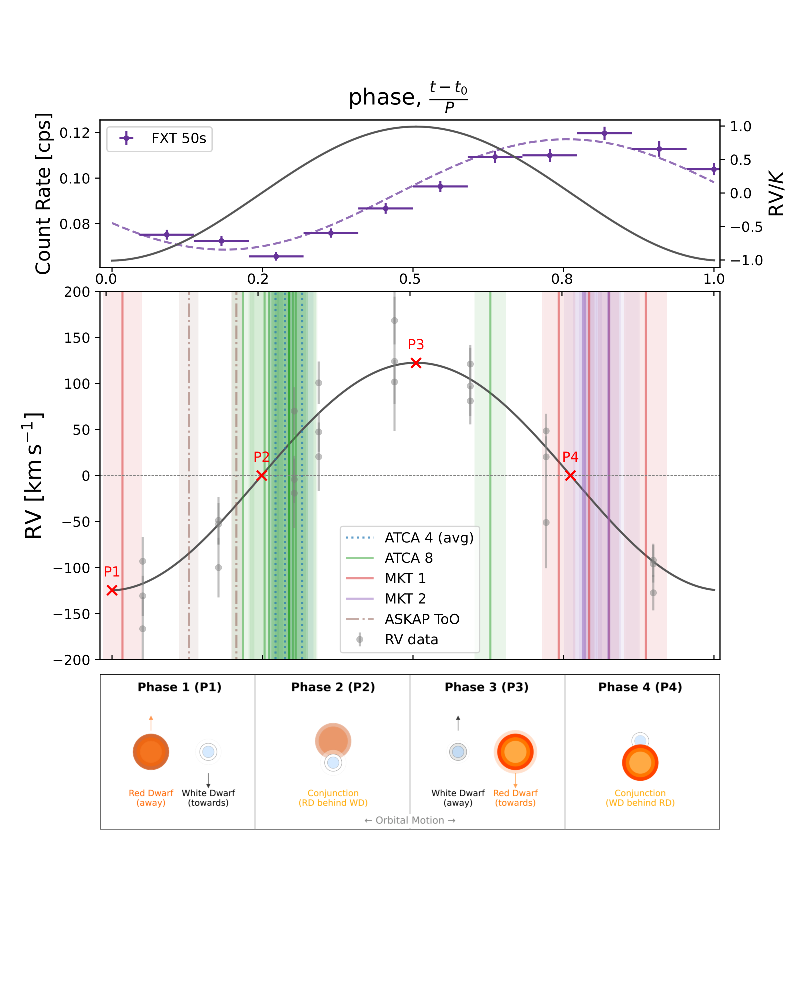<br />
图注：Phase-folded pulse timing. \(\textit{Upper}\): \(\textit{Einstein Probe}-FXT\) X-ray data compared to the normalised median two-body radial velocity posterior from \tj\ (black curve), with the standard error of the binned count rates shown as vertical error bars and the width of the phase bins shown as horizontal error bars. We also show the sinusoid fitted to the X-ray data (purple dashed curve) peaking at an orbital phase of $\phi_{\rm{X}}=0.89 \pm0.19$. \(\textit{Middle}\): arrival times of radio pulses compared to \(\textit{SOAR}\) radial velocity measurements (gray markers with $1\sigma$ error bars) and median two-body radial velocity posterior from \tj\ (black curve). We show pulses from MKT Epoch~1, MKT Epoch~2, and ATCA Epoch~8, in red, purple, and green. The ASKAP ToO pulses are denoted as dot-dashed brown lines. For the double-peaked pulses of ATCA Epoch~4 we show, in blue, the average pulse arrival times (dotted lines) taken halfway between the two peaks of each pulse. The light shaded regions denote the pulse width. The red crosses denote the binary phases shown below. \(\textit{Bottom}\): Sketch of orbital phases with a face-on inclination. Phases 1 and 3 correspond to the binary quadratures -- with the two stars side-by-side -- where the Doppler shift maxima/minima occur. Phases 2 and 4 correspond to the binary conjunctions, when the radial velocity is zero.<br />
对应解读：对应“X 射线光变与相位折叠图”和“多波段相位对齐图”，也支撑模型拟合中射电到达时间、X 射线调制与光谱径向速度同相位比较的讨论。<br />
入选理由：这是候选图中最直接支撑本文核心多波段关联的图：上 panel 给出 Einstein Probe-FXT X 射线相位折叠和正弦拟合，中 panel 把射电脉冲到达时间、SOAR 径向速度点和双体径向速度后验放在同一轨道相位框架中，下 panel 解释轨道几何。它同时检验 1.3 h 轨道周期、X 射线调制和射电爆发窗口之间的关系，科学价值最高。<br />
来源与置信度：\(arxiv_source\)；high；\(arxiv_source\) / \(manuscript_single_arxiv.tex\):figure[2]</p>
<p><strong>Fig04</strong><br />
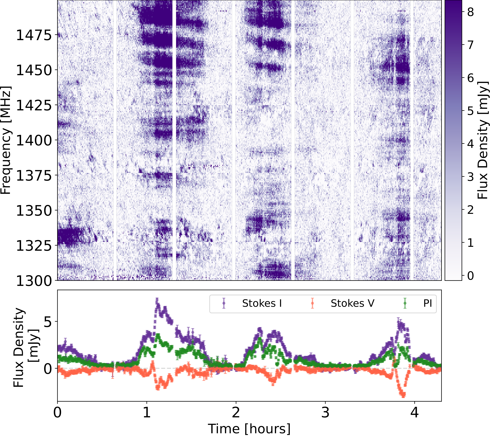<br />
图注：Total intensity (Stokes \textit{I}) dynamic spectra of \askapshort\ pulses from MKT Epoch~1. Corresponding Stokes \(\textit{I},\textit{V},\) and $PI=\sqrt{Q^2+U^2}$ lightcurves are shown with $1\sigma$ standard error of the mean error bars. These dynamic spectra (top) use \(\SI{0.84}{\mega\hertz}\) frequency averaging and \(\SI{16}{\second}\) time averaging. We show the first half of the observation in the top of the observing band to highlight the modulation lane effect. Vertical white space corresponds to calibration scans.<br />
对应解读：对应“射电动态谱”和关键图表导读中关于爆发频率漂移、调制 lane、时间—频率结构以及射频干扰/校准空白区检查的部分。<br />
入选理由：该图展示 MKT Epoch 1 的高时间、高频率分辨率 Stokes I 动态谱，并配有 Stokes I、V 和线偏振 PI 光变曲线，特别标注用于突出 modulation lane effect。它比一般宽时间平均图更适合检查射电爆发是否存在系统性频率结构、频率漂移或传播/几何调制。<br />
来源与置信度：\(arxiv_source\)；high；\(arxiv_source\) / \(manuscript_single_arxiv.tex\):figure[4]</p>
<p><strong>Fig06</strong><br />
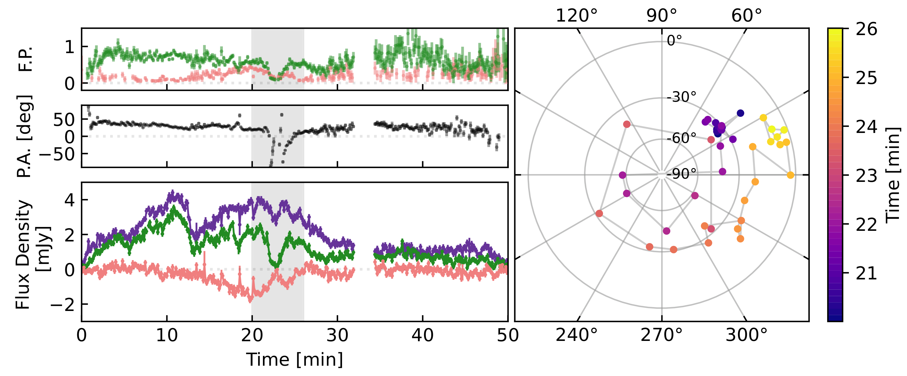<br />
图注：Polarisation characteristics of a pulse detected in observation MKT Epoch~1. \(\textit{Left:}\) The lower panel show the Stokes \(\textit{I}\) (purple), Stokes \(\textit{V}\) (pink), and \(\textit{PI}\) (green) lightcurves. The middle panel shows the polarisation position angle and the upper panel shows the circular (pink) and linear (green) polarisation fractions. We use $1\sigma$ error bars in all panels. \(\textit{Right:}\) A stereographic projection of the polarisation state on the Poincar{\'e} sphere during the grey shaded region of the pulse, showing two complete revolutions about the Stokes \(\textit{V}\) axis (\SI{-90}{\degree}) before the polarisation state returns to the original position angle.<br />
对应解读：对应“射电偏振诊断图”和关键图表导读中关于椭圆偏振、线偏振/圆偏振比例、偏振角随脉冲演化以及 Poincaré 球轨迹的讨论。<br />
入选理由：该图是判定‘椭圆偏振’最关键的诊断图，直接给出 Stokes I、V、PI 光变、偏振位置角、圆偏振和线偏振比例，并用 Poincaré 球显示偏振态绕 Stokes V 轴旋转。相比只含动态谱的图，它更能证明偏振不是单一 Stokes 通道噪声或简单校准假象。<br />
来源与置信度：\(arxiv_source\)；high；\(arxiv_source\) / \(manuscript_single_arxiv.tex\):figure[6]</p>
<p><strong>Fig12</strong><br />
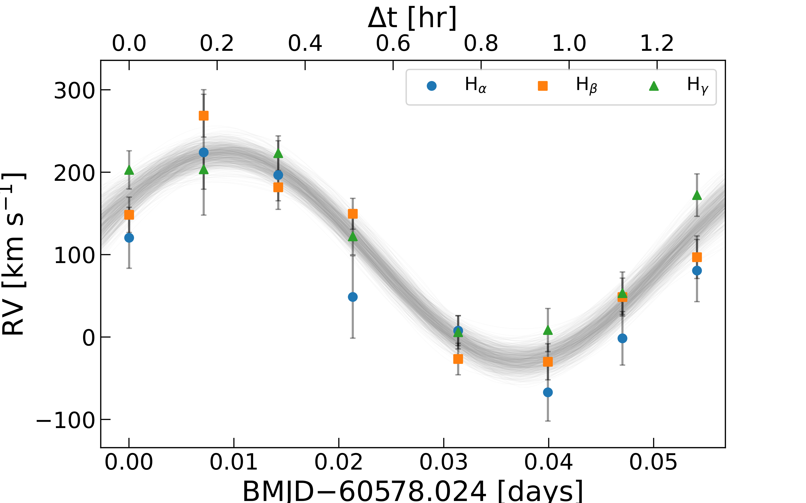<br />
图注：Radial velocity measurements from \(\textit{SOAR}\) observations with $1\sigma$ error bars around the fitted values. We show posterior sample curves from \tj\ in grey. We use circle, square, and triangle markers for the $\rm{H}_{\alpha}$, $\rm{H}_{\beta}$, and $\rm{H}_{\gamma}$ radial velocity measurements, respectively.<br />
对应解读：对应“径向速度周期拟合图”和模型拟合中光学发射线速度曲线、正弦/双体模型后验、周期可靠性及发射线速度解释限制的部分。<br />
入选理由：该图直接展示 SOAR 的 Hα、Hβ、Hγ 径向速度测量点、1σ 误差棒和 posterior sample curves，是检查 1.3 h 光谱轨道周期及速度曲线相位覆盖的关键图。它比单纯光谱堆叠图更直接支撑轨道周期和相位建模。<br />
来源与置信度：\(arxiv_source\)；high；\(arxiv_source\) / \(manuscript_single_arxiv.tex\):figure[12]</p>
<p><strong>Fig01</strong><br />
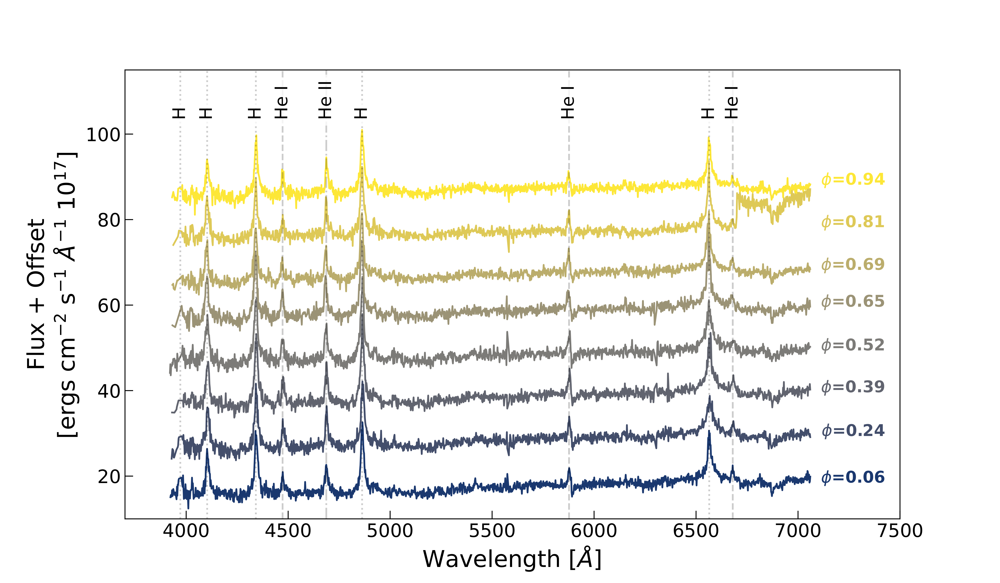<br />
图注：\(\textit{SOAR}\) spectra of \(\gaiashort.\) We show each of the consecutive $10$\,min spectra with an offset and plot the rest wavelengths for the Hydrogen Balmer series (dotted), Helium I (dashed), and Helium II emission lines (dot-dashed). The orbital phases $\phi$ are shown next to each corresponding spectrum. The red excess in the $\phi=0.81$ spectrum (second from the top) is likely due to a calibration error.<br />
对应解读：对应“光学光谱图”和关键图表导读中关于 Balmer 线、He I、He II 发射线、吸积激变变星分类以及多相位谱线变化的部分。<br />
入选理由：该图给出连续 10 min SOAR 光谱，并标出氢 Balmer、He I、He II 发射线及对应轨道相位，是确认系统为吸积白矮星/激变变星的基础证据。它能让读者直接检查发射线组合、线型和随相位变化，而不是只依赖文字分类。<br />
来源与置信度：\(arxiv_source\)；high；\(arxiv_source\) / \(manuscript_single_arxiv.tex\):figure[1]</p>
<p><strong>Fig11</strong><br />
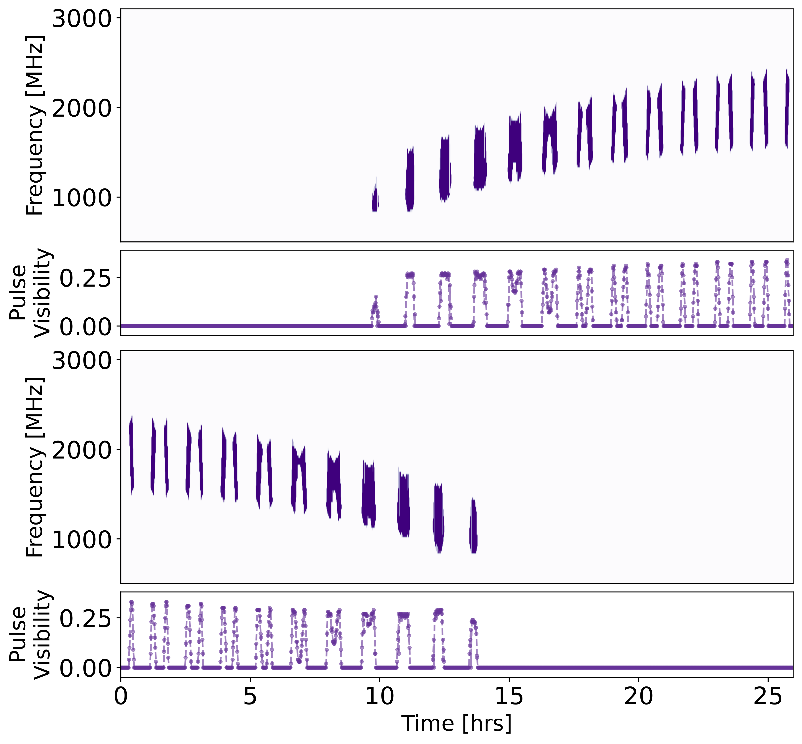<br />
图注：Example synthetic dynamic spectra generated from a geometric model representing \askapshort\ as a pair of interacting magnetic dipoles in a near-synchronous binary. Each panel shows the simulated visibility of ECME as a function of frequency and time over several orbital cycles, where non-zero values indicate the presence of at least one viable emission site with the appropriate local field strength and orientation. The rising (Top) and falling (Bottom) of the pulse frequency corresponds to different phases of the beat period. Lower panels show the simulations as a time series of emission visibility. The time axis begins at inferior white dwarf conjunction. The model reproduces several key features of radio pulses in our observations including: double-peaked pulses, variable spacing been pulse pairs, modulation of frequency cutoffs, and intermittency.<br />
对应解读：对应模型拟合和详细解读中关于更长拍频周期、近同步双星磁偶极几何、ECME 可见性、频率漂移、双峰脉冲和间歇性的解释。<br />
入选理由：该图不是原始观测诊断，但它直接展示作者提出的几何模型如何复现双峰脉冲、频率 cutoff 调制、脉冲间隔变化和间歇性等关键射电现象。对于理解‘频率漂移可能来自更长拍频周期’这一解释，它比人口统计或颜色星等图更有科学支撑价值。<br />
来源与置信度：\(arxiv_source\)；high；\(arxiv_source\) / \(manuscript_single_arxiv.tex\):figure[11]</p>
<h4 id="_61">强相关工作</h4>
<p>这篇工作应放在近年长周期射电暂现源研究的脉络中看。相关检索关键词包括 “long period radio transient”, “ASKAP coherent radio transient”, “white dwarf binary radio pulses”, “cataclysmic variable coherent radio emission” 和 “ultra-long period magnetar”。与一些被解释为孤立超慢中子星或磁星候选的源相比，ASKAP J174508.9-505149 的优势是具有光谱轨道周期和吸积证据，因此它对源族群分类更有约束力。</p>
<p>它也与白矮星脉冲星和磁性激变变星研究相连。AR Scorpii 等系统说明白矮星自转能量和伴星相互作用可以产生强非热辐射；中间极和极向激变变星说明磁场可以控制吸积流并产生相位调制 X 射线。本文的新点是把长周期相干射电暂现行为明确接到一个吸积激变变星上。相反观点仍然会强调：高亮温相干射电更像中子星磁层过程，白矮星模型必须证明有足够的粒子加速、电势和低吸收传播通道。检索时可同时查 “AR Scorpii”, “intermediate polar radio emission”, “electron cyclotron maser white dwarf”, “GLEAM-X long period transient” 和 “ultra-long period radio source magnetar”。</p>
<p><strong>相似工作</strong>：<br />
- https://arxiv.org/abs/2606.04232<br />
- https://arxiv.org/abs/2201.12052<br />
- https://arxiv.org/abs/2305.06188</p>
<p><strong>基础理论 / 方法工作</strong>：<br />
- https://ui.adsabs.harvard.edu/abs/2017NatAs...1..729M/abstract<br />
- https://ui.adsabs.harvard.edu/abs/2016Natur.537..374M/abstract<br />
- https://ui.adsabs.harvard.edu/abs/1983ApJ...270..253L/abstract</p>
<p><strong>相反观点 / 张力线索</strong>：<br />
- https://arxiv.org/abs/2307.10302<br />
- https://arxiv.org/abs/2402.10637</p>
</details>
<h3 id="7-multifrequency-synthesis-via-chibi-colorful-hierarchical-interferometric-bayesian-imaging">7. Multifrequency Synthesis via CHIBI: Colorful Hierarchical Interferometric Bayesian Imaging</h3>
<ul>
<li>来源：arXiv / astro-ph.HE</li>
<li>链接：https://arxiv.org/abs/2606.04094v1</li>
<li>作者：Erandi Chavez, Paul Tiede, Sara Issaoun, Michael D. Johnson, Dominic Pesce, Yuh Tsunetoe, Daniel C. M. Palumbo</li>
<li>评分：novelty 8/10，importance 8/10，relevance 7/10，final 8.65/10</li>
<li>推荐理由：面向EHT/VLBI多频贝叶斯成像的新方法，可用于相对论喷流和M87*等高能天体环境；虽非伽马射线/宇宙线核心，但方法学可复用性较强。</li>
</ul>
<p><strong>中文题目</strong>：Multifrequency Synthesis via CHIBI: Colorful Hierarchical Interferometric Bayesian Imaging</p>
<p><strong>做了什么</strong>：本篇论文已通过推荐筛选，但自动详细解读生成失败。可先根据题目和摘要判断阅读优先级：From magnetized plasma of relativistic jets to dust grains within protoplanetary disks, we study the emission mechanisms of radio sources via their rich spectral structure. Multifrequency Synthesis (MFS) is a technique in which interferometric data at multiple frequencies are imaged simultaneously, resulting in a denser sampling of spatial scales, higher imaging fidelity, and tighter constraints on the source's spectral structure and evolution. We describe a new method of MFS imaging reconstruction in a hierarchical interferometric Bayesian inference framework, CHIBI. The model parametrization is based on the spectral behavior of synchrotron radiation, the emission mechanism dominating the radio emission observed from galactic nuclei. We show results of this method on observations of jet sources from the MOJAVE catalog with the Very Long Baseline Array, and showcase the prospects for MFS imaging of M87* with simulated data from the Event Horizon Telescope (EHT) and future expansions such as the next generation EHT and the Black Hole Explorer. These demonstrations highlight the benefit of MFS to reconstruct higher-fidelity images and spectral index maps, producing scientifically richer results in a statistically grounded framework, implemented in Comrade.jl.</p>
<p><strong>为什么重要</strong>：这篇论文在今日候选中通过了本地推荐阈值，说明它与当前高能天体物理兴趣方向或质量标准较匹配；详细内容建议优先查看原文摘要、结论和图表。</p>
<p><strong>理论 / 观测 / 仪器方法价值</strong>：由于 LLM 摘要 JSON 解析失败，本节保留为安全占位，不编造论文未确认的公式、图号或链接。</p>
<p><strong>为什么应该关注</strong>：日报仍保留这篇论文，是为了避免单篇摘要失败导致整份日报缺失。请把它作为需要人工快速复核的高优先级候选。</p>
<details class="paper-detail">
<summary>展开详细解读：文章讲解、背景、理论、重点章节、图表与相关工作</summary>
<h4 id="_62">文章详细讲解</h4>
<p>本文的科学问题可以概括为：能否在一个统计一致的干涉贝叶斯框架中，把多频 VLBI 数据联合成像，并同时恢复总强度和谱指数结构？这比单纯提高图像锐度更重要，因为喷流和黑洞吸积流的物理解释往往依赖谱信息。对于 MOJAVE/VLBA 喷流，核心与喷流的谱指数差异是检验同步辐射和自吸收图像的关键；对于 M87*，230/345 GHz 或未来 79/230 GHz 的联合观测则关系到环、喷流发射区和高频锐结构能否同时被约束。</p>
<p>方法上，CHIBI 将多频天空亮度写成参考频率强度图加频谱参数图的形式，并通过干涉前向模型生成各频率的模型可见度。与单频 HIBI 相比，CHIBI 的新增内容不是简单多一个图像，而是在同一层级模型中把频率维信息作为物理约束引入。图 3 的合成高斯源测试尤其重要，因为它包含真值、后验均值、不确定度和 Truth-Mean 残差，可用于判断改进是否真的来自多频约束而非视觉后处理。</p>
<p>关键结果之一来自真实 VLBA/MOJAVE 源 OJ287 的对比。图 6 显示 CHIBI 多频成像、单频 HIBI 和已发表单频 CLEAN 结果的并列比较，顶行为参考频率 8.1 GHz 的总强度图，底行为谱指数图。值得注意的是，Comrade.jl 的结果以原生分辨率展示，而 CLEAN 图像被 8.1 GHz CLEAN beam 平滑；因此读者不能只凭“CHIBI 更锐利”下结论，而应同时看可信度轮廓、\(\sigma_{\log I}\) 和 \(\sigma_\alpha\) 所标示的可靠区域。图注指出其恢复了 \(\alpha>0\) 核和 \(\alpha<0\) 喷流的标准结构，但更确定的说法应建立在后验不确定度和残差上。</p>
<p>M87* 部分展示了方法的高能天体物理前景。图 9 使用 GRMHD 模拟真值比较当前 EHT 在 230 和 345 GHz 下的 CHIBI MFS 与单频 HIBI。图注明确指出，345 GHz 数据过稀而无法单独成像，因此谱指数图只能通过多频综合得到。图 10 进一步给出 MAP 初始化、后验均值和残差，说明即使 MFS 启用了谱指数图，当前阵列的欠采样仍会驱动较大的不确定度。也就是说，本文并非声称当前 EHT 已能无歧义测得精细谱结构，而是展示了统计框架和阵列升级需求。</p>
<p>局限性应从三个层面读。第一是模型层面：幂律谱指数模型适用于有限频率范围内的同步辐射近似，但若存在强谱曲率、Faraday 效应、非同时变时或多组分吸收，简单 \(\alpha\) 图可能不足。第二是数据层面：不同频段的振幅标定、相位误差和散射效应会直接投射到谱指数。第三是推断层面：HMC 或后验采样是否充分混合、超参数是否支配低信噪比区域、MAP 初始化是否导致局部模式，都是必须检查的诊断项。</p>
<p>下一步修复或扩展的阅读重点包括：确认论文是否量化了不同阵列配置下的谱指数误差；比较 CHIBI 与传统 MFS-CLEAN 或正则化最大似然方法的定量指标；检查 BHEX/ngEHT 场景中哪些基线真正改善环的锐结构，哪些频段主要约束喷流谱指数；以及在真实源上是否进行了交叉验证，例如留出某些基线或频段后预测其可见度。</p>
<h4 id="_63">背景知识</h4>
<p>甚长基线干涉测量（VLBI）的基本困难是：望远镜阵列并不直接给出天空图像，而是在傅里叶平面采样有限数量的复可见度。单一频率下的基线覆盖往往稀疏，导致图像重建必须依赖正则化、先验或 CLEAN 类反卷积假设。多频综合（multifrequency synthesis, MFS）的历史动机正是利用不同频率下同一物理基线对应不同的 \((u,v)\) 坐标这一事实，把多频观测联合起来，从而更密集地采样空间频率，并同时约束源的频谱结构。</p>
<p>本文研究对象主要是射电活动星系核和相对论性喷流，包括 MOJAVE 目录中的 VLBA 喷流源，以及以 M87* 为代表的 EHT 黑洞阴影尺度源。对这类源而言，总强度图像本身只描述“哪里亮”，而频谱指数图进一步描述“亮度如何随频率变化”，因而能区分自吸收核心、光学薄喷流、谱老化区域、喷流发射区以及可能的等离子体或磁场结构变化。摘要中特别指出，模型参数化基于同步辐射的谱行为，这是银河核射电辐射中常见的主导机制。</p>
<p>CHIBI 的定位不是简单把不同频率 CLEAN 图像相减，而是在层级干涉贝叶斯成像框架中直接拟合干涉数据。这样做的关键价值有两点：第一，成像和谱指数估计不再是两个分离步骤，而是同一个前向模型中的联合参数推断；第二，不确定度可从后验分布传播到图像、谱指数图和可信度轮廓，而不是只给出一个看似锐利但统计含义不清的重建图。</p>
<p>常见误区之一是把 MFS 理解为“把所有频率数据简单叠加以提高信噪比”。事实上，如果源的频谱结构显著，简单叠加会把真实的频率依赖误解释为空间结构，尤其在核心-喷流系统中，核心常呈平坦或反转谱，而下游喷流常呈陡谱。MFS 必须显式建模 \(I_\nu(\boldsymbol{x})\) 随 \(\nu\) 的变化，否则高频数据对小尺度结构的约束和低频数据对扩展结构的约束会被错误混合。</p>
<p>另一个误区是认为多频联合成像必然优于单频成像且没有代价。实际上，联合模型引入谱指数、谱曲率或层级超参数后，会带来新的退化：强度低的区域谱指数极易受噪声和先验支配；不同频率间的校准误差会伪装成谱结构；非同时观测或源变时会破坏“同一天空模型只随频率平滑变化”的假设。因此阅读本文时应同时关注图像改善与后验诊断，而不仅是视觉上更细的结构。</p>
<h4 id="_64">基础理论 / 方法脉络</h4>
<p>干涉测量的核心物理图像是：天空亮度分布 \(I_\nu(l,m)\) 经过阵列响应投影为复可见度 \(V_\nu(u,v)\)。在小视场近似下，二者近似互为二维傅里叶变换。每一条基线只采样一个或少数几个傅里叶点，地球自转和多频观测会让采样轨迹变得更丰富。频率升高时，同一物理基线 \(\boldsymbol{b}\) 对应的 \((u,v)=\boldsymbol{b}/\lambda\) 变大，因此高频更敏感于细小结构，低频更敏感于相对粗的结构。</p>
<p>射电喷流中的同步辐射通常用幂律谱近似：\(I_\nu \propto \nu^\alpha\)。谱指数 \(\alpha\) 的符号和大小有直接物理含义：光学薄同步辐射常给出负谱指数；受自吸收影响的致密核心可呈平坦谱或正谱指数；若粒子能谱、磁场或吸收条件沿喷流变化，\(\alpha\) 会在图像上呈空间结构。本文的 MFS 参数化正是从这种同步辐射频谱行为出发，把参考频率下的强度图和谱指数图作为共同约束对象。</p>
<p>从统计角度看，传统 CLEAN 图像常被看作某种点源字典和残差停止准则的解，而贝叶斯成像把图像像素、谱参数、校准参数和层级超参数共同视为待推断量。CHIBI/HIBI 这类框架的重要思想是建立从参数到复可见度的完整前向模型，再用似然函数比较模型可见度和观测可见度。图 2 所示的层级前向模型应当作为本文方法的入口：它说明哪些参数由用户固定，例如视场、网格大小等，哪些参数通过后验采样获得。</p>
<p>本文的观测量可以包括复可见度，也可能在 VLBI 实践中扩展到闭合相位、闭合振幅或增益边缘化后的量；已给出的图注明确提到图 2 展示的是拟合复可见度数据产品时的完整层级前向模型。因此阅读时要检查作者在哪些测试中直接使用复可见度、是否处理站点增益、不同频段间是否共享几何结构、以及谱指数图是否只在有足够强度支持的区域解释。</p>
<p>MFS 的主要退化来自“频率维”和“空间维”的耦合。由于不同频率同时改变了天空亮度和 \((u,v)\) 采样位置，如果模型过弱，算法可能把频率覆盖带来的分辨率变化误归因于谱指数；如果先验过强，又可能把真实谱结构抹平。本文用合成高斯源、真实 MOJAVE 数据和 M87* 模拟逐级验证方法，正是为了区分受控条件下的可恢复性、真实数据中的校准和模型不确定度，以及未来阵列设计对谱成像的影响。</p>
<h4 id="_65">公式与推导</h4>
<p>从窄视场干涉测量出发，天空亮度与复可见度的关系可写为</p>
<div class="math-display">\[V_\nu(u,v)=\int I_\nu(l,m)\,A_\nu(l,m)\,e^{-2\pi i(ul+vm)}\,dl\,dm,\]</div>
<p>其中 \(I_\nu\) 是频率 \(\nu\) 的比强度，\(A_\nu\) 是主波束或方向响应，\((l,m)\) 是小角度天空坐标。VLBI 小视场下常近似 \(A_\nu\approx 1\)，但宽场或频率跨度大时这个近似需要重新检查。</p>
<p>同一物理基线 \(\boldsymbol{b}\) 在不同频率对应不同傅里叶坐标：</p>
<div class="math-display">\[\boldsymbol{u}_\nu=(u,v)=\frac{\boldsymbol{b}_\perp}{\lambda}=\frac{\nu\boldsymbol{b}_\perp}{c}.\]</div>
<p>这说明 MFS 的几何收益来自频率改变采样半径；但同一变化也会改变源亮度，因此必须同时建模频谱。</p>
<p>同步辐射在有限频段内常用幂律近似：</p>
<div class="math-display">\[I_\nu(\boldsymbol{x})=I_{\nu_0}(\boldsymbol{x})\left(\frac{\nu}{\nu_0}\right)^{\alpha(\boldsymbol{x})},\]</div>
<p>其中 \(\nu_0\) 是参考频率，\(I_{\nu_0}\) 是参考频率强度图，\(\alpha\) 是谱指数图。本文的 CHIBI MFS 可理解为围绕这类关系建立层级图像模型。</p>
<p>为了数值稳定，常在对数强度空间写成线性形式：</p>
<div class="math-display">\[\log I_\nu(\boldsymbol{x})=\log I_{\nu_0}(\boldsymbol{x})+\alpha(\boldsymbol{x})\log\left(\frac{\nu}{\nu_0}\right).\]</div>
<p>这条式子解释了为什么图中常展示 \(\sigma_{\log I}\) 与 \(\sigma_\alpha\)：它们分别控制参考亮度和频率外推/内插的不确定度。</p>
<p>若允许谱曲率，更一般的局部展开为</p>
<div class="math-display">\[\log I_\nu=\log I_{\nu_0}+\alpha\,\eta+\frac{1}{2}\beta\eta^2+\cdots,\quad \eta\equiv \log(\nu/\nu_0),\]</div>
<p>其中 \(eta\) 是谱曲率。本文摘要强调基于同步辐射谱行为，若正文未引入 \(eta\)，读者应把幂律近似视为有限频率范围内的工作模型，并在宽频或吸收显著时警惕偏差。</p>
<p>离散成像时，第 \(k\) 个观测可见度的模型值可写为</p>
<div class="math-display">\[V^{\rm mod}_k=\sum_{p} I_{\nu_k}(\boldsymbol{x}_p)\,e^{-2\pi i\boldsymbol{u}_k\cdot \boldsymbol{x}_p}\,\Delta\Omega_p,\]</div>
<p>其中 \(p\) 标记像素，\(\Delta\Omega_p\) 是像素立体角。该式是图像参数与干涉数据之间的基本前向算子。</p>
<p>若拟合复可见度并假设独立高斯热噪声，似然可写为</p>
<div class="math-display">\[\ln \mathcal{L}=-\frac{1}{2}\sum_k \frac{|V^{\rm obs}_k-g_{a(k)}g^*_{b(k)}V^{\rm mod}_k|^2}{\sigma_k^2}+{\rm const},\]</div>
<p>其中 \(g_a,g_b\) 是两站复增益，\(\sigma_k\) 是可见度噪声。若论文某些实验固定或边缘化增益，应据此修改这条诊断式。</p>
<p>层级贝叶斯后验一般写成</p>
<div class="math-display">\[p(\theta,\phi\mid d)\propto p(d\mid \theta,\phi)\,p(\theta\mid \phi)\,p(\phi),\]</div>
<p>其中 \(	heta\) 包括图像和谱指数参数，\(\phi\) 包括控制平滑度、相关长度、幅度尺度等超参数。CHIBI 的“hierarchical”重点就在于这些先验结构可由数据部分约束，而不是完全手调。</p>
<p>从两频率亮度估计谱指数的直观极限为</p>
<div class="math-display">\[\alpha(\boldsymbol{x})=\frac{\log I_{\nu_2}(\boldsymbol{x})-\log I_{\nu_1}(\boldsymbol{x})}{\log(\nu_2/\nu_1)}.\]</div>
<p>但这只是图像已完全对齐且同分辨率时的近似。CHIBI 的优势是避免先独立成像再相除，而是在可见度层面联合推断，从而更自然地传播协方差。</p>
<p>谱指数误差的简化传播为</p>
<div class="math-display">\[\(\sigma^2_\alpha\approx\) \frac{\sigma^2_{\log I_1}+\sigma^2_{\log I_2}-2\,{
m Cov}(\log I_1,\log I_2)}{[\log(\nu_2/\nu_1)]^2}.\]</div>
<p>该式说明频率间隔越小，谱指数越难测；两频图像误差相关性和校准系统误差也会显著影响 \(\sigma_\alpha\)。读图时应把可信度轮廓和 mask 区域与这一直觉联系起来。</p>
<h4 id="_66">模型拟合 / 应用方法</h4>
<p>CHIBI 拟合的核心量不是单张图像，而是一组能生成多频天空亮度的参数：参考频率总强度图 \(I_{\nu_0}\)、谱指数图 \(\alpha\)，以及控制图像平滑度、相关长度或幅度尺度的层级超参数。若实际实现中还包含站点增益、噪声重标定或相位相关参数，这些也应进入后验或被边缘化。单频 HIBI 则可视为没有频谱联动的对照模型，用来判断多频约束带来的增益。</p>
<p>似然层面，图 2 明确说明展示的是拟合复可见度作为数据产品时的前向模型。理想情况下，模型复可见度由每个频率的天空图经傅里叶采样得到，并与观测复可见度比较。VLBI 数据常有站点增益和大气相位误差，因此读者应核查作者是否固定增益、联合拟合增益、还是使用已校准数据。对于谱指数，跨频振幅标定的系统误差尤其危险，因为一个小的相对通量尺度偏差会直接变成 \(\alpha\) 的偏差。</p>
<p>后验采样诊断是本文可信度的关键。图 10 中 MAP 图像用于初始化 HMC，后验均值则来自采样结果；这意味着读者应查正文是否报告采样链长度、接受率、有效样本数、R-hat 或能量诊断等。若后验均值与 MAP 差别很大，可能说明非高斯后验或多峰结构；若差别很小但残差系统性明显，则可能是模型族不足或先验过强。</p>
<p>残差诊断应在数据域和图像域同时进行。图 3 和图 10 给出了 Truth-Mean 图像残差，合成和模拟实验中这是非常有力的验证；真实观测没有真值，因此更需要检查可见度残差、闭合量残差、按基线长度/时间/频率分组的残差，以及留一频段或留一基线的预测表现。若残差随频率呈系统趋势，说明谱模型或跨频校准可能有问题；若残差集中在长基线，说明超分辨结构可能不稳健。</p>
<p>主要退化包括强度-谱指数退化、分辨率-谱结构退化、先验-低信噪比退化和校准-物理谱退化。在 \(I\) 很低的区域，\(\log I\) 和 \(\alpha\) 的不确定度会急剧增大，因此图 9 对低于峰值 \(10^{-4}\) 的区域进行 mask 是合理的警示。读者不应解读 mask 外或可信度轮廓外的颜色纹理为真实物理结构。</p>
<p>系统误差方面，非同时多频观测的源变时会破坏 MFS 的基本假设；散射、偏振泄漏、频率相关核心位移和不同频段成像视场不一致也可能影响谱图。对于 M87*，GRMHD 模拟提供真值但也引入模型依赖：若真实源具有更复杂的电子温度分布、非热电子或时间平均效应，谱指数恢复难度可能不同。本文的结果应理解为方法演示和阵列前景评估，而不是所有目标上无条件适用的成像保证。</p>
<h4 id="_67">重点章节 / 结果段落怎么读</h4>
<ol>
<li>
<p>Introduction/动机部分：应重点寻找作者如何定义 MFS 的问题边界。阅读时区分三件事：提高 \((u,v)\) 覆盖、恢复谱指数图、在贝叶斯框架中传播不确定度。若引言讨论同步辐射喷流、MOJAVE、EHT/ngEHT/BHEX，应记录每个应用场景对应的物理问题，而不是只记“图像更好”。</p>
</li>
<li>
<p>CHIBI model 或 Methods 部分：这是最重要的技术章节。应逐项核查图像参数化、频率缩放关系、层级先验、数据产品和似然函数。特别要看作者是否直接拟合复可见度、如何处理站点增益、视场和像素网格如何固定，以及 HMC 或其他采样器如何初始化和收敛。</p>
</li>
<li>
<p>Synthetic tests 部分：受控实验的价值在于有真值。阅读图 3 附近文字时，应记录 CHIBI 与 HIBI 的差异是否通过残差和后验标准差量化，是否讨论了 beam、像素尺寸、未平滑图像和超分辨的限制。若合成源过于简单，也要把它视为方法 sanity check，而非最终天体物理证明。</p>
</li>
<li>
<p>MOJAVE/VLBA observations 部分：这是检验真实数据表现的章节。阅读 OJ287 等源的结果时，应检查数据频率、标定方式、与已发表 CLEAN 谱指数图的比较标准，以及 CHIBI 的可信度轮廓是否支持作者关于核心正谱和喷流负谱的结论。需要特别留意不同方法是否采用相同 beam 或是否存在原生分辨率与平滑图的视觉不公平比较。</p>
</li>
<li>
<p>EHT and future arrays 部分：这一部分应按“当前 EHT 限制”和“未来阵列增益”分开读。图 9/10 说明当前 230/345 GHz 联合成像能启用谱指数图但仍受欠采样限制；图 11 则说明 BHEX+地面阵列对环、喷流发射区和谱指数约束的潜在改进。阅读时应关注定量指标和不确定度，而不是只看未来图像更清晰。</p>
</li>
<li>
<p>Discussion/Conclusion 部分：应检查作者是否清楚列出模型假设和失败模式，例如幂律谱近似、源变时、跨频校准、稀疏高频覆盖和先验敏感性。好的结论应把 CHIBI 描述为统计框架和可扩展工具，而不是把所有谱结构都宣称为已确定物理发现。</p>
</li>
</ol>
<h4 id="_68">建议重点查看的图表</h4>
<ol>
<li>
<p>\((u,v)\) 覆盖与频率分布图：应检查不同频率是否真正补充了空间频率覆盖，而不是只在同一方向上重复采样。重点看低频是否提供短基线/扩展结构，高频是否提供长基线/细结构，以及覆盖的不对称性如何对应图像中可信度轮廓的方向。</p>
</li>
<li>
<p>层级前向模型示意图：对应图 2。应看清楚从参考频率强度、谱指数或相关潜变量到各频率天空图，再到复可见度和噪声模型的路径。还要确认哪些量固定、哪些量采样、哪些量被边缘化。</p>
</li>
<li>
<p>受控合成源重建图：对应图 3。重点比较真值、后验均值、标准差图和 Truth-Mean 残差。若 MFS 真的有效，残差应在强信号区域减小，谱指数不确定度应在有多频信息支撑的区域收缩，而不是仅仅图像看起来更平滑。</p>
</li>
<li>
<p>真实 MOJAVE/OJ287 对比图：对应图 6。应分开读总强度和谱指数两行，比较 CHIBI、单频 HIBI、CLEAN 三列。尤其要注意 CLEAN 图被 beam 平滑而 Comrade.jl 图以原生分辨率展示，视觉分辨率差异不能直接等同于物理显著性。</p>
</li>
<li>
<p>EHT M87* 真值-重建比较图：对应图 9。应检查 CHIBI MFS 是否恢复环结构、喷流或不对称亮度，以及谱指数图中哪些区域被强度阈值 mask 掉。若单频 345 GHz 无法成像，则谱指数图的可信度必须结合后验轮廓解读。</p>
</li>
<li>
<p>MAP、后验均值和残差诊断图：对应图 10。应看残差定义是否为 \(\log I_{\rm Truth}-\log I_{\rm Mean}\) 和谱指数差值，残差是否集中在环边缘、低亮度区或高梯度区，这些位置往往揭示分辨率和先验限制。</p>
</li>
<li>
<p>未来阵列/BHEX 或 ngEHT 预测图：对应图 11。应判断空间基线在高频是否改善中心环和喷流发射区的锐结构，低频地面阵列是否主要约束扩展喷流和谱指数。不要只看图像更漂亮，还要看可信度轮廓是否显著扩大到科学关心区域。</p>
</li>
</ol>
<h4 id="_69">关键图表逐图导读</h4>
<p>图 1/方法前置图若展示频率覆盖或数据设置，应先读横纵轴是否为 \((u,v)\) 坐标、基线长度或观测频率。关键不是点数多少，而是多频点是否填补了单频覆盖的空洞。若高频点只增加长基线而缺乏短基线，细结构可能改善，但扩展喷流和总通量仍可能依赖先验。</p>
<p>图 2 是 CHIBI 层级前向模型示意，应作为全篇方法路线图阅读。蓝色星号代表用户预先固定的参数，图注还说明视场和网格参数也由用户固定。读者需要沿箭头追踪：潜变量或图像参数如何生成参考强度和谱指数，如何经频率缩放得到各频率图像，如何经傅里叶采样得到复可见度，最后如何进入似然。陷阱是把这张图当成流程图略过；实际上它决定了后文不确定度是否有统计含义。</p>
<p>图 3 是合成多频高斯源的核心验证图。横向通常对应 8 GHz、12 GHz 和谱指数结果，纵向包括真值、后验均值、不确定度和 Truth-Mean 残差。应重点看 CHIBI 相对单频 HIBI 是否在强度和谱指数上同时降低残差，以及 \(\sigma_{\log I}\)、\(\sigma_\alpha\) 的可信区域是否与 \((u,v)\) 覆盖不对称性一致。图注指出可信度轮廓不对称并与 beam 方向相关，这是一种健康的诊断：不确定度反映了数据几何，而非被人为画圆。</p>
<p>图 6 是真实 OJ287 的主要展示。顶行是 8.1 GHz 参考频率总强度，底行是谱指数图；列方向比较 CHIBI MFS、单频 HIBI 和已发表 CLEAN。灰色细等高线在各列相同，便于对齐结构；金色和黑色粗线分别表示 \(\sigma_{\log I}=0.42\) 和 \(\sigma_\alpha=0.65\) 的可信度轮廓。读图时应把 \(\alpha>0\) 核和 \(\alpha<0\) 喷流视为物理预期，但只在黑色可信轮廓内给出较强解释。</p>
<p>图 9 是当前 EHT 对 M87 GRMHD 模拟的多频成像比较。左列真值，中列 CHIBI MFS，右列单频 HIBI；顶行为 230 GHz 总强度，底行为 230-345 GHz 谱指数。图注明确说 345 GHz 数据太稀疏，单频无法成像，因此没有对应的单频谱指数图。陷阱是把 MFS 谱指数图当成直接观测结果；它是由联合模型和稀疏高频数据共同约束的后验产物，必须结合 mask 和可信度读。</p>
<p>图 10 是图 9 的拟合诊断补充。列方向为真值、HMC 初始化用的 MAP、后验均值和残差，行方向为总强度与谱指数。总强度残差定义在对数强度上，谱指数残差是差值图，因此颜色尺度不能混用。若残差集中在环边缘或喷流基部，说明模型在高梯度结构和欠采样方向上仍有系统误差。</p>
<p>图 11 展示 BHEX 加地面阵列的未来观测。读法应强调频率和基线分工：230 GHz 空间长基线改善中心环和喷流发射区锐结构，79 GHz 加地面覆盖更有助于约束喷流谱指数。金色和黑色可信度轮廓的阈值不同于前面图，不能直接跨图比较“哪个更可靠”，而应在各自图注定义下判断科学区域是否进入低不确定度范围。</p>
<h4 id="_70">论文原图 / 可嵌入图片</h4>
<p><strong>Fig06</strong><br />
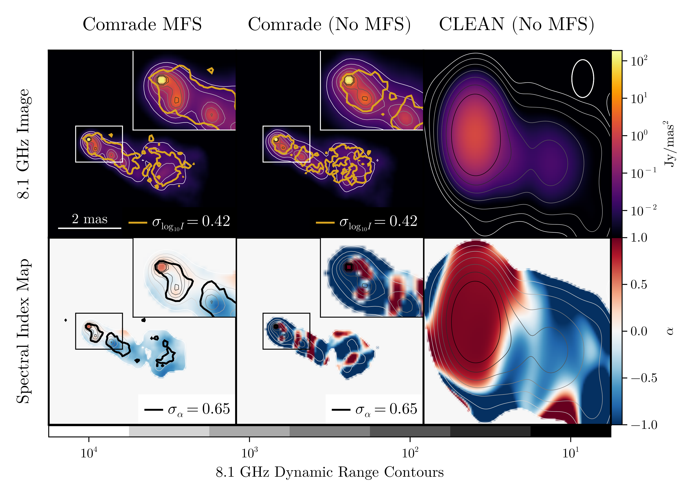<br />
图注：OJ287 reconstructions from VLBA MOJAVE data at 8.1 and 12.1\,GHz. From left to right, we show the multifrequency imaging results (CHIBI), the single frequency imaging results (HIBI), and the published single frequency CLEAN imaging results of this data \(\citep{Hovatta2014_MOJAVE_spectral_index,Lister2018MOJAVE}.\) The top row shows total intensity image at the reference frequency (8.1 GHz) and the bottom row shows the corresponding spectral index map for each test. The thin, grayscale contours are identical for each column; they trace out total intensity emission of the reference image in log-scale. The bold lines on the \(\texttt{Comrade.jl}\) images represent the ``credibility contours'' calculated from the posterior for this test: the gold lines trace $\sigma_{\log I} = 0.42$, and the black lines trace out $\sigma_{\alpha} = 0.65$. Note that only the CLEAN results are blurred here (with the 8.1 GHz CLEAN beam), the \(\texttt{Comrade.jl}\) results are shown at their native resolution, which display a significant amount of super-resolution. We show insets to highlight the super-resolved structure near the core. We recover the standard $\alpha>0$ core and $\alpha<0$ jet structure predicted by \(\citep{BlandfordKonigl1979_core_jet}.\) However the recovered structure is far more certain with MFS than single frequency imaging.<br />
对应解读：建议重点查看的主要数据与模型比较：VLBA/MOJAVE真实源OJ287的CHIBI多频成像、HIBI单频成像与已发表CLEAN结果对比。<br />
入选理由：这是论文在真实观测数据上的核心展示，直接比较CHIBI、单频HIBI和传统CLEAN，并同时给出总强度、谱指数图、可信度轮廓和超分辨核心结构，是支撑多频综合成像优于单频成像的最有力结果图之一。<br />
来源与置信度：\(arxiv_source\)；high；\(arxiv_source\) / main.tex:figure[6]</p>
<p><strong>Fig09</strong><br />
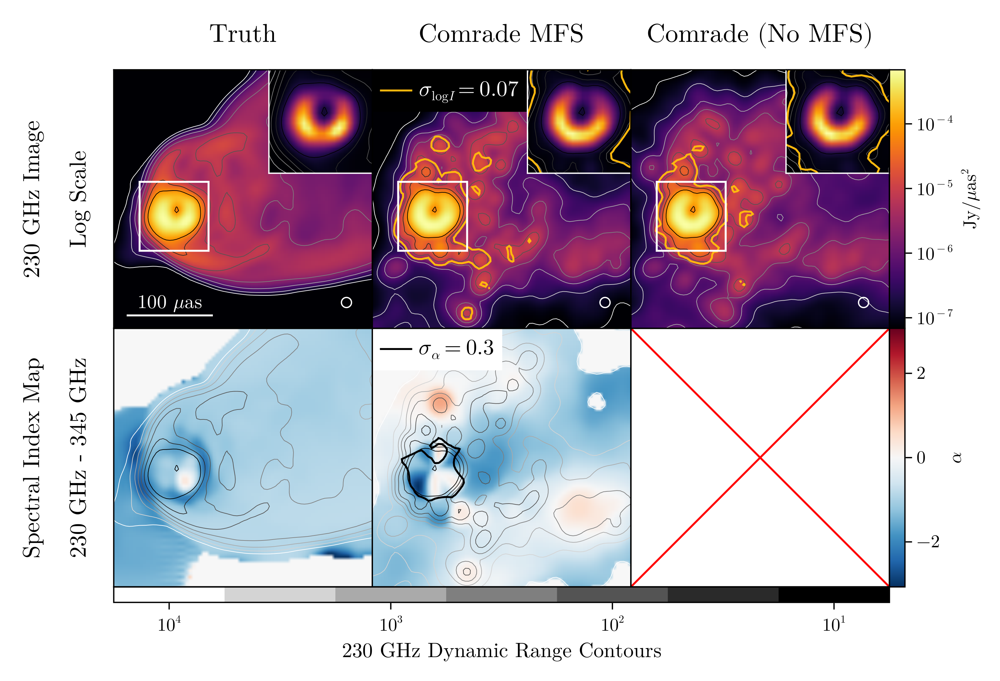<br />
图注：Imaging results of a GRMHD simulation of M87 with the current EHT at 230 and 345 GHz (see \autoref{sec:EHT}). From left to right: the ground truth GRMHD simulation, the CHIBI MFS imaging result, and the Single Frequency HIBI imaging results. The top and bottom rows are the total intensity images (230 GHz) and spectral index maps (230 - 345 GHz). Regions in the MFS spectral index map that correspond to total intensity values less than a factor of $10^{-4}$ dimmer than the maximum brightness have been masked. The insets show the inner ring structure in linear scaling. These images are blurred with a Gaussian kernel with FWHM equal to the \edt{half-beam at 230 GHz ($\sim 12 \, \mu$as)} to increase interpretability of the credibility contours. The solid grayscale contours in each column trace the 230 GHz total intensity emission in log-scale. There is no spectral index map corresponding to single frequency imaging for this dataset---the 345 GHz data are too sparse to image. Producing a spectral index map is only possible with multifrequency synthesis.<br />
对应解读：建议重点查看的主要模拟结果：当前EHT在230/345 GHz下对M87 GRMHD模拟的多频成像与单频成像比较。<br />
入选理由：该图对应摘要中强调的M87* EHT应用前景，清楚展示真值、CHIBI MFS结果和单频HIBI结果，并突出当前EHT中345 GHz数据过稀导致只有多频综合才能得到谱指数图，是论文高能天体物理应用价值的关键图。<br />
来源与置信度：\(arxiv_source\)；high；\(arxiv_source\) / main.tex:figure[9]</p>
<p><strong>Fig03</strong><br />
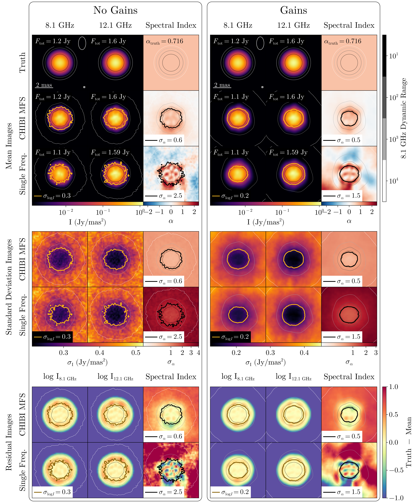<br />
图注：\edt{A comparison between single frequency (HIBI) and multifrequency CHIBI imaging of a multifrequency Gaussian source. The $(u,v)$ coverage for this test is the VLBA coverage for the MOJAVE OJ287 test (see \autoref{fig:uvcoverage}). The topmost row shows the ground truth images. Each subsequent grouping of rows shows the imaging results for each plotted quantity. The top grouping shows the posterior mean total intensity and spectral index images. The middle grouping shows the standard deviation of the log-scaled total intensity $\sigma_{\log I}$ and the spectral index $\sigma_{\alpha}$. The bottom grouping shows the residual images: Truth - Mean. From left to right, the columns represent the 8\,GHz image, 12\,GHz image, and spectral index results. The thin grayscale contours are identical across rows---they show the corresponding logarithmically spaced 8\,GHz intensity contours. The bold lines on the total intensity (gold) and the spectral index (black) results are ``credibility contours'': all regions within this contour have an uncertainty less than the indicated value. We overplot the 8.1\,GHz beam and the reconstruction pixel size on the top left plot for comparison---note that no images shown here are blurred. As expected, the credibility contours are asymmetric because of asymmetric baseline coverage, with the major axis oriented roughly along the minor axis of the beam.}<br />
对应解读：模型比较与残差诊断：合成多频高斯源中单频HIBI与多频CHIBI的图像域重建、后验不确定度和残差。<br />
入选理由：该图系统展示真值、后验均值、谱指数、log强度不确定度、谱指数不确定度以及Truth-Mean残差，最适合检查CHIBI方法在受控测试中是否真正提高图像保真度和谱结构恢复能力。<br />
来源与置信度：\(arxiv_source\)；high；\(arxiv_source\) / main.tex:figure[3]</p>
<p><strong>Fig10</strong><br />
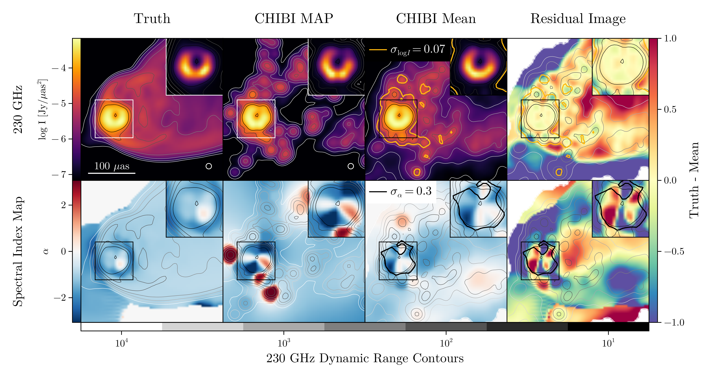<br />
图注：\edt{Metrics validating the EHT multifrequency imaging results with CHIBI. The top and bottom rows show the total intensity and spectral index imaging results, respectively. From left to right: The ground truth image, the MAP image used to initialize the HMC, the mean of the sampled posterior, and the residual image. The insets are shown in linear scaling. The residual images shown are calculated as follows. For total intensity, we calculate the residual between the log-scaled total intensity Truth and CHIBI Mean images: $\log \text{I}_\text{Truth} - \log \text{I}_\text{Mean}$. For spectral index, we calculate the difference images of the spectral index Truth and CHIBI Mean images: $\sigma_\text{Truth} - \sigma_\text{Mean}$. These images are blurred with a Gaussian kernel with FWHM equal to the half-beam at 230 GHz. Although recovery of a spectral index map is enabled by multifrequency synthesis, the undersampling of the data drives uncertainty in the recovered map without additional upgrades.}<br />
对应解读：残差与验证诊断：EHT多频M87模拟中CHIBI的MAP、后验均值与真值残差。<br />
入选理由：该图专门用于验证EHT多频成像结果，包含总强度和谱指数两行、真值/MAP/后验均值/残差四列，是检查拟合质量、欠采样带来的系统误差和谱指数不确定性的关键诊断图。<br />
来源与置信度：\(arxiv_source\)；high；\(arxiv_source\) / main.tex:figure[10]</p>
<p><strong>Fig11</strong><br />
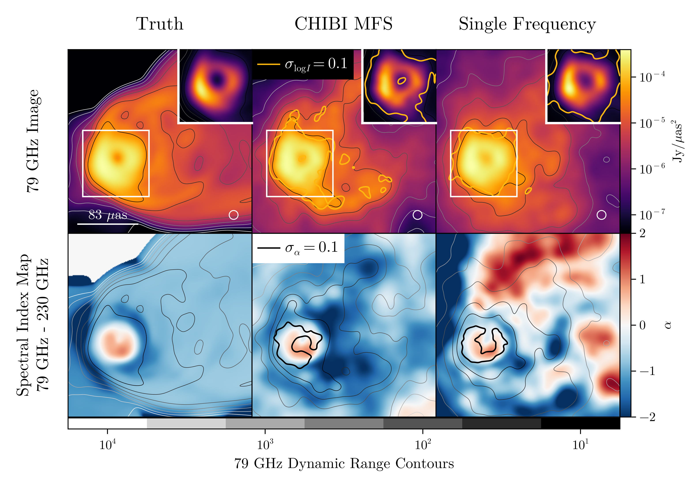<br />
图注：Identical to \(\autoref{fig:EHTsummary},\) but now displaying the imaging results from BHEX + ground array observations of M87 at 79 and 230 GHz. The credibility contours for the total intensity images shown here correspond to $\alpha_{\log I} = 0.1$ (gold), and $\alpha_{\alpha} = 0.3$ (black). \(\edt{The images are blurred with a circular Gaussian with FWHM equal to half the 79 GHz beam}\) to increase interpretability of the credibility contours. The high-frequency space baselines contributed from BHEX at 230 GHz contributes a better grasp on the sharp features of the central ring and jet launching region, while the 79 GHz coverage + ground array constrains the jet spectral index.<br />
对应解读：灵敏度与未来阵列预测：BHEX+地面阵列对M87在79/230 GHz下的多频成像前景。<br />
入选理由：该图展示未来空间VLBI扩展后对M87环和喷流发射区的成像能力，包含总强度、谱指数和可信度轮廓，可支撑论文关于BHEX/未来阵列提升高频锐结构与喷流谱指数约束的结论。<br />
来源与置信度：\(arxiv_source\)；high；\(arxiv_source\) / main.tex:figure[11]</p>
<p><strong>Fig02</strong><br />
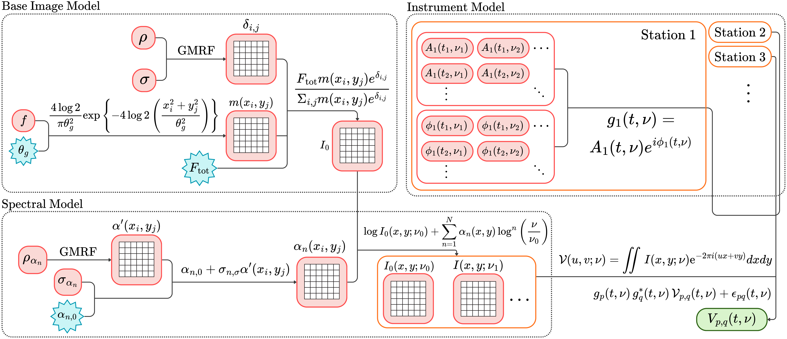<br />
图注：\edt{Schematic outlining the full hierarchical forward model as implemented in CHIBI when fitting complex visibilities as the data product. Parameters in blue stars represent those fixed by the user in advance. The grid parameters (FOV$_x$, FOV$_y$, N$_x$, N$_y$), not shown here, are also fixed by the user.}<br />
对应解读：模型拟合方法：CHIBI层级干涉贝叶斯成像的完整前向模型示意。<br />
入选理由：这是理解论文方法论的核心图，说明CHIBI如何在层级贝叶斯框架中从参数到复杂可见度建立前向模型；虽然不是结果图，但对于解读后续后验均值、不确定度、可信度轮廓和残差图不可或缺。<br />
来源与置信度：\(arxiv_source\)；high；\(arxiv_source\) / main.tex:figure[2]</p>
<h4 id="_71">强相关工作</h4>
<p>相关基础工作可沿三条线索检索。第一是经典射电干涉成像与 CLEAN/MFS-CLEAN 文献，关键词包括 “multifrequency synthesis”, “spectral index imaging”, “wideband radio interferometry”, “CLEAN deconvolution”。这条线能帮助理解为什么传统方法常在图像域或 Taylor 展开中处理频率依赖，以及它们在不确定度传播上的局限。</p>
<p>第二是贝叶斯或正则化最大似然 VLBI 成像工作，关键词包括 “Bayesian interferometric imaging”, “regularized maximum likelihood VLBI”, “Comrade.jl”, “EHT imaging”, “posterior image reconstruction”。CHIBI 显然与 HIBI/Comrade.jl 生态相连，读者应从论文参考文献中追踪其层级先验、HMC 采样和 VLBI 校准处理的来源。</p>
<p>第三是喷流与黑洞源的谱指数观测基础，关键词包括 “MOJAVE spectral index”, “VLBA AGN jet core spectral index”, “Blandford Konigl core jet”, “M87 EHT multifrequency imaging”。图 6 图注提到标准 \(\alpha>0\) core 与 \(\alpha<0\) jet 结构，并引用 Blandford-Königl 型核心-喷流图像；MOJAVE 相关工作则提供真实 VLBA 喷流谱指数图的比较基准。</p>
<p>潜在张力或对立观点主要来自方法假设而非结论本身。传统 CLEAN 结果经过 beam 平滑，贝叶斯结果可能展示原生分辨率甚至超分辨结构；因此需要查找关于 VLBI 超分辨、先验敏感性和后验校准的讨论。另一个张力是 EHT 高频数据稀疏时，MFS 能产生谱指数图，但其可信度是否足以支持精细物理解释，需要与 ngEHT/BHEX 阵列设计、GRMHD 模拟拟合和多频同时观测策略的文献交叉比较。</p>
<p><strong>相似工作</strong>：<br />
（未提供）</p>
<p><strong>基础理论 / 方法工作</strong>：<br />
（未提供）</p>
<p><strong>相反观点 / 张力线索</strong>：<br />
（未提供）</p>
</details>
<h2 id="_72">说明</h2>
<p>评分由 LLM 给出初评，再由本地阈值策略过滤；IACT、TeV 伽马射线和高能中微子天文学按重点方向处理。</p>
    </main>
  </div>
</body>
</html>
